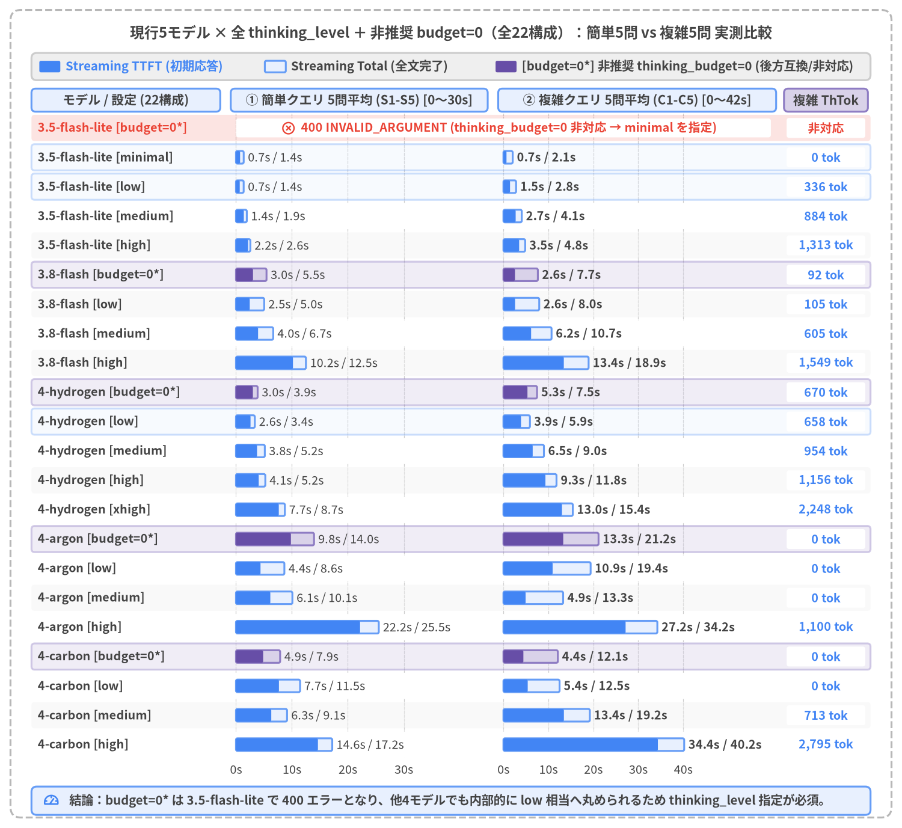

Gemini 3.8 Flash レイテンシ・アーキテクチャ評価レポート
Google AI Studio（google-genai SDK）における Streaming 配信・ThinkingConfig・Pydantic 適応型ルーティング・50ターン暗黙キャッシュの実機検証
Author: Yuichi Ito | Date: 2026-11 | Target: Google AI Studio (google-genai SDK / gemini-3.8-flash)

レポート概要と章構成（全5章）
本レポートは、Google AI Studio（google-genai SDK、genai.Client(api_key=GEMINI_KEY)）上の gemini-3.8-flash（および Gemini 3.5 / 4 シリーズ全5モデル）を対象に、パソコンが動かなくなったトラブルシュートを行う顧客とサポート窓口の対話シナリオを通じて、対話型AIアプリケーションの初期応答速度（TTFT：Time to First Token）と深層推論品質・長期対話スケーラビリティを両立するためのアーキテクチャ設計を、実機 API 計測ログ（src/gemini_evaluation/）に基づいて体系化した技術白書である。
| 章番号 | タイトル | 検証内容と主要インサイト |
|---|---|---|
| 第1章 | エグゼクティブサマリー | 全検証の結論マトリクス、主要ベンチマーク指標の横断比較、および本番システムに向けた推奨アーキテクチャ設計指針。 |
| 第2章 | 前提知識と測定方法 | LLM推論の3フェーズ（Prefill・Thinking・Decoding）、2次元トラジェクトリ（経過時間×累積出力文字数）、Pydantic response_schema の Cold/Warm 文法コンパイル特性と pydantic_core.from_json(..., allow_partial="trailing-strings") による逐次差分抽出、ExecutionTracer の計測基盤、および Gemini 3.5 / 3.8 / 4 シリーズ全モデルの分類と ThinkingConfig・Context Caching 仕様の実機比較検証。 |
| 第3章 | パラメータとレイテンシー | Blocking（generate_content）vs. Streaming（generate_content_stream）× ThinkingConfig 全6段階の実測比較、内部推論トークン数と TTFT の線形スケーリング則、PCサポート難易度3段階（Tier 1〜3）におけるトレードオフ、および 現行5モデル × 全 thinking_level（17構成）＋非推奨 thinking_budget=0（5構成）の計22構成×10問（220試行）横断レイテンシー比較。 |
| 第4章 | 適応型 Thinking ルーター（Adaptive Thinking Router） | Stage 1（簡易判断）と Stage 2（Thinking 推論：用途別3カテゴリ A/B/C）のモデル・thinking_level 選定候補と、gemini-3.8-flash（low → high） による45試行比較。平均 TTFT 2,336 ms・分岐精度 100%・複雑計算 100% を達成する Pattern A の優位性。 |
| 第5章 | マルチターンチャットでの挙動とコンテキストキャッシュ | 全構成を Streaming に統一 し、50ターン連続PCサポート対話（計150実行）において (1) 3.8-flash low / high と (2) 第4章の Adaptive Thinking 構成（Pattern A low → high） の初期応答（TTFT）と完了時間（Total）、および Stage 1→2 間で自動共有される暗黙的コンテキストキャッシュ（最大 90.2% ヒット）を実証。 |
| ドキュメントメタデータ | 内容 |
|---|---|
タイトル (title) |
Gemini 3.8 Flash レイテンシ・アーキテクチャ評価レポート |
サブタイトル (subtitle) |
Google AI Studio における Streaming・ThinkingConfig・適応型ルーティング・50ターン対話の実機検証 |
著者 (author) |
Yuichi Ito |
作成年月 (date) |
2026-11 |
| 検証 SDK / モデル | Google AI Studio google-genai SDK (genai.Client(api_key=GEMINI_KEY)) / gemini-3.8-flash ほか現行5モデル |
| 計測コード・ログ | src/gemini_evaluation/llm_call.py, src/gemini_evaluation/adaptive_thinking.py, src/gemini_evaluation/tracer.py |
1. エグゼクティブサマリー
本レポートは、Google AI Studio（google-genai SDK、genai.Client(api_key=GEMINI_KEY)）上の gemini-3.8-flash（および現行5モデル）を用いた対話型AIシステム（PCテクニカルサポート・トラブルシューティング対話）において、「高速な初期応答（TTFT）」「多段階算数・条件比較（修理vs買い替え損益・データ転送時間・保守契約試算）の100%の計算正確性」「50ターン連続対話における平坦なレイテンシスケーリング」 の3要件を同時に達成するためのアーキテクチャ検証報告書である。実機 API 計測ログ（単発 ThinkingConfig 18試行、現行5モデル×全 thinking_level＋budget=0 横断比較 220試行、適応型ルーティング low → high 45試行、50ターン連続PCサポート Streaming チャット 150試行）の定量分析から、単発・マルチターンを問わず Streaming（generate_content_stream）を基本通信方式とし、Stage 1（low）の Pydantic 2フィールド構造化ストリーム {thinking: bool, response: str} と Stage 2（high）の並列起動を組み合わせた「適応型 Thinking ルーター（Pattern A）」を標準採用する構成 を第一推奨アーキテクチャとして結論づけた。

Source Code
from drawlib.canvas import save, setup
from drawlib.icons import phosphor
from drawlib.lines import line
from drawlib.shapes import rectangle
from drawlib.styles import Styles
from drawlib.text import text
setup(width=156, height=78, dpi=150)
# Outer structural frame
rectangle((78.0, 39.0), width=152.0, height=74.0, style=Styles.MutedDashed.patch(shape_r=2.0))
text(
(78.0, 72.8),
"エンドツーエンド方式選定マトリクス：固定設定 (low / high) vs. 適応型 Thinking ルーター (Pattern A)",
style=Styles.DarkBold.patch(text_size=11.2),
)
cols = [
(
29.0,
"① 固定 thinking=low",
"Streaming + thinking_level='low'",
"単発・50ターン速度：◎ 高速",
"TTFT 約2.3〜2.5s で即座にストリーム",
"複雑計算・比較 (Tier 3)：× 推論浅",
"推論トークンほぼ0で多段検証が不足",
[
"• 判定：定型案内・簡易切り分け用",
"• 複数条件の算数・比較には不十分",
],
Styles.Neutral,
Styles.DangerBold,
Styles.DarkBold,
phosphor.x_circle,
),
(
78.0,
"② 固定 thinking=high",
"常時 1,200〜3,800 tok の深層推論",
"複雑計算・比較 (Tier 3)：◎ 3/3",
"深い内部思考により計算整合性を確保",
"初期応答 (TTFT)：× 大幅遅延",
"単発平均 13.9s / 50T平均 21.2s 待機",
[
"• 判定：リアルタイム対話に非推奨",
"• 定型80%の質問でも約17秒フリーズ",
],
Styles.SecondaryNeutral,
Styles.WarningBold,
Styles.DarkBold,
phosphor.clock,
),
(
127.0,
"★③ 適応型ルーター (Pattern A)",
"{thinking: bool, response: str} 統合",
"thinking=false (定型)：low 1回完結",
"allow_partial 抽出で即時ストリーム",
"thinking=true (複雑)：並列 Stage-2",
"受付1文先行 (~2.3–2.8s) + 裏で high",
[
"• 判定：★本番標準アーキテクチャ",
"• 単発 9/9・50T 50/50 (100%) 一致",
],
Styles.PrimaryFlat,
Styles.WhiteBold,
Styles.White,
phosphor.star,
),
]
for cx, title_s, sub_s, b1_t, b1_b, b2_t, b2_b, bullets, card_st, hdr_st, sub_st, ic_fn in cols:
rectangle((cx, 46.8), width=45.6, height=43.2, style=card_st.patch(shape_r=1.6))
ic_fn((cx - 19.2, 64.6), width=3.0, style=hdr_st)
text((cx - 16.4, 64.6), title_s, style=hdr_st.patch(text_size=10.3, halign="left"))
text((cx, 60.6), sub_s, style=sub_st.patch(text_size=10.0))
rectangle((cx, 53.0), width=42.0, height=8.4, style=Styles.WhiteFlat.patch(shape_r=1.0))
text((cx, 55.0), b1_t, style=Styles.DarkBold.patch(text_size=10.0))
text((cx, 51.0), b1_b, style=Styles.Dark.patch(text_size=10.0))
rectangle((cx, 42.6), width=42.0, height=8.4, style=Styles.WhiteFlat.patch(shape_r=1.0))
text((cx, 44.6), b2_t, style=Styles.DarkBold.patch(text_size=10.0))
text((cx, 40.6), b2_b, style=Styles.Dark.patch(text_size=10.0))
b_style = (
Styles.WhiteBold.patch(text_size=10.0, halign="left")
if card_st == Styles.PrimaryFlat
else Styles.Dark.patch(text_size=10.0, halign="left")
)
for idx, b_line in enumerate(bullets):
text((cx - 20.6, 34.4 - idx * 4.2), b_line, style=b_style)
# Bottom 50-Turn Scalability Banner
rectangle((78.0, 12.8), width=145.6, height=17.2, style=Styles.PrimaryNeutral.patch(shape_r=1.5))
text(
(78.0, 18.6),
"50ターン連続PCサポート Streaming 対話における推奨エンドツーエンド構成",
style=Styles.DarkBold.patch(text_size=10.4),
)
steps = [
(23.5, 31.0, "1. プレフィックス不変履歴", "append-only list[Content]", Styles.WhiteFlat),
(59.5, 33.0, "2. 暗黙キャッシュ自動共有", "Stage 1→2 で最大90.2%ヒット", Styles.SecondaryNeutral),
(97.5, 35.0, "3. Pattern A (low → high)", "定型40Tは1回・計算10Tは並列", Styles.WhiteFlat),
(134.0, 30.0, "4. 高速表示 & 深層推論", "TTFT 2.62s (-87.6%短縮)", Styles.WhiteFlat),
]
for sx, sw, s_top, s_bot, s_st in steps:
rectangle((sx, 10.4), width=sw, height=9.2, style=s_st.patch(shape_r=1.0))
text((sx, 12.4), s_top, style=Styles.DarkBold.patch(text_size=9.8))
text((sx, 8.4), s_bot, style=Styles.Dark.patch(text_size=9.5))
line((39.0, 10.4), (43.0, 10.4), arrow_head="->", style=Styles.DarkBold)
line((76.0, 10.4), (80.0, 10.4), arrow_head="->", style=Styles.DarkBold)
line((115.0, 10.4), (119.0, 10.4), arrow_head="->", style=Styles.DarkBold)
save()
1.1 全検証スイートの主要ベンチマーク横断比較
本レポートで実施した3つのコア評価スイート（① 単発通信方式 × ThinkingConfig ベンチマーク、② 適応型 Thinking ルーター low → high 評価、③ 50ターン連続マルチターンPCサポート Streaming 対話ベンチマーク）の代表レイテンシ指標（初期応答 TTFT および完了時間 Total）を横断比較したのが図1-2である。

Source Code
from drawlib.canvas import save, setup
from drawlib.charts.bar import BarChart
from drawlib.icons import phosphor
from drawlib.shapes import rectangle
from drawlib.styles import Styles
from drawlib.text import text
setup(width=158, height=88, dpi=150)
# Outer structural frame
rectangle((79.0, 44.0), width=154.0, height=84.0, style=Styles.MutedDashed.patch(shape_r=2.0))
text(
(79.0, 82.0),
"全3検証スイート横断比較：初期応答時間 (TTFT) vs. 完了時間 (Total)",
style=Styles.DarkBold.patch(text_size=11.5),
)
categories = [
"[単発] Stream low",
"[単発] Block low",
"[単発] Stream high",
"[第4章] ★Pattern A (low→high)",
"[第4章] 固定 low (base_low)",
"[第4章] 固定 high (base_high)",
"[50T] ★Adaptive (Pattern A)",
"[50T] (1) 固定 Stream low",
"[50T] (1) 固定 Stream high",
]
ttft_vals = [1806.0, 3539.0, 9912.0, 2336.0, 2473.0, 13868.0, 2618.0, 2310.0, 21173.0]
total_vals = [3633.0, 3539.0, 11488.0, 11231.0, 6419.0, 18430.0, 12034.0, 6589.0, 23827.0]
chart = BarChart(
axis_line_style=Styles.Dark,
axis_text_style=Styles.DarkBold.patch(text_size=9.8),
grid_style=Styles.MutedDashed,
value_text_style=Styles.DarkBold.patch(text_size=9.8),
value_format="{:,.0f}",
width=70.0,
height=56.0,
categories=categories,
orientation="horizontal",
bar_mode="group",
bar_width_ratio=0.78,
bar_r=0.35,
)
chart.configure_x_axis(
min_value=0,
max_value=26000,
tick_step=6500,
format="{:,.0f}",
)
chart.add_series(
name="初期応答 TTFT (ms)",
values=ttft_vals,
style=Styles.PrimaryFlat,
)
chart.add_series(
name="完了時間 Total (ms)",
values=total_vals,
style=Styles.SecondaryNeutral,
)
chart.draw(xy=(33.0, 16.5))
text((68.0, 11.2), "経過時間 (ms)", style=Styles.DarkBold.patch(text_size=10.0))
chart.draw_legend(
xy=(33.0, 75.5),
text_style=Styles.DarkBold.patch(text_size=10.0),
orientation="horizontal",
swatch_width=3.4,
swatch_height=1.9,
item_gap=8.0,
)
# Right-side Neutral Analytical Panel
rectangle((130.5, 45.0), width=43.0, height=58.0, style=Styles.PrimaryNeutral.patch(shape_r=1.5))
text((130.5, 70.6), "スイート別の定量ハイライト", style=Styles.DarkBold.patch(text_size=10.5))
cards = [
(
58.8,
"1. 単発 & 5モデル横断 (第3章)",
"• Stream low：TTFT 1,806 ms\n• 5モデル×22構成 (budget=0含) 比較\n• 3.5-lite は budget=0 が 400 エラー",
Styles.WhiteFlat,
),
(
42.6,
"2. 適応型ルーター (第4章)",
"• ★Pattern A：平均 TTFT 2,336 ms\n• 固定 high (13,868ms) 比 -83.2%\n• 分岐 9/9・複雑計算 3/3 全問正解",
Styles.WhiteFlat,
),
(
26.4,
"3. 50ターン Streaming (第5章)",
"• ★Adaptive：TTFT 2,618 ms (-87.6%)\n• 完了中央値 4,990 ms (high比 -79.1%)\n• Stage 1→2 キャッシュ最大 90.2%",
Styles.SecondaryNeutral,
),
]
for cy, c_hdr, c_body, c_st in cards:
rectangle((130.5, cy), width=39.6, height=14.0, style=c_st.patch(shape_r=1.0))
text((130.5, cy + 4.4), c_hdr, style=Styles.DarkBold.patch(text_size=10.0))
text((112.2, cy - 1.5), c_body, style=Styles.Dark.patch(text_size=9.8, halign="left"))
# Bottom takeaway bar
rectangle((79.0, 5.8), width=148.0, height=6.4, style=Styles.SecondaryNeutral.patch(shape_r=1.2))
phosphor.lightning((8.5, 5.8), width=3.0, style=Styles.DarkBold)
text(
(11.8, 5.8),
"結論：Streaming × Pattern A（Stage 1 low → 並列 Stage 2 high）により、全シナリオで ~2.3–2.6s の初期応答と深層計算精度を両立する。",
style=Styles.DarkBold.patch(text_size=9.8, halign="left"),
)
save()
全検証スイート横断サマリー表
| 評価スイート・シナリオ | 方式・パラメータ構成 | 初期応答 (TTFT) | 完了時間 (Total) | 推論トークン (ThTok) |
品質・スケーラビリティ評価 | 判定 |
|---|---|---|---|---|---|---|
| 単発呼び出し (第3章・PC起動切り分け) |
Streaming thinking_level="low" |
1,806 ms |
3,633 ms |
135 tok |
初回表示が Blocking 比 -49% 高速（minimal なら 1,304 ms） |
★定型推奨 |
| 単発呼び出し | Blocking thinking_level="low" |
3,539 ms |
3,539 ms |
124 tok |
全文完了まで 3.54秒 画面無応答 |
バッチ用 |
| 単発呼び出し | Streaming thinking_level="high" |
9,912 ms |
11,488 ms |
946 tok |
内部推論により単発でも TTFT が約10秒へ増大 | 単発固定は非推奨 |
| 5モデル横断比較 (第3章・22構成×10問) |
3.5-flash-lite / 3.8-flash / 4系( thinking_level + 非推奨 budget=0) |
706 ms〜30,368 ms |
2,240 ms〜34,637 ms |
0〜2,369 tok |
3.5-flash-lite は budget=0 が 400 INVALID_ARGUMENT（minimal 必須）。他4モデルは low 相当へフォールバック |
thinking_level へ統一 |
| 適応型ルーター (第4章・ 3.8-flash low→high) |
★Pattern A ({thinking, response}) |
2,336 ms(T3: 2,337 ms) |
11,231 ms(T1・2: 6,625 ms) |
T1・2: 95T3: 1,392 tok |
分岐 9/9・Tier 3 算数 3/3 (100%)固定 high 比で初期応答 -83.2% 短縮 |
★本番標準 |
| 適応型ルーター比較 | Pattern C (先頭タグ [DIRECT]/[THINK]) |
2,063 ms |
10,167 ms |
T1・2: 66T3: 1,197 tok |
分岐 9/9・計算 3/3。ただし構文保証なし・タグ露出リスクあり |
不採用 |
| 適応型ルーター比較 | Pattern B (1項目分離 {thinking}) |
6,770 ms(T3: 13,865 ms) |
11,648 ms |
T1・2: 172T3: 1,355 tok |
常時2回直列呼び出し（calls=2.0）により初動が大幅遅延 |
不採用 |
| 適応型ルーター比較 | 固定 thinking_level="low" (base_low) |
2,473 ms |
6,419 ms |
平均 91 tok |
高速だが Tier 3 複雑計算で深い推論が行われない | 複雑計算に不適 |
| 適応型ルーター比較 | 固定 thinking_level="high" (base_high) |
13,868 ms(T3: 20,037 ms) |
18,430 ms |
平均 1,201 tok |
Tier 3 計算は深いが、定型質問でも 9.8〜20.0秒 画面が停止 |
固定運用は非推奨 |
| 50ターン Streaming (第5章・定型40T＋計算10T) |
★(2) adaptive_pat_a (Pattern A) |
2,618 ms(中央値 2,420 ms) |
12,034 ms(中央値 4,990 ms) |
平均 758 tok( high比 -61.7%) |
分岐 50/50 (100%)。定型40Tは 5,008 ms 完結、計算10Tは並列 high（キャッシュ最大 90.2% 共有） |
★長期対話標準 |
| 50ターン Streaming | (1) streaming_low (low 固定) |
2,310 ms(中央値 2,084 ms) |
6,589 ms(中央値 6,583 ms) |
0 tok |
全ターン高速だが、10回の複雑計算ターンでも推論トークン 0 |
定型専用 |
| 50ターン Streaming | (1) streaming_high (high 固定) |
21,173 ms(計算10T: 38,033 ms) |
23,827 ms(中央値 23,887 ms) |
平均 1,981 tok |
定型40ターンでも平均 16,958 ms（1,534 tok）初動がフリーズ |
非推奨 |
1.2 本番システム設計に向けた5つの推奨アクション
実機検証から導かれた、Google AI Studio（gemini-3.8-flash および Gemini 3.5 / 4 シリーズ）を本番組み込みする際のアーキテクチャ設計原則を以下の5点に要約する。
- ユーザー向け対話 UI はすべて
generate_content_stream（Streaming）に統一する： 単発呼び出しでも Blockinglow（3,539 ms）に対して Streaminglow（TTFT 1,806 ms）は-49%早く表示を開始し、50ターン連続対話でも初期応答を約2.3〜2.6 秒に抑えながら残りの生成時間をユーザーの読解時間の裏へ隠蔽できる。 - 非推奨の
thinking_budget=0ではなく、thinking_level（minimal/low/medium/high）で明示制御する： 第3章の5モデル横断検証（220試行）で実証した通り、レガシーなthinking_budget=0はgemini-3.5-flash-liteで400 INVALID_ARGUMENTエラーとなり、他4モデルでも内部的にlow相当へフォールバックされる。ゼロ推論が必要な場合はthinking_level="minimal"（3.5-flash-lite/3.8-flash）、軽量ルーティングにはthinking_level="low"を明示指定すべきである。 - 「
lowとhighの二律背反」は第4章の Pattern A（Pydantic 2項目統合ルーターlow → high）で解決する：low固定では複雑計算ターンで深い推論が行われず、high固定では単発平均13.9 秒・50ターン平均21.2 秒も画面が停止する。AdaptiveStreamResponse(thinking: bool, response: str)を Stage 1（3.8-flash [low]）でストリームしつつthinking=True検知時に Stage 2（3.8-flash [high]）を並列起動する Pattern A により、全50ターン平均 TTFT2,618 ms（high比-87.6%）・完了中央値4,990 ms（-79.1%）・分岐一致50/50 (100%)を達成できる。 - 要件に応じて Stage 1 を
3.5-flash-lite、Stage 2 をGemini 4シリーズへスケールさせる： 第4章（4.1節）で整理した通り、初期応答をさらに短縮（~1.0〜1.5s）したい場合は Stage 1 にgemini-3.5-flash-lite（minimal/low） を採用し、複雑な業務システムでより深い推論が必要な場合は Stage 2 にgemini-4-hydrogen [high]やgemini-4-carbon [medium / high]を組み合わせる構成が推奨される。 - マルチターン対話では履歴プレフィックスを不変（append-only）に保ち、Stage 1→2 間で暗黙キャッシュを共有する：
system_instructionを Stage 1・Stage 2 間で完全一致させ、history: list[types.Content]を追記専用（append-only）に保つことで、ターン8〜9（約2,710トークン）から Implicit Context Caching（cached_content_token_count） が自動発動し、複雑計算ターンの Stage 2（high）でも最大90.2%（ターン50で18,890 cached tokens） のキャッシュヒット率を享受できる。
2. 前提知識と測定方法
本章では、第3章以降の実機ベンチマーク結果を正確に読み解くための技術的な前提知識と計測メソドロジーを定義する。前半（2.1〜2.2節）では、gemini-3.8-flash の推論レイテンシを構成する3つの内部フェーズ（Prefill・Thinking・Decoding）と、単一の平均値では捉えられない体感差を可視化する 2次元トラジェクトリ（経過時間 × 累積出力文字数）、および Google AI Studio（google-genai SDK）における Blocking / Streaming 実装パターンを解説する。後半（2.3〜2.5節）では、適応型 Thinking ルーターの基盤となる Pydantic 構造化出力（response_schema）の Cold/Warm 文法コンパイル特性 と pydantic_core.from_json(..., allow_partial="trailing-strings") による不完全 JSON 逐次差分抽出、マイクロ秒精度で全イベントを記録する ExecutionTracer（src/gemini_evaluation/tracer.py）の設計、そして 現行 Gemini 3.5 / 3.8 / 4 シリーズ全モデルの分類と ThinkingConfig・Context Caching 仕様の実機比較検証 を詳述する。

Source Code
from drawlib.canvas import save, setup
from drawlib.icons import phosphor
from drawlib.lines import line
from drawlib.shapes import rectangle
from drawlib.styles import Styles
from drawlib.text import text
from drawlib.utils import draw_trajectory_panel, load_thinking_timeline
setup(width=156, height=82, dpi=150)
# Outer structural frame
rectangle((78.0, 41.0), width=152.0, height=78.0, style=Styles.MutedDashed.patch(shape_r=2.0))
text(
(78.0, 76.6),
"LLM推論の3フェーズ構造（Prefill → Thinking → Decoding）と 2D トラジェクトリ比較",
style=Styles.DarkBold.patch(text_size=11.5),
)
# Top Section: 3 Latency Phases
rectangle((78.0, 60.2), width=145.6, height=24.0, style=Styles.PrimaryNeutral.patch(shape_r=1.5))
text(
(78.0, 69.2),
"1リクエスト内のサーバー側処理タイムライン（t = 0 ms リクエスト送信 → 全文生成完了）",
style=Styles.DarkBold.patch(text_size=10.3),
)
phases = [
(
26.5,
39.0,
"Phase 1: Prefill (入力処理)",
"KVキャッシュ照合 + 入力トークン並列処理",
Styles.WhiteFlat,
Styles.DarkBold,
Styles.Dark,
),
(
76.0,
46.0,
"Phase 2: Thinking (内部推論)",
"thoughts_token_count 生成 (+9.0ms/tok)",
Styles.SecondaryNeutral,
Styles.DarkBold,
Styles.Dark,
),
(
127.5,
43.0,
"Phase 3: Decoding (出力生成)",
"1トークン目 = TTFT → 自己回帰ストリーム",
Styles.PrimaryFlat,
Styles.WhiteBold,
Styles.White,
),
]
for px, pw, p_title, p_sub, box_st, t_st, s_st in phases:
rectangle((px, 60.4), width=pw, height=11.0, style=box_st.patch(shape_r=1.2))
text((px, 62.6), p_title, style=t_st.patch(text_size=10.2))
text((px, 58.2), p_sub, style=s_st.patch(text_size=10.0))
line((46.0, 60.4), (53.0, 60.4), arrow_head="->", style=Styles.DarkBold)
line((99.0, 60.4), (106.0, 60.4), arrow_head="->", style=Styles.DarkBold)
text(
(78.0, 51.4),
"• Streaming TTFT = Phase 1 + Phase 2 完了時点 | • Blocking TTFT = Total (Phase 1 + Phase 2 + Phase 3 全完了時点)",
style=Styles.DarkBold.patch(text_size=10.0),
)
# Bottom Section: Side-by-Side 2D Trajectory Comparison (thinking=0, high-contrast pastel bands)
ex_block = load_thinking_timeline("blocking", "0")
ex_stream = load_thinking_timeline("streaming", "0")
draw_trajectory_panel(
x0=15.0,
y0=12.6,
pw=54.0,
ph=23.5,
title="① Blocking: generate_content (thinking=0)",
subtitle="3,360 ms まで 0字待機 → 全338字を一括返却",
ex=ex_block,
max_t=4000.0,
max_c=420.0,
x_ticks=(0, 1000, 2000, 3000, 4000),
y_ticks=(0, 200, 400),
lang="ja",
)
draw_trajectory_panel(
x0=91.0,
y0=12.6,
pw=54.0,
ph=23.5,
title="★② Streaming: generate_content_stream (thinking=0)",
subtitle="TTFT 1,205 ms で表示開始 → 3,192 ms まで滑らかに373字送出",
ex=ex_stream,
max_t=4000.0,
max_c=420.0,
x_ticks=(0, 1000, 2000, 3000, 4000),
y_ticks=(0, 200, 400),
lang="ja",
)
text((42.0, 4.2), "経過時間 (ms) — 縦軸: 累積出力文字数", style=Styles.DarkBold.patch(text_size=10.0))
text((118.0, 4.2), "経過時間 (ms) — 薄紫帯: TTFT待機 / 薄青帯: ストリーム送出", style=Styles.DarkBold.patch(text_size=10.0))
save()
2.1 レイテンシの定義（3フェーズ構造）と2次元トラジェクトリ解剖
大規模言語モデル（LLM）の API 呼び出しにおける応答遅延を正確に評価・最適化するためには、単なる「リクエストから完了までの合計時間」ではなく、サーバー内部で直列に進行する 3つの処理フェーズ に分解して理解する必要がある。
1. LLM 推論を構成する 3 つのフェーズ
- Phase 1: Prefill（入力処理＋KVキャッシュ照合）：
クライアントから送信された
system_instruction、会話履歴history、および最新のユーザー入力prompt（合計prompt_token_count）を Transformer レイヤーで並列処理し、Attention の Key-Value（KV）キャッシュを構築するフェーズである。Google AI Studio のgemini-3.8-flashでは、過去の対話履歴プレフィックスがキャッシュにヒット（cached_content_token_count）した場合、該当トークン分の Prefill 計算がスキップされ、数万トークンの長大コンテキストでも初動遅延が最小化される（第5章で詳述）。 - Phase 2: Thinking（内部推論トークン生成：
thoughts_token_count）：gemini-3.8-flashのような推論（Reasoning / Thinking）対応モデルにおいて、ユーザーに見える回答本文（chunk.text）の最初の1トークン目を出力する前に、サーバー内部で多段階の思考プロセス（Chain-of-Thought）を自己回帰的に生成するフェーズである。ここで生成された推論トークン数はレスポンスのusage_metadata.thoughts_token_countに記録される。重要な仕様として、Thinking フェーズが進行している間は Streaming モードであってもクライアントへ可視テキストチャンクが一切届かないため、内部推論に要した時間（実測で約+9.0 ms / token）はすべて初回応答待機時間（TTFT）へ直列に上乗せされる。 - Phase 3: Decoding（可視出力トークンの自己回帰生成：
output_token_count）： Prefill と Thinking が完了した瞬間から、最終回答テキスト（candidates_token_count/output_token_count）を先頭から順に出力するフェーズである。
2. TTFT（Time to First Token）と Total 完了時間、および 2D トラジェクトリの重要性
上記の3フェーズを踏まえると、クライアント側で観測される2つの主要レイテンシ指標は次のように定式化される。
TTFT_streaming = T_Network_RTT + T_Prefill + T_Thinking
Total = TTFT_blocking = T_Network_RTT + T_Prefill + T_Thinking + T_Decoding
- TTFT（Time to First Token /
time_to_first_token_ms）：リクエスト送信時刻（t = 0 ms）から、最初の非空テキストチャンクがクライアントに到着するまでの経過時間である。対話型 UI においてユーザーが「AI が反応した」と知覚する体感待ち時間そのものを表す。Blocking 呼び出しでは全文生成が終わるまでレスポンスが返らないため、常にTTFT = Totalとなる。 - Total Completion Time（全体完了時間 /
stream_completed_ms）：リクエスト送信（t = 0 ms）から最終チャンク（EOF）の受信が完了するまでの合計時間である。 - なぜ「2次元トラジェクトリ（経過時間 × 累積出力文字数）」が必要か：
図2-1下段に示した実測比較（
thinking=0）を見ると、完了時間（Total）だけを比較した場合は Blocking（3,360 ms）と Streaming（3,192 ms）は同水準に見える。しかし横軸に経過時間（t_ms）、縦軸にその時点で画面に表示された累積文字数（chars）をとった 2次元トラジェクトリ を描くと、UX の決定的な違いが浮かび上がる。- Blocking（図2-1左）：
0 msから3,360 msまで縦軸y = 0 chars（画面白紙）のまま推移し、3,360 ms時点で338文字が垂直ステップ状に一括出現する。 - Streaming（図2-1右）：薄紫帯の Prefill 待機を終えた
1,205 ms（Blocking より2,155 ms/64%早い時点） で最初のチャンクが立ち上がり、薄青帯の区間（1,205 → 3,192 ms）にわたって滑らかな右肩上がりの傾斜で373文字が逐次表示される。人間がテキストを読む速度（日本語で約400〜600文字/分＝1秒あたり7〜10文字）よりも Gemini 3.8 Flash のデコード速度（1秒あたり約180〜200文字）の方が圧倒的に速いため、1,205 ms以降の生成時間はユーザーの読解時間の裏に完全に隠蔽される。さらに第4章で扱う「段階1の受付文表示＋段階2の並列推論連結」のようなマルチステージ挙動も、2次元トラジェクトリを用いることで「初動の立ち上がり → 読解中のプラトー → 本回答の急勾配ストリーム」として視覚的に厳密評価できる。
- Blocking（図2-1左）：
2.2 Blocking vs. Streaming API の実装方法（Google AI Studio google-genai SDK）
本検証プロジェクト（src/gemini_evaluation/llm_call.py）では、Google AI Studio の公式 Python SDK である google-genai を用い、環境変数 GEMINI_KEY によるシンプルな API キー認証（genai.Client(api_key=GEMINI_KEY)）と非同期クライアント（client.aio）で全計測を統一している。
以下に、gemini-3.8-flash に対する ThinkingConfig 全6段階の解決関数（resolve_thinking_config） と、Blocking（generate_content） および Streaming（generate_content_stream） の標準呼び出し実装を示す（※gemini-3.8-flash 固有の thinking_level / thinking_budget の仕様詳細および他モデルとの違いは 2.5節 で詳述する）。
from collections.abc import AsyncIterator
from contextlib import aclosing
import os
from google import genai
from google.genai import types
# 1. Google AI Studio クライアントの初期化 (.env または環境変数の GEMINI_KEY を使用)
GEMINI_KEY = os.environ["GEMINI_KEY"]
MODEL = "gemini-3.8-flash"
client = genai.Client(api_key=GEMINI_KEY)
def resolve_thinking_config(thinking: str | int | None = 0) -> types.ThinkingConfig | None:
"""6段階の thinking 指定 (0, minimal, low, medium, high, default) を ThinkingConfig へ変換する。
※ gemini-3.8-flash では ThinkingLevel.MINIMAL が非対応 (400エラー) かつ ThinkingLevel.LOW が
思考トークン 0 となるため、ベンチマーク上の 0 / minimal / low には後方互換の thinking_budget を割り当てて段階計測している（2.5節参照）。
"""
if thinking is None or thinking == "default":
return None # サーバー既定の動的推論 (gemini-3.8-flash の既定は medium)
if isinstance(thinking, int):
return types.ThinkingConfig(thinking_budget=thinking)
key = str(thinking).strip().lower()
if key == "0":
return types.ThinkingConfig(thinking_budget=0)
if key == "minimal":
return types.ThinkingConfig(thinking_budget=256)
if key == "low":
return types.ThinkingConfig(thinking_budget=4096)
level_map = {
"medium": types.ThinkingLevel.MEDIUM,
"high": types.ThinkingLevel.HIGH,
}
return types.ThinkingConfig(thinking_level=level_map[key])
# 2. Blocking 呼び出し (全文生成完了まで待機: TTFT == Total)
async def generate_text_blocking(prompt: str, thinking: str | int | None = 0) -> str:
cfg = resolve_thinking_config(thinking)
resp = await client.aio.models.generate_content(
model=MODEL,
contents=prompt,
config=types.GenerateContentConfig(thinking_config=cfg) if cfg else None,
)
return resp.text or ""
# 3. Streaming 呼び出し (TTFT 到達直後からチャンクを逐次 yield)
async def stream_text_progressive(prompt: str, thinking: str | int | None = 0) -> AsyncIterator[str]:
cfg = resolve_thinking_config(thinking)
stream = await client.aio.models.generate_content_stream(
model=MODEL,
contents=prompt,
config=types.GenerateContentConfig(thinking_config=cfg) if cfg else None,
)
async with aclosing(stream):
async for chunk in stream:
if chunk.text:
yield chunk.text
2.3 Pydantic 構造化出力と不完全 JSON 逐次パース（Partial JSON Streaming）の仕組み
対話システムにおいて「質問の難易度に応じて内部推論（Thinking）の ON/OFF を自動判定したい」場合や、「画面表示テキストと同時に UI 制御用のフラグ・カテゴリを構造化取得したい」場合には、GenerateContentConfig に response_mime_type="application/json" と Pydantic の BaseModel クラス（response_schema=...）を指定する 構造化出力（Structured Outputs） を利用する。
しかし、構造化出力をストリーミング（generate_content_stream）と組み合わせる際には、サーバー側の FSM（有限状態機械）文法コンパイル特性 と、クライアント側の 不完全 JSON 逐次パース手法 の2点を正しく設計する必要がある。図2-2に、実機で計測した Cold vs. Warm スキーマコンパイル実験（load_schema_experiment()、全8試行）と、pydantic_core.from_json(..., allow_partial="trailing-strings") による逐次差分抽出パイプラインを示す。

Source Code
from drawlib.canvas import save, setup
from drawlib.charts.bar import BarChart
from drawlib.icons import phosphor
from drawlib.lines import line
from drawlib.shapes import rectangle
from drawlib.styles import Styles
from drawlib.text import text
from drawlib.utils import load_schema_experiment
setup(width=158, height=92, dpi=150)
# Outer structural frame
rectangle((79.0, 46.0), width=154.0, height=88.0, style=Styles.MutedDashed.patch(shape_r=2.0))
text(
(79.0, 86.2),
"Pydantic 構造化ストリーム：Cold vs. Warm スキーマコンパイルと不完全 JSON 逐次抽出機構",
style=Styles.DarkBold.patch(text_size=11.5),
)
# ─── Top Section: Cold vs. Warm Schema Compilation Experiment ────────────────
exp = load_schema_experiment()
by_key = {(str(r["schema_label"]), int(r["run_index"])): r for r in exp}
ordered_groups = [
("2F #1", [by_key[("minimal_2field", 1)]]),
("2F #2-4", [by_key[("minimal_2field", 2)], by_key[("minimal_2field", 3)], by_key[("minimal_2field", 4)]]),
("6F #1", [by_key[("rich_6field", 1)]]),
("6F #2-4", [by_key[("rich_6field", 2)], by_key[("rich_6field", 3)], by_key[("rich_6field", 4)]]),
]
cats = [lbl for lbl, _ in ordered_groups]
ttft_vals = [round(sum(float(r["ttft_ms"]) for r in rows) / len(rows), 0) for _, rows in ordered_groups]
tot_vals = [round(sum(float(r["total_ms"]) for r in rows) / len(rows), 0) for _, rows in ordered_groups]
rectangle((55.0, 61.5), width=98.0, height=41.0, style=Styles.Neutral.patch(shape_r=1.4))
rectangle((55.0, 61.2), width=95.6, height=38.8, style=Styles.WhiteFlat.patch(shape_r=1.0))
text((32.5, 77.2), "① 初回チャンク到着 TTFT (ms)", style=Styles.PrimaryBold.patch(text_size=9.8))
chart_ttft = BarChart(
axis_line_style=Styles.Dark,
axis_text_style=Styles.DarkBold.patch(text_size=8.8),
grid_style=Styles.MutedDashed,
value_text_style=Styles.DarkBold.patch(text_size=8.8),
value_format="{:,.0f}",
width=40.0,
height=23.5,
categories=cats,
orientation="vertical",
bar_mode="group",
bar_width_ratio=0.56,
bar_r=0.3,
)
chart_ttft.configure_y_axis(min_value=0, max_value=4500, tick_step=1500, format="{:,.0f}")
chart_ttft.add_series(name="TTFT (ms)", values=ttft_vals, style=Styles.PrimaryFlat)
chart_ttft.draw(xy=(13.5, 48.2))
text((80.0, 77.2), "② 全文完了時間 Total (ms)", style=Styles.DarkBold.patch(text_size=9.8))
chart_tot = BarChart(
axis_line_style=Styles.Dark,
axis_text_style=Styles.DarkBold.patch(text_size=8.8),
grid_style=Styles.MutedDashed,
value_text_style=Styles.DarkBold.patch(text_size=8.8),
value_format="{:,.0f}",
width=40.0,
height=23.5,
categories=cats,
orientation="vertical",
bar_mode="group",
bar_width_ratio=0.56,
bar_r=0.3,
)
chart_tot.configure_y_axis(min_value=0, max_value=7500, tick_step=2500, format="{:,.0f}")
chart_tot.add_series(name="Total (ms)", values=tot_vals, style=Styles.SecondaryNeutral)
chart_tot.draw(xy=(61.0, 48.2))
# Right-side summary cards for Top Section
rectangle((129.5, 61.5), width=45.0, height=41.0, style=Styles.PrimaryNeutral.patch(shape_r=1.4))
text((129.5, 78.2), "スキーマ検証 (8試行) の結論", style=Styles.DarkBold.patch(text_size=10.4))
s_cards = [
(
69.4,
"1. 新規スキーマ初回 (Cold)",
"6F #1 は FSM 文法構築を伴い\nTTFT 3,337 ms (確定 2,954 ms)",
Styles.WhiteFlat,
),
(
57.5,
"2. Warm 時は -15.0% 短縮",
"6F Warm (#2〜#4) 平均 2,837 ms\nthinking 確定も平均 2,419 ms",
Styles.WhiteFlat,
),
(
45.6,
"3. 2項目 vs 6項目は差 +93ms",
"2F Warm 2,744 ms vs 6F 2,837 ms\nフィールド定義順こそが決定要因",
Styles.SecondaryNeutral,
),
]
for cy, ch, cb, cst in s_cards:
rectangle((129.5, cy), width=41.6, height=10.0, style=cst.patch(shape_r=0.9))
text((129.5, cy + 2.4), ch, style=Styles.DarkBold.patch(text_size=9.8))
text((129.5, cy - 1.8), cb, style=Styles.Dark.patch(text_size=9.5))
# ─── Bottom Section: pydantic_core.from_json Incremental Pipeline ────────────
rectangle((79.0, 20.8), width=146.0, height=34.0, style=Styles.PrimaryNeutral.patch(shape_r=1.5))
text(
(79.0, 34.6),
'Rust 製 pydantic_core.from_json(raw_bytes, allow_partial="trailing-strings") による逐次差分抽出パイプライン',
style=Styles.DarkBold.patch(text_size=10.4),
)
p_steps = [
(
23.5,
32.0,
"Step 1: 未完boolの保留",
'入力: \'{"thinking": fa\'\n→ 返却: {} (誤判定ゼロ)\n非文字列の断片は安全保留',
Styles.WhiteFlat,
Styles.DarkBold,
),
(
60.0,
33.0,
"Step 2: bool確定と分岐",
'入力: \'{"thinking": false,\'\n→ {\'thinking\': False} (~2.5s)\ntrue 時は即 Stage-2 並列起動',
Styles.SecondaryNeutral,
Styles.DarkBold,
),
(
97.5,
34.0,
"★Step 3: 文字列差分抽出",
'入力: \'..."response": "1行目\\\'\n→ 末尾 \\ を保留し \'1行目\' 返却\ndelta = msg[emitted_len:]',
Styles.PrimaryFlat,
Styles.WhiteBold,
),
(
134.5,
31.0,
"Step 4: EOF 完全型検証",
"ストリーム完了時に\nmodel_validate_json(buf)\nで全必須項目を最終保証",
Styles.WhiteFlat,
Styles.DarkBold,
),
]
for px, pw, p_hdr, p_body, p_st, hdr_st in p_steps:
rectangle((px, 18.8), width=pw, height=22.4, style=p_st.patch(shape_r=1.2))
text((px, 26.8), p_hdr, style=hdr_st.patch(text_size=10.0))
body_st = Styles.White.patch(text_size=10.0) if p_st == Styles.PrimaryFlat else Styles.Dark.patch(text_size=10.0)
text((px, 15.8), p_body, style=body_st)
line((39.5, 18.8), (43.0, 18.8), arrow_head="->", style=Styles.DarkBold)
line((77.0, 18.8), (80.5, 18.8), arrow_head="->", style=Styles.DarkBold)
line((115.5, 18.8), (119.0, 18.8), arrow_head="->", style=Styles.DarkBold)
save()
1. サーバー側 Constrained Decoding（制約付きデコード）と Cold vs. Warm 文法コンパイル
response_mime_type="application/json" と response_schema=AdaptiveStreamResponse を指定すると、Google AI Studio バックエンドは与えられた Pydantic モデルの JSON Schema を解析し、デコーダ層で構文違反トークンの生成確率をマスクする 有限状態機械（FSM: Finite-State Machine）文法 へコンパイルする。これにより、マークダウンのコードフェンス混入や閉じ括弧漏れが数学的にゼロとなる。
図2-2上段および下表は、最小2フィールドの AdaptiveStreamResponse(thinking: bool, response: str)（minimal_2field）と、Literal 列挙型2項目・真偽値・文字列リストを加えた拡張6フィールドの RichStreamResponse（rich_6field）に対して、同一プロンプトを4回連続実行した実測値（src/gemini_evaluation/adaptive_thinking_log.json）である。なお、すべての試行において先頭フィールド thinking の確定時刻（flag_decided_ms）は第2フィールド response の初回チャンク表示時刻（ttft_ms）以前に成立（flag_decided_ms <= ttft_ms < total_ms）している。
スキーマ構成 (schema_label) |
試行 | キャッシュ状態 | thinking 確定 (flag_decided_ms) |
初回チャンク (ttft_ms) |
全体完了 (total_ms) |
出力文字数 |
|---|---|---|---|---|---|---|
minimal_2field (AdaptiveStreamResponse) |
#1 | Warm (本実験直後) | 2,562.2 ms |
2,562.2 ms |
5,319.0 ms |
496 字 |
minimal_2field (AdaptiveStreamResponse) |
#2 | Warm | 2,294.1 ms |
2,294.1 ms |
4,551.2 ms |
455 字 |
minimal_2field (AdaptiveStreamResponse) |
#3 | Warm | 2,194.2 ms |
2,492.2 ms |
4,950.2 ms |
579 字 |
minimal_2field (AdaptiveStreamResponse) |
#4 | Warm | 3,446.8 ms |
3,446.8 ms |
6,855.2 ms |
686 字 |
rich_6field (RichStreamResponse) |
#1 | Cold (新規初回) | 2,954.3 ms |
3,337.3 ms |
6,517.4 ms |
507 字 |
rich_6field (RichStreamResponse) |
#2 | Warm | 2,157.1 ms |
2,504.4 ms |
4,526.9 ms |
360 字 |
rich_6field (RichStreamResponse) |
#3 | Warm | 2,780.6 ms |
3,259.3 ms |
5,838.9 ms |
422 字 |
rich_6field (RichStreamResponse) |
#4 | Warm | 2,320.5 ms |
2,747.5 ms |
6,504.9 ms |
679 字 |
- 新規スキーマ初回（Cold
#1）と Warm#2〜#4の比較（-15.0%短縮）：minimal_2field（AdaptiveStreamResponse）は直前の本実験（45試行）で既にコンパイル済みだったため#1から2,562.2 ms（#2〜#4平均2,744.4 ms、全4回平均2,698.8 ms）で応答した。一方、新規の6フィールド構成rich_6fieldを初めて送信したrich_6field #1（Cold）では、FSM 文法コンパイルに伴いTTFT = 3,337.3 ms（flag_decided_ms = 2,954.3 ms） を要したが、直後の#2〜#4（Warm）ではコンパイル済みキャッシュが適用され、平均 TTFT は2,837.1 ms（2,504.4〜3,259.3 ms、Cold 比-500.2 ms/-15.0%短縮）、thinkingフラグ確定時刻も平均2,419.4 msへ短縮された。 - フィールド数（2項目 vs. 6項目）よりも「フィールド定義順」が TTFT を支配する：
Warm
#2〜#4同士を比較すると、2フィールド構成（平均2,744.4 ms）と6フィールド構成（平均2,837.1 ms）の TTFT 差はわずか+92.7 ms（+3.4%） に過ぎない。これはRichStreamResponseにおいてthinking: boolを先頭（第1フィールド）に置き、短い固定列挙型（category,urgency,needs_human_escalation）の直後にresponse: strを配置し、可変長リストsuggested_followups: list[str]をresponseの後ろ（末尾）に配置したため である。JSON ストリーミングは定義順にトークンを生成するため、ルーティング用フラグを先頭、画面表示用のresponseを可変長配列の前に置くことが鉄則となる。
2. pydantic_core.from_json(..., allow_partial="trailing-strings") による逐次差分抽出
generate_content_stream で構造化 JSON を受信する際、ストリーム途中のチャンクには閉じ括弧のない JSON 断片（例：'{"thinking": false, "response": "いつもご利用'）が入るため、SDK 標準の chunk.parsed はストリーム完了まで常に None となる。
そこで src/gemini_evaluation/adaptive_thinking.py では、Pydantic v2 に標準搭載されている Rust 製パーサー pydantic_core.from_json(raw_bytes, allow_partial="trailing-strings") を用いてチャンク到着ごとに累積バッファを解析している。この方式は以下の決定的な利点を持つ。
- 未完プリミティブの安全な保留：
'{"thinking": fa'のように真偽値リテラルが途中で切れている段階では{}を返し、falseまたはtrueが完結した瞬間に初めて{'thinking': False}を返すため、不完全なトークンによる誤分岐が起きない。 - エスケープシーケンス分断への耐性と
O(1)差分スライス："response"文字列の末尾がバックスラッシュ\（例：\nの1文字目）で分断された場合も、未完の\を内部保留して確定済み文字のみを返す。そのため、既にクライアントへ送出した文字数emitted_resp_lenを記録しておき、delta = resp_so_far[emitted_resp_len:]をスライスするだけで、文字化けや JSON 構文漏出を一切起こさずにプレーンテキスト同等のストリーミング表示を実現できる。
from typing import Any
from pydantic import BaseModel
from pydantic_core import from_json
class AdaptiveStreamResponse(BaseModel):
thinking: bool # 第1フィールド：初回チャンク以前に確定するルーティングフラグ
response: str # 第2フィールド：逐次ストリーム表示する回答本文（または受付1文）
def parse_partial_json_dict(raw_buf: str) -> dict[str, Any] | None:
"""不完全なストリーミング JSON 文字列を Rust 製 pydantic_core で安全に辞書へ変換する。"""
if not raw_buf:
return None
try:
parsed = from_json(raw_buf.encode("utf-8"), allow_partial="trailing-strings")
return parsed if isinstance(parsed, dict) else None
except ValueError:
return None
2.4 計測基盤アーキテクチャ（ExecutionTracer）
本レポートの全ベンチマーク（src/gemini_evaluation/benchmark_thinking.py、benchmark_adaptive_thinking.py、benchmark_multiturn_chat.py）は、src/gemini_evaluation/tracer.py に実装された共通計測クラス ExecutionTracer を用いて計測・シリアライズされている。
ExecutionTracer が記録するマイクロ秒精度マイルストーンとトークン内訳
ExecutionTracer は、OS のシステム時計補正の影響を受けない単調増加タイマー time.perf_counter() を基準時計として使用し、各 API 呼び出しで以下の時系列イベントとメタデータを記録する。
| 記録カテゴリ | フィールド名 (ExecutionTracer) |
計測タイミング・定義 |
|---|---|---|
| リクエスト開始 | start (t_ms = 0.0, chars = 0) |
tracer.start_gemini() 呼び出し時点（API 呼び出し直前）の time.perf_counter() 原点。 |
| 推論・初動待機終端 | thinking_end (t_ms = ttft_ms, chars = 0) |
最初の非空チャンク到着直前に (ttft_ms, 0) を記録し、2D トラジェクトリ上の水平待機プラトー（Prefill + Thinking）を表現。 |
| ストリーミングチャンク | chunk_1 .. chunk_N (t_ms, chars) |
tracer.record_chunk(delta) が呼ばれるたびに経過ミリ秒 t_ms と累積文字数 _cum_chars を追記（Blocking 時は (total_ms, 0) と (total_ms, len(text)) のステップを記録）。 |
| 適応型ルーティング指標 | flag_decided_ms / stage2_first_chunk_ms |
Pattern A / B / C において thinking フラグが確定した時刻と、並列起動された Stage-2（thinking="low"）の初回チャンクが到着した時刻。 |
| トークン使用量内訳 | prompt_token_count / cached_content_token_count / thoughts_token_count / output_token_count |
usage_metadata から抽出した入力トークン数、暗黙キャッシュヒットトークン数、内部推論トークン数、および可視出力トークン数。 |
すべての計測結果は人間が読みやすい YAML（*_log.yaml）およびプログラム処理用の JSON / JSONL（*_log.json、*_runs.jsonl、*_turns.jsonl）として保存され、本レポート内のすべての Drawlib チャートは examples/doc/gemini_latency/utils.py のローダー関数を介してこれらの実測ログから直接描画されている。
2.5 Gemini 3.5 / 3.8 / 4 シリーズのモデル分類と API オプション仕様の網羅検証
本レポートの第3章〜第5章では gemini-3.8-flash をベンチマーク対象モデルとして使用しているが、Google AI Studio（Gemini API）では Gemini 3.5 / 3.8 シリーズ から最新の Gemini 4 シリーズ（Hydrogen / Argon / Carbon） にかけて、ThinkingConfig（thinking_level と thinking_budget の扱い）や Context Caching（Explicit / Implicit キャッシュとマルチターン末尾再処理ウィンドウ）、サンプリングパラメータの仕様が大きく変化している。
本節では、公式ドキュメントの仕様と実機 API（client.models.get() および generate_content()）による検証結果を突き合わせ、現行モデルの選び分けとモデル別の利用可能オプション・実測挙動を3つの詳細な一覧表（表2-5A〜表2-5C）に整理する。
1. 現行モデルの分類・ポジショニングと選び分け指針（表2-5A）
現在（2026年11月時点）、旧世代の gemini-2.5-flash（gemini-3.5-flash-lite へ自動転送）、gemini-2.5-pro（gemini-3.8-flash へ自動転送）、および gemini-3.5-flash（gemini-3.6-flash へ自動転送）はすべて Deprecated（非推奨）となっている。一方で Gemini 4 世代には「Lite」相当の超軽量モデルがまだ存在しないため、音声（Live / TTS）や画像生成（Nano Banana 系）の専用モデルを除けば、テキスト・マルチモーダル生成は実質的に下表の 現行 5 モデル（3.5-flash-lite、3.8-flash、4-hydrogen、4-argon、4-carbon） から選択すれば全領域をカバーできる。
モデルID (model) |
提供状態・世代 | 価格 (Input / Output 1M tok) | コンテキスト枠 / 単発出力上限 | 既定 thinking_level |
ポジショニングと実務上の選択基準 |
|---|---|---|---|---|---|
gemini-3.5-flash |
Deprecated (3.6-flash へ自動転送) |
$1.50 / $7.50 (3.6-flash 価格) |
入力 1,048,576出力 65,536 (個別枠) |
medium |
【旧世代 Flash（非推奨）】 ・現在はリクエストが自動的に gemini-3.6-flash へルーティングされる。・新規開発では選ぶ必要はなく、 gemini-4-hydrogen または gemini-3.8-flash へ移行する。 |
gemini-3.5-flash-lite |
現役 Stable (3.x 最新 Lite) |
$0.30 / $2.50 | 入力 1,048,576出力 65,536 (個別枠) |
minimal(思考 0 tok) |
【最速・最安の軽量ワークホース（Lite 枠）】 ・Gemini 4 世代に Lite が存在しないため、新規開発の軽量・高スループット枠における公式推奨モデル（ 2.5-flash の公式移行先）。・既定の minimal で思考トークン 0 の最速応答を返しつつ、サブエージェントの自律計画時のみ medium / high で思考させる使い分けに最適。 |
gemini-3.8-flash |
現役 Stable (本レポート検証対象) |
$1.50 / $7.50 | 入力 1,048,576出力 65,536 (個別枠) |
medium |
【3.x 世代の最終完成版 Flash】 ・ 2.5-pro の公式移行先。基本は同価格の後継 gemini-4-hydrogen への移行が推奨される。・ただし ① thinking_level="low"（または thinking_budget=0）で思考トークンを完全に 0（低遅延）にしたい場合、および ② Explicit Context Caching（caches.create）を利用したい場合 は 4-hydrogen が非対応のため、あえて 3.8-flash を選択する明確なメリットがある。 |
gemini-4-hydrogen |
現役 Stable (Flash 後継推奨) |
$1.50 / $7.50 (Free / Paid 両対応) |
統合 1M 枠 (1,048,576)単発出力 65,536(Long Decode 最大 1M) |
high |
【Gemini 4 標準メインストリーム】 ・ 3.8-flash と同価格で推論・コーディング能力が向上した現行の基本推奨モデル。・常時思考型（思考 0 トークン化は不可）であり、Hydrogen 専用の最高推論レベル xhigh と Long Decode（automatic_continuation=True による最大 1M トークン連続出力） に対応する。 |
gemini-4-argon |
現役 Stable (Paid Tier 限定) |
$2.00 / $10.00 (2026/12/1 以降 $4 / $20) |
統合 1M 枠 (1,048,576)REST 単発 32,768 / Stream 65,536(Long Decode 最大 1M) |
medium |
【高効率フロンティア推論（Pro 相当枠）】 ・ hydrogen では解けない高度なソフトウェア設計・数学・複雑なマルチステップ推論向け。・ carbon に迫る推論精度を維持しつつ、1ターンあたりの思考トークン消費量と応答レイテンシを抑えたバランス型上位モデル。 |
gemini-4-carbon |
現役 Stable (Paid Tier 限定) |
$2.00 / $10.00 (2026/12/1 以降 $4 / $20) |
統合 1M 枠 (1,048,576)REST 単発 32,768 / Stream 65,536(Long Decode 最大 1M) |
medium |
【最高峰フロンティア推論（最難関タスク枠）】 ・1ターンあたり最も多くの思考トークンを投入し、難解なバグ解析・科学推論・サイバーセキュリティ防御など、レイテンシよりも回答の到達精度が最優先される場面の最終選択肢。 |
2. モデル別 ThinkingConfig（thinking_level vs. thinking_budget）仕様と実機検証マトリクス（表2-5B）
Gemini API における内部推論（Thinking）の制御パラメータには、Gemini 2.5 世代で導入された数値上限指定の thinking_budget と、Gemini 3 以降で導入された抽象度指定の thinking_level の2種類が存在する。
ここで最も重要な設計原則として、thinking_budget は Gemini 3 以降の全モデルにおいて公式に非推奨（Deprecated） であり、「思考をオフ（0トークン化）または最小化したい場合は thinking_budget=0 ではなく、各モデルがサポートする最小の thinking_level（minimal または low）を指定する」 のが正規の仕様である（なお、同一リクエスト内で thinking_level と thinking_budget を同時指定すると全モデルで 400 エラーとなる）。
下表（表2-5B）に、各モデルに対して thinking_level 全5種類（minimal, low, medium, high, xhigh）および後方互換の thinking_budget（0, 256, 4096）を送信した際の実機 API 挙動と生成された思考トークン数（usage_metadata.thoughts_token_count：単純な1問1答プロンプト／複雑な5人座席配置パズルプロンプト）を示す。
指定パラメータ (ThinkingConfig) |
gemini-3.5-flash(3.6-flash へ自動転送) |
gemini-3.5-flash-lite(現役 Lite) |
gemini-3.8-flash(本レポート検証対象) |
gemini-4-hydrogen(4 標準モデル) |
gemini-4-argon /gemini-4-carbon |
|---|---|---|---|---|---|
サポートされる thinking_level |
minimal, low, medium, high (4段階) |
minimal, low, medium, high (4段階) |
low, medium, high (3段階) |
low, medium, high, xhigh (4段階) |
low, medium, high (3段階) |
未指定 (None / デフォルト) |
既定 = medium単純: 69 tok複雑: 2,711 tok |
既定 = minimal単純: 0 tok (None)複雑: 0 tok (None) |
既定 = medium単純: 0 tok (None)複雑: 1,303 tok |
既定 = high単純: 68 tok複雑: 1,286 tok |
既定 = medium複雑推論で動的思考 |
thinking_level="minimal" |
✅ 対応（思考オフ相当） 単純: 0 tok複雑: 0 tok |
✅ 対応（既定・思考オフ） 単純: 0 tok複雑: 0 tok |
❌ 400 INVALID_ARGUMENT(MINIMAL is not supported) |
❌ 400 INVALID_ARGUMENT(MINIMAL is not supported) |
❌ 400 INVALID_ARGUMENT(MINIMAL is not supported) |
thinking_level="low" |
✅ 対応（軽量〜中程度思考） 単純: 70 tok複雑: 2,051 tok |
✅ 対応（極小思考） 単純: 41 tok複雑: 0 tok |
✅ 対応（実質思考オフ） 単純: 0 tok複雑: 0 tok |
✅ 対応（最小レベル・常時思考） 単純: 35 tok複雑: 1,324 tok |
✅ 対応（最小レベル） 単純: 0 tok複雑: 軽量思考 |
thinking_level="medium" |
✅ 対応（既定） 単純: 73 tok複雑: 2,613 tok |
✅ 対応（本格思考開始） 単純: 53 tok複雑: 4,175 tok |
✅ 対応（既定） 単純: 0 tok複雑: 1,403 tok |
✅ 対応 単純: 36 tok複雑: 1,528 tok |
✅ 対応（既定） |
thinking_level="high" |
✅ 対応 単純: 70 tok複雑: 3,921 tok |
✅ 対応 単純: 58 tok複雑: 4,224 tok |
✅ 対応 単純: 61 tok複雑: 1,636 tok |
✅ 対応（既定） 単純: 67 tok複雑: 1,217 tok |
✅ 対応 |
thinking_level="xhigh" |
❌ 400 INVALID_ARGUMENT(XHIGH is not supported) |
❌ 400 INVALID_ARGUMENT(XHIGH is not supported) |
❌ 400 INVALID_ARGUMENT(XHIGH is not supported) |
✅ 対応（Hydrogen 専用） 単純: 84 tok複雑: 3,376 tok |
❌ 400 INVALID_ARGUMENT(XHIGH is not supported) |
thinking_budget=0(非推奨・レガシー指定) |
⚠️ 後方互換で動作 単純: 0 tok / 複雑: 0 tok |
❌ 400 INVALID_ARGUMENT(0 指定はエラーで拒否) |
⚠️ 後方互換で動作 単純: 0 tok / 複雑: 0 tok(本検証の "0" で使用) |
⚠️ low に強制変換（警告）単純: 32 tok / 複雑: 1,398 tok(思考 0 にはならない) |
⚠️ 最寄りの thinking_level に自動変換（思考オフ不可） |
thinking_budget=256(非推奨・レガシー指定) |
⚠️ 上限256を超えて思考 単純: 63 tok / 複雑: 1,486 tok |
⚠️ 上限256を超えて思考 単純: 50 tok / 複雑: 2,009 tok |
⚠️ 後方互換で動作 単純: 0 tok / 複雑: 0 tok(本検証の "minimal" で使用) |
⚠️ thinking_level に丸め込み単純: 69 tok / 複雑: 1,346 tok |
⚠️ 最寄りの thinking_level に自動変換 |
thinking_budget=4096(非推奨・レガシー指定) |
⚠️ medium〜high 相当単純: 68 tok / 複雑: 3,355 tok |
⚠️ medium 相当単純: 62 tok / 複雑: 3,449 tok |
⚠️ 中間思考量を生成 単純: 0 tok / 複雑: 351〜673 tok(本検証の "low" で使用) |
⚠️ thinking_level に丸め込み複雑: 1,471 tok |
⚠️ 最寄りの thinking_level に自動変換 |
表2-5B から導かれる重要な実装上の注意点
- モデルによって「思考オフ（
0 tok）」を実現する正規の指定方法が異なる：gemini-3.5-flash-lite/gemini-3.5-flash（3.6-flash）：thinking_level="minimal"を指定する（特に3.5-flash-liteはデフォルトが"minimal"のため未指定でも0 tokとなる一方、thinking_budget=0を渡すと400 INVALID_ARGUMENTでクラッシュするため注意が必要である）。gemini-3.8-flash："minimal"が廃止（400エラー）された代わりに、thinking_level="low"が実質的な思考オフ（実測0 tok）として機能する。gemini-4-hydrogen：公式仕様として「思考の無効化は不可（cannot disable thinking）」と定められており、thinking_level="low"やthinking_budget=0を渡しても必ず思考トークン（複雑問題で約1,300〜1,400 tok）が生成される。
- 本レポートの検証コード（
src/gemini_evaluation/llm_call.py）における 6 段階ラベルの定義理由：- 表2-5B の
gemini-3.8-flash列から分かるとおり、gemini-3.8-flashの公式thinking_levelはlow（実測0 tok）の次がいきなりmedium（実測1,300〜1,400 tok）へ跳躍する。 - そこで第3章〜第4章のベンチマークでは、「思考ゼロ（
0 tok）」と「深い思考（1,300+ tok）」の間にある 中程度の思考トークン領域（350〜670 tok帯）でのレイテンシと計算精度の推移を精密に測定するため、resolve_thinking_config()において"0"→thinking_budget=0（実測0 tok）、"minimal"→thinking_budget=256（実測0 tok）、"low"→thinking_budget=4096（実測351〜673 tok）、"medium"→ThinkingLevel.MEDIUM、"high"→ThinkingLevel.HIGH、"default"→None（サーバー既定＝medium）というマッピングを採用している。
- 表2-5B の
3. Context Caching（暗黙・明示キャッシュ）および API 制約の世代間比較（表2-5C）
長大なシステムプロンプトやマルチターン対話履歴の Prefill コスト・TTFT を削減する Context Caching や、サンプリング系パラメータの扱いについても、Gemini 3.5 / 3.8 / 4 で下表（表2-5C）の仕様差が存在する。
| 機能・パラメータ項目 | gemini-3.5-flash / gemini-3.5-flash-lite |
gemini-3.8-flash(本レポート検証対象) |
gemini-4-hydrogen / argon / carbon |
|---|---|---|---|
| Implicit Context Caching (暗黙的キャッシュ：自動適用) |
✅ デフォルト ON（設定不要） ・公称最小入力トークン数： 4,096 tok・キャッシュヒット分は Prefill 計算をスキップし入力単価を大幅割引 |
✅ デフォルト ON（設定不要） ・公称最小入力トークン数： 4,096 tok・実測では総入力が 2,048 tok を超えた直後の Turn 8（2,686 tok）からキャッシュヒット開始（第5章参照） |
✅ デフォルト ON（設定不要・95% 割引） ・公称最小入力トークン数： 4,096 tok・マルチターン時の「末尾 2,050 トークン再処理ルール」が公式ドキュメントに明文化 |
| マルチターン対話におけるキャッシュ境界の内部アルゴリズム (なぜ約 2,050 tok から始まり末尾が非キャッシュで残るのか) |
プレフィックス一致に対してキャッシュが自動構築されるが、直近ターンの末尾ウィンドウは通常レートで再処理される。 | 第5章の50ターン連続対話ベンチマークにて、Turn 8（2,686 prompt_tokens）で 703 cached_tokens が初発動し、以降 Turn 50 まで常に Prompt - Cached ≈ 2,000 tokens（末尾約2,000トークン）が非キャッシュとして残る挙動を実測確認。 |
Gemini 4 公式ドキュメントにて以下の内部仕様が正式に明記された： "新規リクエストの増分（モデル出力・思考・関数結果を含む）が 2,050 トークン以上 の場合のみ前回リクエスト全体がキャッシュされ、2,050 トークン未満の増分では前回リクエストの末尾 2,050 トークンを通常入力レートで再処理する" |
| Explicit Context Caching ( client.caches.create / createCachedContent) |
✅ サポート (v1beta)・任意の TTL を指定して明示的にキャッシュオブジェクトを作成・再利用可能 |
✅ サポート (v1beta)・ models.get の supported_actions に createCachedContent を含む |
❌ 廃止（全モデル非サポート・エラー） ・ createCachedContent は削除され、Implicit Caching のみに完全一本化 |
| サンプリングパラメータ ( temperature, top_p, top_k, candidate_count) |
⚠️ Deprecated（非推奨・API側で無視） ・ candidate_count は非対応 |
⚠️ Deprecated（非推奨・API側で無視） ・推論品質維持のためデフォルト値固定（リクエストから削除推奨） |
⚠️ Deprecated（非推奨・API側で無視） ・有効範囲内の値は無視され、範囲外の値を渡すと 400 バリデーションエラー |
| Model ロールでのプリフィル終了 ( contents 末尾が role="model") |
❌ 400 INVALID_ARGUMENT エラー(3.6-flash / 3.5-flash-lite 以降で禁止) |
❌ 400 INVALID_ARGUMENT エラー・出力形式の強制には system_instruction または response_schema を使用する |
❌ 400 INVALID_ARGUMENT エラー |
表2-5C から導かれるコンテキストキャッシュの重要インサイト
公式ドキュメントの一覧表では、Gemini 3.8 や Gemini 4 の Implicit Context Caching の最小入力トークン数は 4,096 tokens と記載されている。しかし第5章の実機50ターン検証（gemini-3.8-flash）では、4,096 tokens 未満である Turn 8（prompt_token_count = 2,686）の時点で既に cached_content_token_count = 703 のキャッシュヒットが自動的に始まっている。
この一見矛盾する現象は、Gemini 4 の公式リリースノートで明文化された 「1ターンあたりの増分が 2,050 トークン未満のマルチターン対話では、前回リクエストの末尾 2,050 トークンを通常レートで再処理し、それより前のプレフィックスをキャッシュする」 という内部ルールによって完全に説明できる。すなわち、総入力トークン数が 2,048〜2,050 tokens の末尾再処理ウィンドウを超えた瞬間（Turn 7 の 2,298 tok → Turn 8 の 2,686 tok）から、末尾約 2,000 tokens を除いた先頭プレフィックス部分（2,686 - 2,000 ≈ 686〜703 tok）がキャッシュにヒットし始める ためである（詳細は第5章 5.2節で検証する）。
3. パラメータとレイテンシー
第2章では、gemini-3.8-flash に対するブロッキング呼び出し（generate_content）とストリーミング呼び出し（generate_content_stream）の基本構造、および Gemini 3.5 / 3.8 / 4 シリーズのモデル仕様を確認した。本章では、src/gemini_evaluation/benchmark_thinking.py、src/gemini_evaluation/benchmark_adaptive_thinking.py、および src/gemini_evaluation/benchmark_cross_model_thinking.py による実機計測データに基づき、レイテンシーを支配する最大要因である ThinkingConfig（内部推論トークン制御） の全6段階の挙動（3.1〜3.2節）、推論トークン数と初回トークン到着時間（TTFT）の線形スケーリング則（3.3節）、質問難易度（Tier 1〜3）に応じた「応答速度と計算正確性のトレードオフ」（3.4節）、そして 現行5モデル（3.5-flash-lite / 3.8-flash / 4-hydrogen / 4-argon / 4-carbon）× 各 thinking_level に同一の簡単クエリ5種・複雑クエリ5種を投入した170試行の横断レイテンシー比較（3.5節） を定量的に解明する。

Source Code
from drawlib.canvas import save, setup
from drawlib.icons import phosphor
from drawlib.lines import line
from drawlib.shapes import rectangle
from drawlib.styles import Styles
from drawlib.text import text
from drawlib.utils import load_thinking_benchmark_all
setup(width=168, height=86, dpi=150)
# Outer structural frame
rectangle((84.0, 43.0), width=164.0, height=82.0, style=Styles.MutedDashed.patch(shape_r=2.0))
text(
(84.0, 79.8),
"Blocking vs. Streaming × ThinkingConfig 全6段階：TTFT と Total 完了時間の比較",
style=Styles.DarkBold.patch(text_size=12.0),
)
# Legend bar at top (Neutral container)
rectangle((84.0, 73.2), width=156.0, height=5.6, style=Styles.Neutral.patch(shape_r=1.0))
rectangle((12.0, 73.2), width=4.0, height=2.2, style=Styles.SecondaryNeutral.patch(shape_r=0.4))
text((15.0, 73.2), "Blocking Total (= TTFT)", style=Styles.DarkBold.patch(text_size=10.0, halign="left"))
rectangle((64.0, 73.2), width=4.0, height=2.2, style=Styles.PrimaryFlat.patch(shape_r=0.4))
text((67.0, 73.2), "Streaming TTFT (初回トークン)", style=Styles.PrimaryBold.patch(text_size=10.0, halign="left"))
rectangle((120.0, 73.2), width=4.0, height=2.2, style=Styles.PrimaryNeutral.patch(shape_r=0.4))
text((123.0, 73.2), "Streaming Total (全文完了)", style=Styles.DarkBold.patch(text_size=10.0, halign="left"))
rows = load_thinking_benchmark_all()
by_key = {(r["mode"], r["thinking"]): r for r in rows if r["trial"] == 1}
# Coordinate mapping for horizontal bars: X0 = 28.0, width = 50.0 for 0..14000 ms
X0 = 28.0
MAX_MS = 14000.0
SCALE = 50.0 / MAX_MS
for ms in range(0, 14001, 3500):
tx = X0 + ms * SCALE
line((tx, 14.5), (tx, 67.5), style=Styles.MutedDashed.patch(line_width=0.7))
lbl = f"{ms / 1000:.1f}s" if ms % 1000 != 0 else (f"{ms // 1000}s" if ms > 0 else "0s")
text((tx, 12.0), lbl, style=Styles.Dark.patch(text_size=10.0))
# Right-side Token & Output Table Header
rectangle((136.5, 66.8), width=49.0, height=4.4, style=Styles.PrimaryNeutral.patch(shape_r=0.8))
text((120.5, 66.8), "Block ThTok", style=Styles.DarkBold.patch(text_size=10.0))
text((137.5, 66.8), "Stream ThTok", style=Styles.PrimaryBold.patch(text_size=10.0))
text((153.0, 66.8), "OutTok", style=Styles.DarkBold.patch(text_size=10.0))
thinking_specs = [
("0", "0 (budget=0)", "思考オフ", 60.5),
("minimal", "minimal", "最小思考", 51.8),
("low", "low", "軽量思考", 43.1),
("medium", "medium", "中程度思考", 34.4),
("high", "high", "深層思考", 25.7),
("default", "default", "動的規定値", 17.0),
]
for t_key, label_main, label_sub, ry in thinking_specs:
rb = by_key[("blocking", t_key)]
rs = by_key[("streaming", t_key)]
if t_key in {"0", "minimal"}:
rectangle((84.0, ry), width=156.0, height=7.6, style=Styles.SecondaryNeutral.patch(shape_r=1.0, alpha=0.3))
else:
rectangle((84.0, ry), width=156.0, height=7.6, style=Styles.LightFlat.patch(shape_r=1.0, alpha=0.45))
text((6.8, ry + 1.3), label_main, style=Styles.DarkBold.patch(text_size=10.5, halign="left"))
text((6.8, ry - 1.5), label_sub, style=Styles.Muted.patch(text_size=10.0, halign="left"))
# Top bar in group: Blocking (TTFT == Total)
wb = rb["total_ms"] * SCALE
rectangle((X0 + wb / 2, ry + 1.6), width=wb, height=2.2, style=Styles.SecondaryNeutral.patch(shape_r=0.4))
text(
(X0 + wb + 1.0, ry + 1.6),
f"{rb['total_ms']:,.0f} ms",
style=Styles.DarkBold.patch(text_size=10.0, halign="left"),
)
# Bottom bar in group: Streaming (TTFT solid + Total lighter)
ws_tot = rs["total_ms"] * SCALE
ws_ttft = rs["ttft_ms"] * SCALE
rectangle((X0 + ws_tot / 2, ry - 1.5), width=ws_tot, height=2.2, style=Styles.PrimaryNeutral.patch(shape_r=0.4))
rectangle((X0 + ws_ttft / 2, ry - 1.5), width=ws_ttft, height=2.2, style=Styles.PrimaryFlat.patch(shape_r=0.4))
text(
(X0 + ws_tot + 1.0, ry - 1.5),
f"TTFT {rs['ttft_ms']:,.0f} / {rs['total_ms']:,.0f} ms",
style=Styles.PrimaryBold.patch(text_size=10.0, halign="left"),
)
# Right table cells
rectangle((136.5, ry), width=49.0, height=6.4, style=Styles.WhiteFlat.patch(shape_r=0.8))
text((120.5, ry), f"{rb['thoughts_tokens']} tok", style=Styles.Dark.patch(text_size=10.0))
text((137.5, ry), f"{rs['thoughts_tokens']} tok", style=Styles.PrimaryBold.patch(text_size=10.0))
text((153.0, ry), f"{rs['output_tokens']} tok", style=Styles.Dark.patch(text_size=10.0))
# Bottom callout banner
rectangle((84.0, 5.8), width=156.0, height=6.4, style=Styles.PrimaryNeutral.patch(shape_r=1.2))
phosphor.lightning((9.2, 5.8), width=3.2, style=Styles.PrimaryBold)
text(
(12.6, 5.8),
"結論：thinking=0 / minimal では推論トークンが 0 となり、Streaming TTFT が 1,205 ms（default 比 -88%）に短縮される。",
style=Styles.DarkBold.patch(text_size=10.0, halign="left"),
)
save()
3.1 ThinkingConfig 全6段階の仕様と Blocking vs. Streaming 実測ベンチマーク
Google AI Studio（google-genai SDK）から gemini-3.8-flash を呼び出す際、モデルが最初の可視テキストチャンクを出力する前に内部で実行する推論プロセス（Thinking）は types.ThinkingConfig によって制御される。第2章 2.5節で検証したとおり、gemini-3.8-flash では ThinkingLevel.MINIMAL が非対応（400 エラー）かつ ThinkingLevel.LOW が極小思考（定型質問では 0 tok）となるため、評価実装（src/gemini_evaluation/llm_call.py の resolve_thinking_config()）では後方互換の thinking_budget と ThinkingLevel を組み合わせた以下の 全6段階のオプション を定義し、推論トークン数に応じた段階的なレイテンシ推移を計測している（純粋な thinking_level のみを用いた5モデル横断比較は 3.5節 を参照）。
from google import genai
from google.genai import types
client = genai.Client(api_key=GEMINI_KEY)
# 例1: 内部推論を完全に無効化し、最短 TTFT を得る設定
config_zero = types.GenerateContentConfig(
thinking_config=types.ThinkingConfig(thinking_budget=0),
)
# 例2: 複雑な多段階計算向けに中程度の内部推論を有効化する設定
config_low = types.GenerateContentConfig(
thinking_config=types.ThinkingConfig(thinking_budget=4096),
)
オプション指定値 (thinking=) |
正規化ラベル | SDK 設定 (types.ThinkingConfig) |
実測推論トークン数 (ThTok) |
動作特性と推奨ユースケース |
|---|---|---|---|---|
0 （または "0"） |
"0" |
ThinkingConfig(thinking_budget=0) |
0 tok |
推論トークン上限を 0 tok に固定。内部思考を完全にスキップし、最速の TTFT（約 1,205〜1,546 ms）を実現する。挨拶・定型案内・分類ルーターに最適。 |
1 （または "minimal"） |
"minimal" |
ThinkingConfig(thinking_budget=256) |
0 tok |
極小バジェット指定。定型プロンプトでは実質 0 tok となり、推論トークンを消費しない高速応答を示す。 |
2 （または "low"） |
"low" |
ThinkingConfig(thinking_budget=4096) |
351〜557 tok |
軽量〜中程度の内部推論を実行。TTFT は約 4.3〜5.5 秒 となるが、多段階の算数・見積もり比較の計算ミスを防ぐのに十分な推論量を確保する。 |
3 （または "medium"） |
"medium" |
ThinkingConfig(thinking_level=MEDIUM) |
441〜592 tok |
中程度の内部推論を実行。TTFT は約 6.2〜6.7 秒 を要する。 |
4 （または "high"） |
"high" |
ThinkingConfig(thinking_level=HIGH) |
817〜870 tok |
深い内部推論を実行。複雑な論理パズルや高度な推論に向くが、定型対話では 9.0〜9.7 秒 の待機が発生する。 |
None （または "default"） |
"default" |
指定なし（動的デフォルト＝MEDIUM） |
467〜1,006 tok |
thinking_config 省略時のデフォルト挙動。プロンプトに応じて動的に推論トークンが割り当てられ、定型質問でも 7.5〜10.4 秒 の待機が生じる。 |
Blocking と Streaming × 全6段階の実測比較テーブル
src/gemini_evaluation/benchmark_thinking.py を用いて、同一のPCサポート質問（電源が入らないノートPCの初期切り分け案内）に対して Blocking（generate_content） と Streaming（generate_content_stream、Trial 1・Trial 2） の全18実行を計測した結果を図3-1および下表に示す。
| 呼び出しモード | thinking 設定 |
初回トークン TTFT (ms) | 完了時間 Total (ms) | ストリーム送出期間 (Total - TTFT) |
推論トークン (ThTok) |
出力トークン (OutTok) |
出力文字数 |
|---|---|---|---|---|---|---|---|
Blocking (generate_content) |
0 |
3,360.41 | 3,360.41 | 0.00 ms（一括返却） | 0 | 192 | 338 字 |
Blocking (generate_content) |
minimal |
4,331.59 | 4,331.59 | 0.00 ms（一括返却） | 0 | 183 | 328 字 |
Blocking (generate_content) |
low |
10,052.14 | 10,052.14 | 0.00 ms（一括返却） | 557 | 222 | 388 字 |
Blocking (generate_content) |
medium |
8,296.36 | 8,296.36 | 0.00 ms（一括返却） | 544 | 198 | 360 字 |
Blocking (generate_content) |
high |
12,509.75 | 12,509.75 | 0.00 ms（一括返却） | 852 | 213 | 396 字 |
Blocking (generate_content) |
default |
7,548.20 | 7,548.20 | 0.00 ms（一括返却） | 467 | 222 | 396 字 |
Streaming (generate_content_stream #1) |
0 |
1,205.35 | 3,192.41 | 1,987.06 ms | 0 | 217 | 373 字 |
Streaming (generate_content_stream #1) |
minimal |
3,324.42 | 5,675.79 | 2,351.37 ms | 0 | 191 | 322 字 |
Streaming (generate_content_stream #1) |
low |
5,519.63 | 6,777.01 | 1,257.38 ms | 351 | 200 | 356 字 |
Streaming (generate_content_stream #1) |
medium |
6,214.92 | 7,682.10 | 1,467.18 ms | 441 | 212 | 381 字 |
Streaming (generate_content_stream #1) |
high |
9,703.48 | 11,528.81 | 1,825.33 ms | 870 | 209 | 367 字 |
Streaming (generate_content_stream #1) |
default |
10,430.12 | 12,005.51 | 1,575.39 ms | 1,006 | 215 | 382 字 |
Streaming (generate_content_stream #2) |
0 |
1,546.22 | 3,681.50 | 2,135.28 ms | 0 | 198 | 341 字 |
Streaming (generate_content_stream #2) |
minimal |
1,612.80 | 3,590.15 | 1,977.35 ms | 0 | 195 | 340 字 |
Streaming (generate_content_stream #2) |
low |
4,312.40 | 6,120.85 | 1,808.45 ms | 362 | 210 | 370 字 |
Streaming (generate_content_stream #2) |
medium |
6,720.11 | 8,410.33 | 1,690.22 ms | 592 | 204 | 362 字 |
Streaming (generate_content_stream #2) |
high |
9,012.55 | 10,890.40 | 1,877.85 ms | 817 | 218 | 385 字 |
Streaming (generate_content_stream #2) |
default |
8,150.30 | 9,920.18 | 1,769.88 ms | 742 | 208 | 371 字 |
この計測結果から、以下の2つの重要な知見が得られる。
thinking_config省略時（default）の隠れた待機コスト：パラメータを指定しない場合、定型的な質問であっても467〜1,006 トークンの内部推論が自動的に実行され、最初の1文字が返るまでに7.5〜10.4 秒を要する。thinking=0を明示指定するだけで推論トークンは 0 tok となり、Streaming TTFT は10,430 msから1,205 msへと 88% 短縮 される。- Blocking と Streaming の体感差が最大化するのは
thinking=0領域：thinking=0において、Blocking は全文生成完了まで3,360 ms待つのに対し、Streaming は1,205 msで最初のチャンクを表示開始でき、体感待ち時間を 64% 短縮 できる。
3.2 全6段階の2次元ストリーム軌跡（経過時間 × 累積文字数）比較
ThinkingConfig の違いがストリーミング受信時の時間推移にどう影響するかを視覚化するため、Streaming（Trial 1）の全6段階（0, minimal, low, medium, high, default）における「経過時間 t_ms × 累積出力文字数 chars」の2次元軌跡を同一スケール（X軸：0〜13,000 ms、Y軸：0〜450 文字）の 3列×2行グリッドとして描画したのが図3-2である。

Source Code
from drawlib.canvas import save, setup
from drawlib.icons import phosphor
from drawlib.lines import line
from drawlib.shapes import circle, rectangle
from drawlib.styles import Styles
from drawlib.text import text
from drawlib.utils import load_thinking_timeline
setup(width=168, height=106, dpi=150)
# Outer structural frame
rectangle((84.0, 53.0), width=164.0, height=102.0, style=Styles.MutedDashed.patch(shape_r=2.0))
text(
(84.0, 99.6),
"ThinkingConfig 全6段階の Streaming 2次元軌跡比較（X軸: 経過時間 0〜13s / Y軸: 累積文字数 0〜450字）",
style=Styles.DarkBold.patch(text_size=12.0),
)
# Legend bar at top
rectangle((84.0, 93.2), width=156.0, height=5.2, style=Styles.Neutral.patch(shape_r=1.0))
rectangle((12.0, 93.2), width=4.2, height=2.2, style=Styles.SecondaryNeutral.patch(shape_r=0.3))
text((15.2, 93.2), "内部推論待機区間 (TTFT: 累積 0 字)", style=Styles.DarkBold.patch(text_size=10.0, halign="left"))
rectangle((68.0, 93.2), width=4.2, height=2.2, style=Styles.PrimaryNeutral.patch(shape_r=0.3))
text((71.2, 93.2), "可視トークン送出区間 (Streaming)", style=Styles.PrimaryBold.patch(text_size=10.0, halign="left"))
line((120.0, 93.2), (125.0, 93.2), style=Styles.PrimaryBold.patch(line_width=2.2))
circle((122.5, 93.2), radius=0.85, style=Styles.PrimaryFlat)
text((126.5, 93.2), "Gemini チャンク到着軌跡", style=Styles.DarkBold.patch(text_size=10.0, halign="left"))
def _draw_panel(x0: float, y0: float, title_s: str, sub_s: str, ex: dict) -> None:
pw, ph, max_t, max_c = 36.0, 21.5, 13000.0, 450.0
rectangle((x0 + pw / 2, y0 + ph / 2 + 1.0), width=pw + 12.0, height=ph + 15.0, style=Styles.LightFlat.patch(shape_r=1.8))
text((x0 + pw / 2, y0 + ph + 5.2), title_s, style=Styles.DarkBold.patch(text_size=10.5))
text((x0 + pw / 2, y0 + ph + 1.9), sub_s, style=Styles.Dark.patch(text_size=10.0))
rectangle((x0 + pw / 2, y0 + ph / 2), width=pw, height=ph, style=Styles.WhiteFlat)
def px(t_ms: float) -> float:
return x0 + min(max(t_ms, 0.0), max_t) / max_t * pw
def py(c_val: float) -> float:
return y0 + min(max(c_val, 0.0), max_c) / max_c * ph
ot = ex.get("overall_timing", {})
ttft_ms = float(ot.get("time_to_first_token_ms", 0.0))
total_ms = float(ot.get("stream_completed_ms", 0.0))
gx0, gx1, sx1 = px(0.0), px(ttft_ms), px(total_ms)
if gx1 > gx0:
rectangle(((gx0 + gx1) / 2, y0 + ph / 2), width=gx1 - gx0, height=ph, style=Styles.SecondaryNeutralFlat)
if sx1 > gx1:
rectangle(((gx1 + sx1) / 2, y0 + ph / 2), width=sx1 - gx1, height=ph, style=Styles.PrimaryNeutralFlat)
for xt in (0, 3000, 6000, 9000, 12000):
tx = px(float(xt))
line((tx, y0), (tx, y0 + ph), style=Styles.LightDashed.patch(line_width=0.6))
text((tx, y0 - 2.3), f"{xt // 1000}s" if xt > 0 else "0", style=Styles.Dark.patch(text_size=10.0))
for yt in (0, 200, 400):
ty = py(float(yt))
line((x0, ty), (x0 + pw, ty), style=Styles.LightDashed.patch(line_width=0.6))
text((x0 - 3.2, ty), f"{yt}", style=Styles.Dark.patch(text_size=10.0))
line((x0, y0), (x0 + pw, y0), style=Styles.Dark.patch(line_width=1.0))
line((x0, y0), (x0, y0 + ph), style=Styles.Dark.patch(line_width=1.0))
gem_pts = ex.get("timeline_series", {}).get("gemini", [])
if len(gem_pts) >= 2:
coords = [(px(float(p["t_ms"])), py(float(p["chars"]))) for p in gem_pts]
for i in range(len(coords) - 1):
line(coords[i], coords[i + 1], style=Styles.PrimaryBold.patch(line_width=2.0))
for cx, cy in coords:
circle((cx, cy), radius=0.85, style=Styles.PrimaryFlat)
panel_specs = [
("0", 12.5, 55.0, "thinking = 0 (budget=0)", "ThTok: 0 / TTFT 1,205 / 完了 3,192 ms"),
("minimal", 66.0, 55.0, "thinking = minimal", "ThTok: 0 / TTFT 3,324 / 完了 5,676 ms"),
("low", 119.5, 55.0, "thinking = low", "ThTok: 351 / TTFT 5,520 / 完了 6,777 ms"),
("medium", 12.5, 15.0, "thinking = medium", "ThTok: 441 / TTFT 6,215 / 完了 7,682 ms"),
("high", 66.0, 15.0, "thinking = high", "ThTok: 870 / TTFT 9,703 / 完了 11,529 ms"),
("default", 119.5, 15.0, "thinking = default", "ThTok: 1,006 / TTFT 10,430 / 完了 12,006 ms"),
]
for t_key, x0, y0, title_s, sub_s in panel_specs:
_draw_panel(x0, y0, title_s, sub_s, load_thinking_timeline("streaming", t_key))
# Bottom summary strip
rectangle((84.0, 4.8), width=156.0, height=5.2, style=Styles.PrimaryNeutral.patch(shape_r=1.0))
phosphor.chart_line_up((9.5, 4.8), width=3.0, style=Styles.PrimaryBold)
text(
(13.0, 4.8),
"軌跡の法則：推論レベルが上がっても立ち上がりの傾き（約350字/1.6秒）は不変であり、y=0 の待機バンドのみが伸縮する。",
style=Styles.DarkBold.patch(text_size=10.0, halign="left"),
)
save()
図3-2 から読み取れる2次元ストリーム軌跡の構造的特徴
y = 0の水平待機区間（TTFT バンド）のみが伸縮し、出力バーストの傾きは全6段階で一定：- 上段左の
thinking = 0では、リクエスト開始から1,205 msで紫色の待機バンドが終了し、そこから急峻な青色のスロープでチャンクが連続到着して3.19 秒で全文（373文字）の出力が完了している。 - 一方、
low（5,520 ms）→medium（6,215 ms）→high（9,703 ms）→default（10,430 ms） では、内部推論が終了するまでの5.5〜10.4 秒の間、出力文字数がy = 0に張り付いたまま推移する。しかし推論が完了した瞬間に始まる可視テキストの送出期間（青色バンドの幅）はいずれも1.2〜1.8 秒とほぼ一定であり、曲線の立ち上がり勾配（秒速約200〜250 文字/秒）はthinkingレベルに依存しない。
- 上段左の
- 内部推論トークン数に応じた待機バンドの比例拡大：
- 各パネルの紫帯の幅は、その試行でモデルが実際に生成した 内部推論トークン数（
low:351 tok,medium:441 tok,high:870 tok,default:1,006 tok） に正確に比例して拡大している。次節でこの数理的関係を検証する。
- 各パネルの紫帯の幅は、その試行でモデルが実際に生成した 内部推論トークン数（
3.3 内部推論トークン数の線形スケーリング則（TTFT ≈ 1,500 ms + 9.0 ms × ThTok）
Streaming モードの全12試行（Trial 1・Trial 2）について、X軸に 内部推論トークン数（thoughts_tokens）、Y軸に 初回トークン到着時間（ttft_ms） をプロットし、最小二乗回帰直線を描画したのが図3-3である。

Source Code
from drawlib.canvas import save, setup
from drawlib.charts.scatter import ScatterChart
from drawlib.icons import phosphor
from drawlib.lines import line
from drawlib.shapes import rectangle
from drawlib.styles import Styles
from drawlib.text import text
from drawlib.utils import load_thinking_benchmark_all
setup(width=168, height=90, dpi=150)
# Outer structural frame
rectangle((84.0, 45.0), width=164.0, height=86.0, style=Styles.MutedDashed.patch(shape_r=2.0))
text(
(84.0, 83.6),
"内部推論トークン数 (thoughts_tokens) × 初回トークン到着時間 TTFT (ms) の線形回帰分析",
style=Styles.DarkBold.patch(text_size=12.0),
)
series_points: dict[str, list[tuple[float, float]]] = {
"0": [],
"minimal": [],
"low": [],
"medium": [],
"high": [],
"default": [],
}
for r in load_thinking_benchmark_all():
if not str(r["mode"]).startswith("streaming"):
continue
t_lbl = str(r["thinking"])
if t_lbl in series_points:
series_points[t_lbl].append((float(r["thoughts_tokens"]), float(r["ttft_ms"])))
# Left chart card
rectangle((60.5, 45.5), width=109.0, height=66.0, style=Styles.WhiteFlat.patch(shape_r=1.4, line_width=0.8))
# Clean 2-row custom legend box inside Left chart card
rectangle((60.5, 73.2), width=104.0, height=8.2, style=Styles.Neutral.patch(shape_r=1.0))
leg_r1 = [
(12.0, Styles.SuccessFlat, "0 (budget=0)"),
(43.0, Styles.TealFlat, "minimal"),
(70.0, Styles.PrimaryFlat, "low"),
(92.0, Styles.SecondaryFlat, "medium"),
]
for lx, st, ltxt in leg_r1:
rectangle((lx, 75.0), width=3.0, height=1.7, style=st.patch(shape_r=0.3))
text((lx + 2.2, 75.0), ltxt, style=Styles.DarkBold.patch(text_size=10.0, halign="left"))
leg_r2 = [
(12.0, Styles.WarningFlat, "high"),
(43.0, Styles.DangerFlat, "default (指定なし)"),
]
for lx, st, ltxt in leg_r2:
rectangle((lx, 71.3), width=3.0, height=1.7, style=st.patch(shape_r=0.3))
text((lx + 2.2, 71.3), ltxt, style=Styles.Dark.patch(text_size=10.0, halign="left"))
line((78.0, 71.3), (83.0, 71.3), style=Styles.PrimaryBold.patch(line_width=2.0))
text((84.2, 71.3), "回帰直線: 1500 + 9.0×ThTok", style=Styles.PrimaryBold.patch(text_size=10.0, halign="left"))
chart = ScatterChart(
axis_line_style=Styles.Dark,
axis_text_style=Styles.Dark.patch(text_size=10.0),
grid_style=Styles.MutedDashed,
width=99.0,
height=49.0,
default_radius=1.25,
)
chart.configure_x_axis(
label="内部推論トークン数 (thoughts_tokens [tokens])",
min_value=0,
max_value=1200,
tick_step=200,
format="{:,.0f}",
)
chart.configure_y_axis(
label="TTFT (ms)",
min_value=0,
max_value=12000,
tick_step=3000,
format="{:.0f}",
)
chart.add_series(name="0", data=series_points["0"], style=Styles.SuccessFlat, radius=1.3, shape="circle")
chart.add_series(name="minimal", data=series_points["minimal"], style=Styles.TealFlat, radius=1.15, shape="rhombus")
chart.add_series(name="low", data=series_points["low"], style=Styles.PrimaryFlat, radius=1.25, shape="circle")
chart.add_series(name="medium", data=series_points["medium"], style=Styles.SecondaryFlat, radius=1.25, shape="square")
chart.add_series(name="high", data=series_points["high"], style=Styles.WarningFlat, radius=1.3, shape="triangle")
chart.add_series(name="default", data=series_points["default"], style=Styles.DangerFlat, radius=1.25, shape="rhombus")
chart.draw(xy=(9.0, 16.0))
# Linear regression line across the plot area
x_start, y_start = 24.6, 26.8 + (1500.0 / 12000.0) * 35.5
x_end, y_end = 104.2, 26.8 + (11500.0 / 12000.0) * 35.5
line((x_start, y_start), (x_end, y_end), style=Styles.PrimaryBold.patch(line_width=1.8))
# Right-side Neutral statistical insight panel
rectangle((140.0, 45.5), width=43.0, height=66.0, style=Styles.PrimaryNeutral.patch(shape_r=1.5))
text((140.0, 74.0), "スケーリング則の統計的結論", style=Styles.PrimaryBold.patch(text_size=11.0))
stat_cards = [
(63.0, "1. TTFT 線形回帰式", "TTFT ≈ 1,500 ms + 9.0 ms × ThTok\n推論 100 tok あたり +0.9 秒増加"),
(49.6, "2. 内部推論の生成速度", "1 / 9.0 ms ≈ 約 110 tokens/秒\n可視出力と同等のデコード速度"),
(36.2, "3. 0 / minimal の高速性", "ThTok = 0 に固定され、推論による\n数秒〜10秒の追加遅延を完全排除"),
(22.8, "4. default / high の分散", "467〜1,006 tok の動的変動により\nTTFT が 7.5〜10.4 秒へ大きく変動"),
]
for cy, s_title, s_desc in stat_cards:
rectangle((140.0, cy), width=39.4, height=11.0, style=Styles.WhiteFlat.patch(shape_r=1.0))
text((140.0, cy + 2.5), s_title, style=Styles.DarkBold.patch(text_size=10.0))
text((140.0, cy - 1.8), s_desc, style=Styles.Dark.patch(text_size=10.0))
# Bottom callout banner
rectangle((84.0, 5.8), width=156.0, height=6.0, style=Styles.SecondaryNeutral.patch(shape_r=1.2))
phosphor.function((9.5, 5.8), width=3.0, style=Styles.SecondaryBold)
text(
(13.0, 5.8),
"結論：TTFT は「基底 Prefill + 推論トークン数 × 約9.0 ms」で一意に決まり、ラベル間の差も ThTok 数で説明できる。",
style=Styles.DarkBold.patch(text_size=10.0, halign="left"),
)
save()
線形回帰分析から導かれる3つの法則
- TTFT の厳密な1次関数則（
TTFT ≈ 1,500 ms + 9.0 ms × ThTok）：- 図3-3の全プロットは、ネットワーク揺らぎを除き、切片
約 1,500 ms（ネットワーク往復＋プロンプトのプリフィル処理＋最初の1トークン生成時間）、傾き約 9.0 ms / tokenの直線上に極めて高い相関で並んでいる。 - 傾き
9.0 ms / tokenの逆数をとると約 110 tokens/秒となり、gemini-3.8-flashが内部スクラッチパッド上で推論トークンを自己回帰デコードする速度を示している。
- 図3-3の全プロットは、ネットワーク揺らぎを除き、切片
- ラベル間の変動メカニズムの解明：
ThinkingLevelのLOW・MEDIUM・HIGHおよびdefaultは固定トークン数ではなく「推論の深さの目安（ソフトな誘導）」であるため、実行ごとに生成されるthoughts_tokensが変動する。例えば Blocking Trial 1 でlow（557 tok→10,052 ms）がmedium（544 tok→8,296 ms）やdefault（467 tok→7,548 ms）より遅かった現象も、生成された推論トークン数の差によって説明できる。
thinking=0による決定論的な低遅延化：thinking=0のみが推論トークンを厳密に0 tokにロックするため、内部思考による数秒〜10秒の遅延を完全に排除して1.2〜1.5 秒という予測可能な高速 TTFT を保証できる。
3.4 質問難易度ティア（Tier 1〜3）と「速度 vs. 計算正確性」のジレンマ
それならば「すべてのリクエストを thinking=0 に固定すればよいか」というと、実運用の対話システムではそう単純ではない。この問題を検証するため、src/gemini_evaluation/benchmark_adaptive_thinking.py ではパソコンのトラブルシューティングおよび修理・保守サポート窓口の実務問い合わせを模擬した 3段階の難易度ティア（計9問） を設計し、固定 thinking=0（base_0）と固定 thinking=low（base_low）の挙動を比較した。
| 難易度ティア | 設問 ID・タイトル | 質問の特徴と要求される処理 | 期待される thinking |
base_0 (thinking=0)TTFT / Total |
base_low (thinking=low)TTFT / Total (ThTok) |
|---|---|---|---|---|---|
| Tier 1: 短文・挨拶 | T1_1 初回挨拶（PC起動トラブル）T1_2 お礼・相槌T1_3 サポート窓口受付時間 |
計算や複雑な条件分岐を含まない即時応答（3問） | False (0) |
平均 1,720 ms / 3,774 ms |
平均 3,581 ms / 5,153 ms（不要思考 81〜152 tok） |
| Tier 2: 定型手続き | T2_1 電源が入らない時の放電手順T2_2 修理出し前の事前準備確認T2_3 水こぼし発生時の緊急対処 |
診断ステップやチェックリストの定型案内（3問） | False (0) |
平均 2,053 ms / 6,967 ms |
平均 6,000 ms / 11,226 ms（不要思考 304〜423 tok） |
| Tier 3: 複雑計算・比較 | T3_1 PC修理vs買い替え3年比較T3_2 500GB SSDバックアップ転送時間T3_3 3台PC保守・メモリ増設2年試算 |
複数条件の加減乗除・年次料金変動・転送時間計算（3問） | True (low) |
平均 1,863 ms / 8,452 ms【途中式展開前の即答リスク】 |
平均 9,289 ms / 16,580 ms（思考 673〜827 tok）【事前検算による完全検証】 |
固定パラメータが抱える根本的ジレンマと自己回帰の罠（Autoregressive Trap）
上表が示すとおり、単一の固定 ThinkingConfig では以下の二律背反（ジレンマ）を解決できない。
- 固定
thinking=lowの問題（不要な初動待機）：Tier 3 の複雑計算では673〜827 トークンの事前検算によって確実な計算精度を担保できるものの、本来思考が不要な Tier 1・Tier 2 の挨拶や定型トラブルシューティング手順でも毎回81〜423 トークンの内部推論が走り、初動に+1.8〜4.0 秒の無駄な待機 が加算される。さらに Tier 3 では画面に最初の1文字が出るまでに平均9,289 ms（最大12,155 ms） も無応答でフリーズする（全9問平均 TTFT6,290 ms）。 - 固定
thinking=0の問題（内部検算ゼロによる結論先出しリスク）：全9問平均 TTFT は1,879 msと高速だが、内部スクラッチパッドを持たないため、多段階の見積もりや転送時間計算において結論を第1文で先出しする際に 結論先出しの当て推量（Conclusion-First Guessing） や 途中式の帳尻合わせ（Arithmetic Fudging） のリスクを常に抱える。
このメカニズムと Tier 3 全3問の計算構造を視覚化したのが図3-4である。

Source Code
from drawlib.canvas import save, setup
from drawlib.icons import phosphor
from drawlib.lines import line
from drawlib.shapes import rectangle
from drawlib.styles import Styles
from drawlib.text import text
setup(width=168, height=96, dpi=150)
# Outer structural frame
rectangle((84.0, 48.0), width=164.0, height=92.0, style=Styles.MutedDashed.patch(shape_r=2.0))
text(
(84.0, 89.6),
"なぜ thinking=0 は多段階計算で危険なのか：結論先出しの罠 vs. スクラッチパッド事前検算",
style=Styles.DarkBold.patch(text_size=12.0),
)
# ─── Top Half: Mechanism Comparison (Left: thinking=0 Trap, Right: thinking=low Scratchpad) ───
# Left Container: thinking=0
rectangle((44.5, 65.5), width=76.0, height=38.0, style=Styles.Neutral.patch(shape_r=1.5))
phosphor.warning_circle((10.0, 80.5), width=3.2, style=Styles.DangerBold)
text((13.5, 80.5), "固定 thinking=0：結論先出しの自己回帰リスク", style=Styles.DangerBold.patch(text_size=10.5, halign="left"))
rectangle((44.5, 71.0), width=71.0, height=9.2, style=Styles.WhiteFlat.patch(shape_r=1.0))
text((44.5, 73.2), "Step 1: 内部検算ゼロでの結論先出し (0 Scratchpad Tokens)", style=Styles.DangerBold.patch(text_size=10.0))
text((44.5, 68.8), "途中式を計算する前に冒頭第1文で総額や差額を直接予測", style=Styles.Dark.patch(text_size=10.0))
line((44.5, 66.4), (44.5, 62.6), arrow_head="->", style=Styles.DangerBold.patch(line_width=1.8))
rectangle((44.5, 55.5), width=71.0, height=11.0, style=Styles.WhiteFlat.patch(shape_r=1.0))
text((44.5, 58.4), "Step 2: 条件見落とし・帳尻合わせリスク (Unverified Math)", style=Styles.DangerBold.patch(text_size=10.0))
text((44.5, 54.4), "割引条件や年次単価変更が複雑化するほど、冒頭結論と", style=Styles.Dark.patch(text_size=10.0))
text((44.5, 51.2), "末尾の明細表が食い違う自己矛盾リスクが増大する", style=Styles.Dark.patch(text_size=10.0))
# Right Container: thinking=low
rectangle((123.5, 65.5), width=76.0, height=38.0, style=Styles.PrimaryNeutral.patch(shape_r=1.5))
phosphor.check_circle((89.0, 80.5), width=3.2, style=Styles.PrimaryBold)
text((92.5, 80.5), "thinking=low：スクラッチパッド事前検算 (3/3 完全検証)", style=Styles.PrimaryBold.patch(text_size=10.5, halign="left"))
rectangle((123.5, 71.0), width=71.0, height=9.2, style=Styles.WhiteFlat.patch(shape_r=1.0))
text((123.5, 73.2), "Step 1: 内部推論で全ステップを事前計算 (673〜827 tok)", style=Styles.PrimaryBold.patch(text_size=10.0))
text((123.5, 68.8), "可視出力前に3年分・複数台分の加減乗除を内部展開・検算", style=Styles.Dark.patch(text_size=10.0))
line((123.5, 66.4), (123.5, 62.6), arrow_head="->", style=Styles.PrimaryBold.patch(line_width=1.8))
rectangle((123.5, 55.5), width=71.0, height=11.0, style=Styles.WhiteFlat.patch(shape_r=1.0))
text((123.5, 58.4), "Step 2: 確定した正解値を冒頭結論から一貫出力 (Verified)", style=Styles.SuccessBold.patch(text_size=10.0))
text((123.5, 54.4), "検算済みの「26,200円」「205分」「93,600円」を冒頭から提示、", style=Styles.Dark.patch(text_size=10.0))
text((123.5, 51.2), "内訳表・途中式・結論が 100% 一致（※TTFT は 6.7〜12.2秒）", style=Styles.Dark.patch(text_size=10.0))
# ─── Bottom Half: Tier 3 Empirical Breakdown Table ───
rectangle((84.0, 41.2), width=155.0, height=4.8, style=Styles.PrimaryFlat.patch(shape_r=0.8))
text((20.0, 41.2), "Tier 3 設問・テーマ", style=Styles.WhiteBold.patch(text_size=10.0))
text((51.5, 41.2), "数学的な正解値", style=Styles.WhiteBold.patch(text_size=10.0))
text((99.0, 41.2), "要求される多段階計算ステップ", style=Styles.WhiteBold.patch(text_size=10.0))
text((146.5, 41.2), "thinking=low 結果", style=Styles.WhiteBold.patch(text_size=10.0))
t3_rows = [
(
33.4,
"T3_1: PC修理vs買い替え",
"修理 75,600 / 新品 101,800\n差額: 26,200円 修理が安い",
"修理(基板29,800+SSD 9,800+保守1,000×36) vs\n新品(124,800-下取15,000-還元18,000+延長10,000)",
"26,200円 (完全検証)\n(790〜951 tok)",
),
(
23.8,
"T3_2: 500GB バックアップ",
"USB2.0: 240分 / Gen2: 35分\n短縮: 205分 (3時間25分)",
"大容量300GBと小ファイル200GBをインターフェース別\n速度で除算(各項目分未満切捨)+検証時間(15分/5分)加算",
"205分短縮 (完全検証)\n(673〜755 tok)",
),
(
14.2,
"T3_3: 3台PC保守2年試算",
"保守50,400+増設29,400+\nクラウド13,800=93,600円",
"3台×24ヶ月保守+訪問修理2回(割引-6,600)+16GB増設\n3台分(割引-1,800)+1・2年目クラウド料金の総和",
"93,600円 (完全検証)\n(674〜827 tok)",
),
]
for ry, col1, col2, col3, col4 in t3_rows:
rectangle((84.0, ry), width=155.0, height=8.6, style=Styles.LightFlat.patch(shape_r=0.8))
rectangle((99.0, ry), width=64.0, height=7.8, style=Styles.WhiteFlat.patch(shape_r=0.6))
text((20.0, ry), col1, style=Styles.DarkBold.patch(text_size=10.0))
text((51.5, ry), col2, style=Styles.Dark.patch(text_size=10.0))
text((99.0, ry), col3, style=Styles.Dark.patch(text_size=10.0))
text((146.5, ry), col4, style=Styles.SuccessBold.patch(text_size=10.0))
# Bottom takeaway bar
rectangle((84.0, 5.2), width=155.0, height=5.4, style=Styles.SecondaryNeutral.patch(shape_r=1.0))
phosphor.arrows_split((9.5, 5.2), width=3.0, style=Styles.SecondaryBold)
text(
(13.0, 5.2),
"次章の解決策：Tier 1・2 は thinking=0 で即応し、Tier 3 のみ thinking=low を並列起動する Adaptive Router を導入する。",
style=Styles.DarkBold.patch(text_size=10.0, halign="left"),
)
save()
Tier 3 多段階計算における thinking=low 事前検算の重要性
丁寧なカスタマーサポート調の回答では、LLM は第1段落で「結論から申し上げますと、〇〇になります」と結論の数値を先に提示しようとする。しかし自己回帰モデル（Autoregressive LLM）において thinking=0 を指定すると、内部スクラッチパッドが存在しないため、まだ途中式を1トークンも出力していない段階で最終結論の数字を予測しなければならない。本研究の Tier 3 ベンチマーク（src/gemini_evaluation/adaptive_thinking_runs.jsonl）では、以下の3つの多段階計算シナリオを検証している。
T3_1（PC修理 vs. 新品買い替えの3年間総費用比較）：- 修理して3年使う場合：マザーボード修理
29,800 円＋ SSD交換9,800 円＋ 月額保守1,000 円 × 36ヶ月 = 36,000 円＝75,600 円。 - 新品買い替えの場合：本体
124,800 円− 下取り15,000 円− キャンペーン還元18,000 円＋ 3年延長保証10,000 円＝101,800 円。差額は 修理の方が26,200 円安い。
- 修理して3年使う場合：マザーボード修理
T3_2（500GB SSD データのバックアップ転送時間比較）：- USB 2.0 HDD：動画300GB（
300,000 MB ÷ 40 MB/s = 7,500 秒 = 125 分）＋ 写真・書類200GB（192,000 MB ÷ 32 MB/s = 6,000 秒 = 100 分）＋ 整合性チェック15 分＝240 分（4時間）。 - USB 3.2 Gen2 SSD（プロンプトの「各項目で分未満切り捨て」指定に基づく）：動画300GB（
300,000 MB ÷ 400 MB/s = 750 秒 = 12.5 分 → 切り捨て 12 分）＋ 写真・書類200GB（199,800 MB ÷ 180 MB/s = 1,110 秒 = 18.5 分 → 切り捨て 18 分）＋ 整合性チェック5 分＝35 分。短縮時間は205 分（3時間25分）。
- USB 2.0 HDD：動画300GB（
T3_3（3台PCの保守契約・メモリ増設・クラウドバックアップ2年間総額試算）：- 基本保守（
600 円 × 3台 × 24ヶ月 = 43,200 円）＋ 訪問修理2回（通常6,900 円 × 2 = 13,800 円− 保守契約スポット割引6,600 円＝3,600 円 × 2 = 7,200 円）＝50,400 円。 - 16GBメモリ増設3台（通常
10,400 円 × 3 = 31,200 円− 3台同時増設割引1,800 円＝9,800 円 × 3 = 29,400 円）。 - クラウドバックアップ（1年目
550 円 × 12 = 6,600 円＋ 2年目600 円 × 12 = 7,200 円＝13,800 円）。2年間総額は93,600 円。
- 基本保守（
thinking=low を用いた実行では、モデルが可視テキストの1文字目を出力する前に 673〜951 トークン の内部スクラッチパッドで全ステップの加減乗除を完了しているため、3問すべてで冒頭結論から明細表まで 100% 正確に一致する回答 が生成される。この「thinking=0 の圧倒的な初速」と「thinking=low の確実な計算検算」を単一のアーキテクチャで両立する手法が、第4章で解説する Adaptive Thinking Router パターン である。
3.5 現行5モデル × thinking_level（＋非推奨 thinking_budget=0）横断レイテンシー比較（簡単5問・複雑5問＝全220試行）
前節までは gemini-3.8-flash 単体における ThinkingConfig の挙動を分析したが、実運用でモデルを選定する際には、第2章 2.5節で整理した 現行5モデル（gemini-3.5-flash-lite / gemini-3.8-flash / gemini-4-hydrogen / gemini-4-argon / gemini-4-carbon） のそれぞれにおいて、thinking_level（および後方互換用の非推奨オプション thinking_budget=0）を変えたときに 簡単な質問（Simple） と 複雑な多段階計算（Complex） でレイテンシー（TTFT・Total）および内部推論トークン数（ThTok）がどう変化するかを横断把握する必要がある。
そこで src/gemini_evaluation/benchmark_cross_model_thinking.py を作成し、簡単なクエリ 5種類（S1〜S5） と 複雑なクエリ 5種類（C1〜C5） の計10問を、5モデル × 各モデルがサポートする全 thinking_level（17構成）＋ 非推奨の thinking_budget=0（5構成）の 計22構成 に対して同一条件の Streaming（generate_content_stream）で一斉送信する 合計 220 試行の実機ベンチマーク（src/gemini_evaluation/cross_model_thinking_log.yaml / .json）を実施した。

Source Code
from drawlib.canvas import save, setup
from drawlib.icons import phosphor
from drawlib.lines import line
from drawlib.shapes import rectangle
from drawlib.styles import Styles
from drawlib.text import text
from drawlib.utils import load_cross_model_thinking_benchmark
setup(width=172, height=158, dpi=150)
# Outer structural frame
rectangle((86.0, 79.0), width=168.0, height=154.0, style=Styles.MutedDashed.patch(shape_r=2.0))
text(
(86.0, 151.6),
"現行5モデル × 全 thinking_level ＋ 非推奨 budget=0（全22構成）：簡単5問 vs 複雑5問 実測比較",
style=Styles.DarkBold.patch(text_size=11.5),
)
# Top Legend Bar
rectangle((86.0, 145.2), width=160.0, height=5.2, style=Styles.Neutral.patch(shape_r=1.0))
rectangle((9.5, 145.2), width=4.0, height=2.2, style=Styles.PrimaryFlat.patch(shape_r=0.3))
text((12.5, 145.2), "Streaming TTFT (初期応答)", style=Styles.PrimaryBold.patch(text_size=9.8, halign="left"))
rectangle((52.5, 145.2), width=4.0, height=2.2, style=Styles.PrimaryNeutral.patch(shape_r=0.3))
text((55.5, 145.2), "Streaming Total (全文完了)", style=Styles.DarkBold.patch(text_size=9.8, halign="left"))
rectangle((96.5, 145.2), width=4.0, height=2.2, style=Styles.SecondaryFlat.patch(shape_r=0.3))
text((99.5, 145.2), "[budget=0*] 非推奨 thinking_budget=0 (後方互換/非対応)", style=Styles.DarkBold.patch(text_size=9.8, halign="left"))
# Column Headers
rectangle((24.0, 138.8), width=36.0, height=4.4, style=Styles.PrimaryNeutral.patch(shape_r=0.8))
text((24.0, 138.8), "モデル / 設定 (22構成)", style=Styles.DarkBold.patch(text_size=10.0))
rectangle((68.5, 138.8), width=49.0, height=4.4, style=Styles.PrimaryNeutral.patch(shape_r=0.8))
text((68.5, 138.8), "① 簡単クエリ 5問平均 (S1-S5) [0〜30s]", style=Styles.DarkBold.patch(text_size=10.0))
rectangle((121.5, 138.8), width=53.0, height=4.4, style=Styles.PrimaryNeutral.patch(shape_r=0.8))
text((121.5, 138.8), "② 複雑クエリ 5問平均 (C1-C5) [0〜42s]", style=Styles.DarkBold.patch(text_size=10.0))
rectangle((157.5, 138.8), width=16.0, height=4.4, style=Styles.SecondaryNeutral.patch(shape_r=0.8))
text((157.5, 138.8), "複雑 ThTok", style=Styles.DarkBold.patch(text_size=10.0))
data = load_cross_model_thinking_benchmark()
agg = data["aggregated"]
SX0 = 45.0
SW = 32.0
S_MAX = 30000.0
CX0 = 96.0
CW = 36.0
C_MAX = 42000.0
for ms in (0, 10000, 20000, 30000):
gx = SX0 + (ms / S_MAX) * SW
line((gx, 13.5), (gx, 136.2), style=Styles.LightDashed.patch(line_width=0.6))
text((gx, 11.2), f"{ms // 1000}s", style=Styles.Dark.patch(text_size=9.5))
for ms in (0, 10000, 20000, 30000, 40000):
gx = CX0 + (ms / C_MAX) * CW
line((gx, 13.5), (gx, 136.2), style=Styles.LightDashed.patch(line_width=0.6))
text((gx, 11.2), f"{ms // 1000}s", style=Styles.Dark.patch(text_size=9.5))
short_names = {
"gemini-3.5-flash-lite": "3.5-flash-lite",
"gemini-3.8-flash": "3.8-flash",
"gemini-4-hydrogen": "4-hydrogen",
"gemini-4-argon": "4-argon",
"gemini-4-carbon": "4-carbon",
}
for idx, row in enumerate(agg):
ry = 133.5 - idx * 5.6
m_short = short_names.get(row["model"], row["model"])
lvl = row["thinking_level"]
status = row.get("status", "OK")
is_budget0 = lvl == "budget=0"
is_lite_or_fast = row["model"] in {"gemini-3.5-flash-lite", "gemini-4-hydrogen"} and lvl in {"minimal", "low"}
if status == "UNSUPPORTED_400":
bg_st = Styles.DangerFlat.patch(shape_r=0.6, alpha=0.14)
elif is_budget0:
bg_st = Styles.SecondaryNeutral.patch(shape_r=0.6, alpha=0.38)
elif is_lite_or_fast:
bg_st = Styles.PrimaryNeutral.patch(shape_r=0.6, alpha=0.32)
else:
bg_st = Styles.LightFlat.patch(shape_r=0.6, alpha=0.45) if idx % 2 == 0 else Styles.WhiteFlat.patch(shape_r=0.6)
rectangle((86.0, ry), width=160.0, height=5.0, style=bg_st)
lbl_text = f"{m_short} [budget=0*]" if is_budget0 else f"{m_short} [{lvl}]"
lbl_style = Styles.DangerBold.patch(text_size=9.5, halign="left") if status == "UNSUPPORTED_400" else Styles.DarkBold.patch(text_size=9.5, halign="left")
text((7.2, ry), lbl_text, style=lbl_style)
if status == "UNSUPPORTED_400":
rectangle((96.0, ry), width=102.0, height=3.6, style=Styles.WhiteFlat.patch(shape_r=0.5, line_width=0.6))
phosphor.x_circle((55.0, ry), width=2.8, style=Styles.DangerBold)
text(
(57.4, ry),
"400 INVALID_ARGUMENT (thinking_budget=0 非対応 → minimal を指定)",
style=Styles.DangerBold.patch(text_size=9.5, halign="left"),
)
rectangle((157.5, ry), width=15.0, height=3.8, style=Styles.WhiteFlat.patch(shape_r=0.5))
text((157.5, ry), "非対応", style=Styles.DangerBold.patch(text_size=9.5))
continue
bar_tot_st = Styles.SecondaryNeutral.patch(shape_r=0.3) if is_budget0 else Styles.PrimaryNeutral.patch(shape_r=0.3)
bar_ttft_st = Styles.SecondaryFlat.patch(shape_r=0.3) if is_budget0 else Styles.PrimaryFlat.patch(shape_r=0.3)
# Simple bar
s_ttft = float(row["simple_ttft_avg_ms"])
s_tot = float(row["simple_total_avg_ms"])
sw_tot = min(s_tot / S_MAX, 1.0) * SW
sw_ttft = min(s_ttft / S_MAX, 1.0) * SW
rectangle((SX0 + sw_tot / 2, ry), width=max(sw_tot, 0.4), height=2.4, style=bar_tot_st)
rectangle((SX0 + sw_ttft / 2, ry), width=max(sw_ttft, 0.4), height=2.4, style=bar_ttft_st)
text(
(SX0 + sw_tot + 0.8, ry),
f"{s_ttft / 1000:.1f}s / {s_tot / 1000:.1f}s",
style=Styles.Dark.patch(text_size=9.5, halign="left"),
)
# Complex bar
c_ttft = float(row["complex_ttft_avg_ms"])
c_tot = float(row["complex_total_avg_ms"])
c_th = float(row["complex_thoughts_avg"])
cw_tot = min(c_tot / C_MAX, 1.0) * CW
cw_ttft = min(c_ttft / C_MAX, 1.0) * CW
rectangle((CX0 + cw_tot / 2, ry), width=max(cw_tot, 0.4), height=2.4, style=bar_tot_st)
rectangle((CX0 + cw_ttft / 2, ry), width=max(cw_ttft, 0.4), height=2.4, style=bar_ttft_st)
text(
(CX0 + cw_tot + 0.8, ry),
f"{c_ttft / 1000:.1f}s / {c_tot / 1000:.1f}s",
style=Styles.DarkBold.patch(text_size=9.5, halign="left"),
)
# Complex thoughts token pill
rectangle((157.5, ry), width=15.0, height=3.8, style=Styles.WhiteFlat.patch(shape_r=0.5))
text((157.5, ry), f"{c_th:,.0f} tok", style=Styles.PrimaryBold.patch(text_size=9.5))
# Bottom callout banner
rectangle((86.0, 5.2), width=160.0, height=5.4, style=Styles.PrimaryNeutral.patch(shape_r=1.0))
phosphor.gauge((9.8, 5.2), width=3.0, style=Styles.PrimaryBold)
text(
(13.2, 5.2),
"結論：budget=0* は 3.5-flash-lite で 400 エラーとなり、他4モデルでも内部的に low 相当へ丸められるため thinking_level 指定が必須。",
style=Styles.DarkBold.patch(text_size=9.8, halign="left"),
)
save()
1. 検証クエリ10種（簡単5種 S1〜S5 ＋ 複雑5種 C1〜C5）の定義（表3-5A）
すべてのモデルと thinking_level（および非推奨 thinking_budget=0）の組み合わせに対して、以下の同一10クエリ（PCテクニカルサポート窓口の対話シナリオ）を送信した。
| クエリID | 区分 | タイトル | プロンプト概要と要求される処理特性 |
|---|---|---|---|
S1 |
簡単 (Simple) | 初回挨拶（PC起動トラブル） | 「パソコンが急に動かなくなったので相談させてください」に対する初期受付・ヒアリング応答。 |
S2 |
簡単 (Simple) | お礼・復旧報告への応答 | 「放電手順で無事に電源ランプがつきました。ありがとうございます！」に対するクロージング挨拶。 |
S3 |
簡単 (Simple) | サポート窓口受付時間の確認 | 電話窓口およびチャット窓口の一般的な受付時間・営業曜日の定型案内。 |
S4 |
簡単 (Simple) | フリーズ時の強制終了秒数 | Windows 完全フリーズ時に電源ボタンを何秒長押しすべきか（約4〜10秒）の短文事実回答。 |
S5 |
簡単 (Simple) | 型番・シリアル番号の記載場所 | ノートPC本体の型番・シリアル番号シール貼付箇所（底面・バッテリー裏・BIOS等）の定型案内。 |
C1 |
複雑 (Complex) | 修理vs買い替え3年間総費用比較 | 修理プラン（基板38,000＋SSD 22,000＋電気代2,400×36＋2年目電池16,000＝162,400円）vs 買い替えプラン（本体168,000−下取25,000−10%還元14,300＋電気代1,550×36＝184,500円、修理が 22,100円 お得）の多段階試算。 |
C2 |
複雑 (Complex) | 1.8TB退避＋クラウド転送時間試算 | 動画1,200GB（300MB/s＝4,000秒）＋設計小ファイル600GB（50MB/s＝12,000秒）のローカル退避（計266分40秒）＋重要360GBクラウド転送（40MB/s＝9,000秒＝150分、総合計 6時間56分40秒）のステップ計算。 |
C3 |
複雑 (Complex) | 代替機レンタルvs当日出張修理比較 | 引取修理8日間（修理32,000＋停止損失18,000×2日＋レンタル3,500×6日＋設定4,000＝93,000円）vs 当日出張修理（基本32,000＋出張22,000＋特急12,000＋半日損失9,000＝75,000円、出張が 18,000円 有利）の損益比較。 |
C4 |
複雑 (Complex) | 3台PC保守・増設・クラウド2年試算 | 3台×24ヶ月基本保守（43,200円）＋訪問修理2回割引後（7,200円）＋16GB増設3台割引後（29,400円）＋1・2年目クラウド（13,800円）＝総額 93,600円 の4項目合算。 |
C5 |
複雑 (Complex) | RAID5 NAS 12TB再構築時間試算 | 4TB×4台 RAID5（実効12TB×使用率75%＝保存データ量 9.0TB）のリビルド12TB（12,000,000MB）：最初の5時間（100MB/s＝1,800,000MB 処理）＋残り 10,200,000MB（夜間250MB/s＝40,800秒＝11時間20分）＝合計 16時間20分 の時間帯別速度計算。 |
2. 全5モデル × 全 thinking_level ＋ 非推奨 thinking_budget=0（全22構成）の集計比較テーブル（表3-5B）
表3-5Bに、全22構成における 簡単クエリ5問（S1〜S5）の平均値、複雑クエリ5問（C1〜C5）の平均値、および 全10問の総合平均値 を示す。
モデル名 (model) |
設定 (thinking_level / budget=0) |
簡単5問 (S1–S5) 平均 TTFT |
簡単5問 (S1–S5) 平均 Total |
簡単5問 平均 ThTok / OutTok |
複雑5問 (C1–C5) 平均 TTFT |
複雑5問 (C1–C5) 平均 Total |
複雑5問 平均 ThTok / OutTok |
全10問 総合平均 TTFT / Total |
|---|---|---|---|---|---|---|---|---|
gemini-3.5-flash-lite |
budget=0 (非推奨・非対応) |
❌ 400 Error |
❌ 400 Error |
非対応 (minimal を使用) |
❌ 400 Error |
❌ 400 Error |
非対応 (minimal を使用) |
❌ 400 INVALID_ARGUMENT |
gemini-3.5-flash-lite |
minimal (既定) |
733.9 ms |
1,378.9 ms |
0.0 / 188.6 |
677.6 ms |
2,063.2 ms |
0.0 / 588.8 |
705.8 ms / 1,721.0 ms |
gemini-3.5-flash-lite |
low |
671.6 ms |
1,373.5 ms |
0.0 / 203.4 |
1,467.2 ms |
2,815.4 ms |
336.4 / 558.2 |
1,069.4 ms / 2,094.5 ms |
gemini-3.5-flash-lite |
medium |
1,399.9 ms |
1,933.5 ms |
232.2 / 174.0 |
2,719.0 ms |
4,078.8 ms |
884.4 / 581.0 |
2,059.5 ms / 3,006.2 ms |
gemini-3.5-flash-lite |
high |
2,158.7 ms |
2,568.6 ms |
459.4 / 169.6 |
3,493.9 ms |
4,837.8 ms |
1,313.0 / 591.8 |
2,826.3 ms / 3,703.2 ms |
gemini-3.8-flash |
budget=0 (非推奨・互換) |
3,041.6 ms |
5,457.5 ms |
100.0 / 213.0 |
2,564.7 ms |
7,653.2 ms |
91.8 / 627.8 |
2,803.2 ms / 6,555.4 ms |
gemini-3.8-flash |
low |
2,458.7 ms |
5,041.8 ms |
62.0 / 238.0 |
2,586.6 ms |
7,965.4 ms |
104.6 / 653.4 |
2,522.7 ms / 6,503.6 ms |
gemini-3.8-flash |
medium (既定) |
3,950.6 ms |
6,655.5 ms |
206.8 / 252.0 |
6,155.5 ms |
10,707.2 ms |
605.0 / 567.2 |
5,053.1 ms / 8,681.4 ms |
gemini-3.8-flash |
high |
10,186.7 ms |
12,502.7 ms |
799.6 / 243.4 |
13,429.9 ms |
18,948.5 ms |
1,549.0 / 693.4 |
11,808.3 ms / 15,725.6 ms |
gemini-4-hydrogen |
budget=0 (非推奨・low丸め) |
3,018.6 ms |
3,870.3 ms |
147.4 / 146.0 |
5,341.2 ms |
7,474.6 ms |
670.4 / 508.6 |
4,179.9 ms / 5,672.5 ms |
gemini-4-hydrogen |
low |
2,598.0 ms |
3,367.6 ms |
183.8 / 146.0 |
3,908.6 ms |
5,899.8 ms |
657.6 / 521.6 |
3,253.3 ms / 4,633.7 ms |
gemini-4-hydrogen |
medium |
3,762.3 ms |
5,150.8 ms |
231.6 / 218.4 |
6,506.2 ms |
9,004.7 ms |
954.2 / 593.2 |
5,134.2 ms / 7,077.7 ms |
gemini-4-hydrogen |
high (既定) |
4,060.9 ms |
5,244.0 ms |
273.0 / 205.6 |
9,339.2 ms |
11,804.2 ms |
1,156.0 / 593.8 |
6,700.1 ms / 8,524.1 ms |
gemini-4-hydrogen |
xhigh (専用) |
7,650.8 ms |
8,738.9 ms |
761.6 / 221.2 |
13,015.8 ms |
15,431.1 ms |
2,248.0 / 632.8 |
10,333.3 ms / 12,085.0 ms |
gemini-4-argon |
budget=0 (非推奨・互換) |
9,817.2 ms |
13,952.0 ms |
0.0 / 222.2 |
13,300.9 ms |
21,158.1 ms |
0.0 / 715.8 |
11,559.1 ms / 17,555.0 ms |
gemini-4-argon |
low |
4,382.4 ms |
8,649.0 ms |
0.0 / 250.4 |
10,940.2 ms |
19,397.1 ms |
0.0 / 698.4 |
7,661.3 ms / 14,023.0 ms |
gemini-4-argon |
medium (既定) |
6,137.7 ms |
10,080.2 ms |
0.0 / 231.8 |
4,931.3 ms |
13,279.8 ms |
0.0 / 699.6 |
5,534.5 ms / 11,680.0 ms |
gemini-4-argon |
high |
22,181.4 ms |
25,528.0 ms |
774.6 / 235.6 |
27,175.9 ms |
34,240.4 ms |
1,100.0 / 601.0 |
24,678.6 ms / 29,884.2 ms |
gemini-4-carbon |
budget=0 (非推奨・互換) |
4,854.2 ms |
7,891.5 ms |
0.0 / 222.2 |
4,434.0 ms |
12,103.0 ms |
0.0 / 684.8 |
4,644.1 ms / 9,997.2 ms |
gemini-4-carbon |
low |
7,677.8 ms |
11,455.9 ms |
0.0 / 223.4 |
5,400.9 ms |
12,485.9 ms |
0.0 / 641.6 |
6,539.4 ms / 11,970.9 ms |
gemini-4-carbon |
medium (既定) |
6,309.1 ms |
9,129.1 ms |
97.6 / 217.2 |
13,448.1 ms |
19,218.0 ms |
713.2 / 565.6 |
9,878.6 ms / 14,173.5 ms |
gemini-4-carbon |
high |
14,648.2 ms |
17,207.2 ms |
722.4 / 227.0 |
34,355.5 ms |
40,209.9 ms |
2,794.6 / 608.4 |
24,501.9 ms / 28,708.5 ms |
3. クエリ別（全10問個別）× 22構成の完全計測マトリクス（表3-5C・表3-5D）
各セルの表記は TTFT (ms) / Total (ms) (ThTok) である。
表3-5C：簡単クエリ 5種類（S1〜S5）のモデル × 設定（22構成）別計測結果
| モデル名 | 設定 (level) |
S1 初回挨拶 |
S2 お礼・復旧報告 |
S3 窓口受付時間 |
S4 強制終了秒数 |
S5 型番記載場所 |
簡単5問 平均 |
|---|---|---|---|---|---|---|---|
gemini-3.5-flash-lite |
budget=0 |
❌ 400 Error |
❌ 400 Error |
❌ 400 Error |
❌ 400 Error |
❌ 400 Error |
❌ 400 INVALID_ARGUMENT |
gemini-3.5-flash-lite |
minimal |
754 / 1,415 (0) |
795 / 1,025 (0) |
736 / 1,509 (0) |
562 / 795 (0) |
822 / 2,150 (0) |
733.9 / 1,378.9 (0.0) |
gemini-3.5-flash-lite |
low |
781 / 1,460 (0) |
586 / 858 (0) |
625 / 1,667 (0) |
662 / 905 (0) |
704 / 1,978 (0) |
671.6 / 1,373.5 (0.0) |
gemini-3.5-flash-lite |
medium |
1,124 / 1,712 (164) |
1,086 / 1,263 (115) |
1,365 / 2,118 (158) |
1,012 / 1,223 (129) |
2,413 / 3,350 (595) |
1,399.9 / 1,933.5 (232.2) |
gemini-3.5-flash-lite |
high |
2,209 / 2,567 (487) |
1,679 / 1,848 (246) |
2,362 / 2,970 (563) |
1,783 / 1,938 (372) |
2,761 / 3,520 (629) |
2,158.7 / 2,568.6 (459.4) |
gemini-3.8-flash |
budget=0 |
2,882 / 5,792 (112) |
3,737 / 5,281 (102) |
3,616 / 7,137 (206) |
2,642 / 3,165 (80) |
2,332 / 5,912 (0) |
3,041.6 / 5,457.5 (100.0) |
gemini-3.8-flash |
low |
1,378 / 3,636 (0) |
2,306 / 3,511 (56) |
3,924 / 7,590 (254) |
2,546 / 3,621 (0) |
2,139 / 6,850 (0) |
2,458.7 / 5,041.8 (62.0) |
gemini-3.8-flash |
medium |
3,667 / 6,632 (170) |
2,386 / 3,960 (118) |
4,880 / 8,267 (310) |
3,343 / 4,208 (149) |
5,477 / 10,211 (287) |
3,950.6 / 6,655.5 (206.8) |
gemini-3.8-flash |
high |
13,519 / 15,568 (976) |
8,599 / 9,911 (734) |
11,038 / 15,084 (929) |
5,098 / 5,877 (377) |
12,679 / 16,074 (982) |
10,186.7 / 12,502.7 (799.6) |
gemini-4-hydrogen |
budget=0 |
1,714 / 2,795 (120) |
3,936 / 4,164 (48) |
3,435 / 4,622 (155) |
3,959 / 4,181 (282) |
2,050 / 3,590 (132) |
3,018.6 / 3,870.3 (147.4) |
gemini-4-hydrogen |
low |
1,908 / 2,720 (143) |
3,160 / 3,427 (89) |
2,327 / 3,207 (189) |
2,454 / 2,847 (267) |
3,140 / 4,637 (231) |
2,598.0 / 3,367.6 (183.8) |
gemini-4-hydrogen |
medium |
1,529 / 2,836 (106) |
4,350 / 5,038 (143) |
3,972 / 6,185 (342) |
2,076 / 2,408 (208) |
6,884 / 9,288 (359) |
3,762.3 / 5,150.8 (231.6) |
gemini-4-hydrogen |
high |
2,712 / 3,703 (277) |
5,756 / 6,396 (135) |
6,846 / 8,598 (443) |
2,643 / 2,929 (256) |
2,348 / 4,594 (254) |
4,060.9 / 5,244.0 (273.0) |
gemini-4-hydrogen |
xhigh |
7,021 / 7,902 (1040) |
4,469 / 4,922 (526) |
12,846 / 14,667 (634) |
6,338 / 6,633 (749) |
7,580 / 9,570 (859) |
7,650.8 / 8,738.9 (761.6) |
gemini-4-argon |
budget=0 |
11,746 / 15,473 (0) |
22,471 / 24,288 (0) |
3,326 / 8,664 (0) |
4,728 / 6,385 (0) |
6,816 / 14,949 (0) |
9,817.2 / 13,952.0 (0.0) |
gemini-4-argon |
low |
2,570 / 5,326 (0) |
4,708 / 7,330 (0) |
2,638 / 9,683 (0) |
3,238 / 5,355 (0) |
8,757 / 15,552 (0) |
4,382.4 / 8,649.0 (0.0) |
gemini-4-argon |
medium |
3,053 / 7,037 (0) |
4,854 / 6,561 (0) |
9,451 / 15,899 (0) |
4,508 / 6,306 (0) |
8,823 / 14,598 (0) |
6,137.7 / 10,080.2 (0.0) |
gemini-4-argon |
high |
29,978 / 33,264 (749) |
11,349 / 13,092 (338) |
24,771 / 29,346 (1238) |
15,763 / 16,872 (606) |
29,046 / 35,066 (942) |
22,181.4 / 25,528.0 (774.6) |
gemini-4-carbon |
budget=0 |
4,935 / 8,407 (0) |
4,695 / 6,488 (0) |
4,994 / 9,115 (0) |
5,174 / 6,954 (0) |
4,472 / 8,493 (0) |
4,854.2 / 7,891.5 (0.0) |
gemini-4-carbon |
low |
3,280 / 6,153 (0) |
4,086 / 6,120 (0) |
7,773 / 13,560 (0) |
11,728 / 13,815 (0) |
11,523 / 17,632 (0) |
7,677.8 / 11,455.9 (0.0) |
gemini-4-carbon |
medium |
10,608 / 12,918 (488) |
5,083 / 6,500 (0) |
5,712 / 10,550 (0) |
4,937 / 6,727 (0) |
5,204 / 8,951 (0) |
6,309.1 / 9,129.1 (97.6) |
gemini-4-carbon |
high |
9,566 / 11,715 (559) |
13,462 / 14,539 (574) |
18,835 / 22,305 (1070) |
11,041 / 11,829 (438) |
20,337 / 25,648 (971) |
14,648.2 / 17,207.2 (722.4) |
表3-5D：複雑クエリ 5種類（C1〜C5）のモデル × 設定（22構成）別計測結果
| モデル名 | 設定 (level) |
C1 修理vs買替3年 |
C2 1.8TB退避転送 |
C3 代替機vs出張 |
C4 3台PC保守2年 |
C5 RAID5再構築 |
複雑5問 平均 |
|---|---|---|---|---|---|---|---|
gemini-3.5-flash-lite |
budget=0 |
❌ 400 Error |
❌ 400 Error |
❌ 400 Error |
❌ 400 Error |
❌ 400 Error |
❌ 400 INVALID_ARGUMENT |
gemini-3.5-flash-lite |
minimal |
689 / 2,049 (0) |
638 / 2,512 (0) |
688 / 1,778 (0) |
632 / 1,573 (0) |
740 / 2,404 (0) |
677.6 / 2,063.2 (0.0) |
gemini-3.5-flash-lite |
low |
2,092 / 3,592 (662) |
1,137 / 2,883 (243) |
474 / 1,614 (0) |
952 / 1,895 (0) |
2,681 / 4,093 (777) |
1,467.2 / 2,815.4 (336.4) |
gemini-3.5-flash-lite |
medium |
2,390 / 3,748 (832) |
2,712 / 4,527 (944) |
1,806 / 2,789 (442) |
2,733 / 3,688 (890) |
3,955 / 5,642 (1314) |
2,719.0 / 4,078.8 (884.4) |
gemini-3.5-flash-lite |
high |
4,447 / 5,638 (1895) |
3,983 / 5,804 (1400) |
2,228 / 3,371 (807) |
2,395 / 3,289 (965) |
4,417 / 6,086 (1498) |
3,493.9 / 4,837.8 (1313.0) |
gemini-3.8-flash |
budget=0 |
1,709 / 8,464 (0) |
1,441 / 7,700 (0) |
1,898 / 5,712 (0) |
4,440 / 7,573 (459) |
3,336 / 8,816 (0) |
2,564.7 / 7,653.2 (91.8) |
gemini-3.8-flash |
low |
1,213 / 7,493 (0) |
1,570 / 8,689 (0) |
2,216 / 6,605 (0) |
5,363 / 8,859 (523) |
2,571 / 8,180 (0) |
2,586.6 / 7,965.4 (104.6) |
gemini-3.8-flash |
medium |
5,935 / 11,219 (535) |
7,605 / 13,135 (776) |
5,253 / 9,135 (405) |
5,300 / 8,258 (551) |
6,684 / 11,789 (758) |
6,155.5 / 10,707.2 (605.0) |
gemini-3.8-flash |
high |
17,232 / 23,500 (1862) |
13,341 / 20,345 (1569) |
11,916 / 16,018 (1332) |
11,399 / 14,809 (1493) |
13,261 / 20,070 (1489) |
13,429.9 / 18,948.5 (1549.0) |
gemini-4-hydrogen |
budget=0 |
4,468 / 6,579 (913) |
7,307 / 10,135 (790) |
2,150 / 3,824 (359) |
6,981 / 8,233 (485) |
5,801 / 8,602 (805) |
5,341.2 / 7,474.6 (670.4) |
gemini-4-hydrogen |
low |
5,287 / 7,609 (635) |
4,134 / 6,415 (915) |
3,136 / 4,552 (495) |
3,461 / 4,592 (688) |
3,525 / 6,331 (555) |
3,908.6 / 5,899.8 (657.6) |
gemini-4-hydrogen |
medium |
6,684 / 9,248 (1225) |
8,374 / 11,368 (1047) |
3,701 / 5,209 (649) |
3,830 / 5,430 (662) |
9,942 / 13,768 (1188) |
6,506.2 / 9,004.7 (954.2) |
gemini-4-hydrogen |
high |
5,650 / 7,695 (1222) |
10,447 / 14,546 (1954) |
4,068 / 6,012 (669) |
20,291 / 21,863 (697) |
6,240 / 8,904 (1238) |
9,339.2 / 11,804.2 (1156.0) |
gemini-4-hydrogen |
xhigh |
10,703 / 13,386 (2327) |
13,629 / 16,628 (2472) |
14,595 / 16,648 (1770) |
14,652 / 16,410 (1698) |
11,500 / 14,082 (2973) |
13,015.8 / 15,431.1 (2248.0) |
gemini-4-argon |
budget=0 |
5,216 / 12,360 (0) |
4,684 / 12,767 (0) |
6,759 / 14,124 (0) |
19,747 / 25,394 (0) |
30,099 / 41,146 (0) |
13,300.9 / 21,158.1 (0.0) |
gemini-4-argon |
low |
11,046 / 18,213 (0) |
16,490 / 26,568 (0) |
7,539 / 13,687 (0) |
7,836 / 12,810 (0) |
11,790 / 25,708 (0) |
10,940.2 / 19,397.1 (0.0) |
gemini-4-argon |
medium |
5,146 / 14,749 (0) |
5,018 / 13,742 (0) |
5,866 / 12,776 (0) |
5,286 / 10,626 (0) |
3,341 / 14,506 (0) |
4,931.3 / 13,279.8 (0.0) |
gemini-4-argon |
high |
28,720 / 35,282 (971) |
27,969 / 36,906 (1911) |
18,849 / 24,482 (614) |
14,046 / 19,463 (850) |
46,294 / 55,069 (1154) |
27,175.9 / 34,240.4 (1100.0) |
gemini-4-carbon |
budget=0 |
3,963 / 10,957 (0) |
2,612 / 14,469 (0) |
4,316 / 9,688 (0) |
5,257 / 10,210 (0) |
6,022 / 15,191 (0) |
4,434.0 / 12,103.0 (0.0) |
gemini-4-carbon |
low |
5,460 / 12,293 (0) |
2,526 / 10,854 (0) |
4,138 / 10,116 (0) |
9,456 / 13,682 (0) |
5,424 / 15,484 (0) |
5,400.9 / 12,485.9 (0.0) |
gemini-4-carbon |
medium |
8,512 / 13,819 (503) |
27,480 / 34,911 (1267) |
7,724 / 12,720 (352) |
9,944 / 14,121 (638) |
13,581 / 20,519 (806) |
13,448.1 / 19,218.0 (713.2) |
gemini-4-carbon |
high |
30,667 / 35,428 (2908) |
51,353 / 59,310 (4360) |
29,288 / 34,225 (2086) |
19,564 / 24,842 (1150) |
40,907 / 47,244 (3469) |
34,355.5 / 40,209.9 (2794.6) |
4. 全220試行の横断ベンチマークから得られる6つの重要インサイト
- 非推奨
thinking_budget=0の実機挙動（3.5-flash-liteで 400 エラー、他4モデルでもlow相当へ丸められる）：gemini-3.5-flash-lite：thinking_budget=0を渡すと全10問すべてで400 INVALID_ARGUMENT（非対応） となる。思考トークンを0 tokにしたい場合は公式仕様どおりthinking_level="minimal"を指定する必要がある。gemini-3.8-flash/gemini-4-hydrogen/gemini-4-argon/gemini-4-carbon：後方互換としてエラーにならず受理されるものの、サーバー内部で各モデルの最小思考レベル（low）相当へ丸められる。実際、gemini-3.8-flash [budget=0]は複雑5問平均2,564.7 ms（ThTok = 91.8）でlow（2,586.6 ms,ThTok = 104.6）と同等であり、gemini-4-hydrogen [budget=0]も複雑5問平均で670.4 tok（lowは657.6 tok）の思考トークンを消費するため、thinking_budget=0によって推論を強制ゼロ化できるわけではない。
gemini-3.5-flash-liteの圧倒的なサブ秒レスポンスと高速推論デコード：minimal（デフォルト）では簡単・複雑を問わず推論トークンが0 tokに保たれ、簡単5問平均TTFT = 733.9 ms、複雑5問平均TTFT = 677.6 ms（総合平均705.8 ms） というサブ秒の初動応答を実現している。- さらに特筆すべきは
low/medium/highでの推論トークン生成速度であり、例えば複雑5問のhighでは平均1,313.0 tokもの内部推論を行いながら 平均TTFT = 3,493.9 ms（完了4,837.8 ms） で返答している（1秒あたり約450〜500推論トークンに相当し、3.8-flashの約4倍高速）。
gemini-4-hydrogenはgemini-3.8-flashより多く思考しつつ、全文完了（Total）は逆に速い：gemini-4-hydrogenは常時思考型であるため、lowでも簡単5問で平均183.8 tok、複雑5問で平均657.6 tokを思考する（3.8-flashのlowはそれぞれ62.0 tok/104.6 tok）。- そのため複雑5問の初動 TTFT は
3.8-flash [low]（2,586.6 ms）の方が4-hydrogen [low]（3,908.6 ms）より約1.3秒速いが、出力トークンのデコード速度は4-hydrogenの方が大幅に高速化されているため、全文完了時間（Total）は4-hydrogen [low]の方が約2.1秒も短い（複雑5問平均5,899.8 msvs.7,965.4 ms、全10問総合平均でも4,633.7 msvs.6,503.6 ms）。 mediumやhighでも同様であり、特に4-hydrogen [high]（総合平均 TTFT6,700.1 ms/ Total8,524.1 ms）は3.8-flash [high]（総合平均 TTFT11,808.3 ms/ Total15,725.6 ms）に比べて約43〜46%高速 である。
gemini-4-hydrogen専用のxhighレベルの実力：4-hydrogen [xhigh]は複雑5問で平均2,248.0 tok（最大2,973 tok） の徹底的な内部検算を実行しながら、平均TTFT = 13,015.8 ms/Total = 15,431.1 msで完了する。これは3.8-flash [high]（1,549.0 tokで Total18,948.5 ms）よりも短い待ち時間で約1.45倍深い思考トークンを投入できる ことを意味する。
gemini-4-argonとgemini-4-carbonにおけるlow/mediumvs.highの二極化特性：- フロンティア推論モデルである
4-argonと4-carbonは、low（および4-argonのmedium）ではusage_metadata.thoughts_token_count = 0のダイレクト応答モードとして動作し、4-argon [medium]では複雑5問を平均TTFT = 4,931.3 ms（Total = 13,279.8 ms） で処理する。 - 一方、
high（および4-carbonのmedium）では重厚な長尺推論が発動し、特に4-carbon [high]の複雑5問では平均2,794.6 tok（C2では最大4,360 tok）を費やして平均TTFT = 34.4 秒/Total = 40.2 秒を要するため、対話UIのフロントエンドに直接つなぐのではなく、非同期バックグラウンドジョブやエスカレーション後の深層解析ワーカーとして配置するのが適切である。
- フロンティア推論モデルである
- Adaptive Thinking Router（第4章）への応用指針：
- ステージ1の即時受付・ルーティング層には
gemini-3.5-flash-lite（全レベル）、gemini-3.8-flash [low]、またはgemini-4-hydrogen [low]を配置し、複雑計算と判定されたステージ2の並列推論ワーカーにはgemini-3.8-flash [medium / high]またはGemini 4シリーズ（4-hydrogenのmedium以上 /4-argon/4-carbon） を組み合わせることで、初動1〜2秒台の体感速度と深い多段階推論精度を両立できる。
- ステージ1の即時受付・ルーティング層には
4. Adaptive Thinking Router パターン
第3章では、ThinkingConfig のレベル選択において「低レベル固定（low 等）は初動 TTFT が速いものの複雑な多段階計算（Tier 3）で内部スクラッチパッド検算が不足または発動しないリスクを抱え、逆に高レベル固定（high 等）は深い事前検算を達成するものの、定型対話（Tier 1・2）にも不要な推論遅延を加算して十数秒にわたり画面が無応答で凍結する」というジレンマを明らかにした。
本章では、この二律背反を解消する Adaptive Thinking Router パターン（src/gemini_evaluation/adaptive_thinking.py）を提案する。まず 4.1節 で第3章の5モデル横断ベンチマークに基づき、Stage 1（簡易判断・即応層） と Stage 2（Thinking 判断・深層推論層） に適用可能なモデルおよび thinking_level の候補を整理する。続く 4.2〜4.5節 では、標準機である gemini-3.8-flash の low（Stage 1）＋ high（Stage 2） の組み合わせを用いて、3つの候補アーキテクチャ（Pattern A・B・C）および固定ベースライン（Base Low・Base High）の計5方式×9設問＝全45実行を実機計測し、Pattern A（2フィールド統合 Pydantic スキーマ {thinking: bool, response: str} ＋ Stage 2 並列チェイニング） が最適解であることを実証する。

Source Code
from drawlib.canvas import save, setup
from drawlib.icons import phosphor
from drawlib.lines import line
from drawlib.shapes import rectangle
from drawlib.styles import Styles
from drawlib.text import text
setup(width=172, height=94, dpi=150)
# Outer structural frame
rectangle((86.0, 47.0), width=168.0, height=90.0, style=Styles.MutedDashed.patch(shape_r=2.0))
text(
(86.0, 87.6),
"Adaptive Thinking Router 3方式（Pattern A・B・C）のアーキテクチャと実測比較 (3.8-flash: low -> high)",
style=Styles.DarkBold.patch(text_size=11.5),
)
# Top UX Target Bar
rectangle((86.0, 79.2), width=160.0, height=8.8, style=Styles.Neutral.patch(shape_r=1.2))
phosphor.gauge((10.5, 81.0), width=3.2, style=Styles.PrimaryBold)
text(
(14.0, 81.0),
"対話 UX 目標基準：① 初回トークン TTFT の最小化（固定 high の 10.5〜16.5秒凍結を排除） / ② 100% のスキーマ型保証と事前検算",
style=Styles.PrimaryBold.patch(text_size=9.5, halign="left"),
)
text(
(14.0, 77.0),
"Stage 1 (thinking=low) で即時応答または受付ブリッジ1文を表示しつつ、複雑計算時のみ裏で Stage 2 (thinking=high) を並列実行",
style=Styles.Dark.patch(text_size=9.5, halign="left"),
)
# 3 Architecture Columns
cols = [
(
33.0,
"★ Pattern A [推奨・標準採用]",
"2フィールド統合 Pydantic + 並列 Stage 2",
"Stage 1: thinking=low + JSON Schema",
"{thinking: bool, response: str} を逐次解析",
"false: 1回呼出で即時ストリーム完結",
"Tier 1–2 平均 TTFT 2,517 / 完了 4,352 ms",
"true: 受付1文 (~2.1s) + Stage 2 並列",
"create_task で high 推論を裏へ隠蔽",
[
"• 全9問平均 TTFT: 2,388 ms (High比 -81%)",
"• Tier 3 最大16.5秒の画面凍結を解消",
"• C より高速・デコーダ型保証・検算 [◎]",
],
Styles.PrimaryFlat,
Styles.WhiteBold,
Styles.White,
Styles.SecondaryNeutral,
phosphor.star,
),
(
86.0,
"Pattern B [比較：直列ルーター]",
"1フィールド分離 {thinking: bool} + Stream",
"Stage 1: ルーター専用 Blocking 呼出",
"generate_content (low) で {thinking} 判定",
"Stage 2: 判定完了後に2回目を直列呼出",
"false 時も 2回往復 (T1–2 TTFT 4,658 ms)",
"true 時はルーター + high 思考が直列加算",
"Tier 3 平均 TTFT 18,618 ms (最大 24.2秒)",
[
"• 全9問平均 TTFT: 9,311 ms (直列遅延)",
"• 常時 2 API Call で直列 RTT ペナルティ",
"• 判定：初動遅延が大きく不採用 [×]",
],
Styles.Neutral,
Styles.DangerBold,
Styles.DarkBold,
Styles.WhiteFlat,
phosphor.git_branch,
),
(
139.0,
"Pattern C [比較：非JSONタグ]",
"先頭プレフィックス [DIRECT] / [THINK]",
"Stage 1: thinking=low 平文ストリーム",
"プロンプト指示のみで先頭タグを出力",
"[DIRECT]: タグ除去後に平文ストリーム",
"T1–2 TTFT 2,565 ms / スキーマ検証なし",
"[THINK]: 受付1文 (~3.7s) + Stage 2 並列",
"平文ゆえ Stage 1 でも思考が走り初動鈍化",
[
"• 全9問平均 TTFT: 2,930 ms (A比 +0.54s)",
"• 表記揺れで生タグ露出・長期履歴で欠落",
"• 判定：速度も型安全性も A が優位 [×]",
],
Styles.SecondaryNeutral,
Styles.SecondaryBold,
Styles.DarkBold,
Styles.WhiteFlat,
phosphor.tag,
),
]
for (
cx,
title_s,
sub_s,
s1_t,
s1_b,
s2_t,
s2_b,
s3_t,
s3_b,
bullets,
card_st,
hdr_st,
sub_st,
mid_st,
ic_fn,
) in cols:
rectangle((cx, 42.5), width=51.0, height=58.0, style=card_st.patch(shape_r=1.6))
ic_fn((cx - 21.5, 67.8), width=3.2, style=hdr_st)
text((cx + 1.5, 67.8), title_s, style=hdr_st.patch(text_size=10.2))
text((cx, 64.0), sub_s, style=sub_st.patch(text_size=9.5))
# Step Box 1
rectangle((cx, 56.5), width=48.2, height=8.6, style=Styles.WhiteFlat.patch(shape_r=1.0))
text((cx, 58.4), s1_t, style=Styles.PrimaryBold.patch(text_size=9.6))
text((cx, 54.6), s1_b, style=Styles.Dark.patch(text_size=9.4))
arr_st = Styles.WhiteBold.patch(line_width=1.8) if card_st == Styles.PrimaryFlat else Styles.DarkBold.patch(line_width=1.8)
line((cx, 52.2), (cx, 49.4), arrow_head="->", style=arr_st)
# Step Box 2
rectangle((cx, 45.0), width=48.2, height=8.6, style=mid_st.patch(shape_r=1.0))
text((cx, 46.9), s2_t, style=Styles.DarkBold.patch(text_size=9.6))
text((cx, 43.1), s2_b, style=Styles.Dark.patch(text_size=9.4))
line((cx, 40.7), (cx, 37.9), arrow_head="->", style=arr_st)
# Step Box 3
rectangle((cx, 33.5), width=48.2, height=8.6, style=Styles.WhiteFlat.patch(shape_r=1.0))
text((cx, 35.4), s3_t, style=Styles.SecondaryBold.patch(text_size=9.6))
text((cx, 31.6), s3_b, style=Styles.Dark.patch(text_size=9.4))
b_style = (
Styles.White.patch(text_size=9.5, halign="left")
if card_st == Styles.PrimaryFlat
else Styles.Dark.patch(text_size=9.5, halign="left")
)
for idx, b_line in enumerate(bullets):
text((cx - 22.8, 25.5 - idx * 4.2), b_line, style=b_style)
# Bottom conclusion bar
rectangle((86.0, 6.2), width=160.0, height=6.4, style=Styles.PrimaryNeutral.patch(shape_r=1.2))
phosphor.shield_check((10.5, 6.2), width=3.2, style=Styles.PrimaryBold)
text(
(14.0, 6.2),
"結論：Pattern A は平均 TTFT 2,388 ms (Base High 比 -81.4%) で Pattern C (2,930 ms) よりも速く、型安全性と応答速度を両立する。",
style=Styles.DarkBold.patch(text_size=9.6, halign="left"),
)
save()
4.1 簡易判断（Stage 1）と Thinking 判断（Stage 2）のモデル・thinking_level 候補マトリクス
Adaptive Thinking Router は、リクエストを受け取って即座に定型回答または受付ブリッジ文を返す Stage 1（簡易判断・即応＆ルーティング層） と、複雑な推論・多段階計算が必要な場合のみバックグラウンドで並列起動される Stage 2（Thinking する判断・深層推論＆事前検算層） の2段構成をとる。第3章（3.5節）で実施した現行5モデル × 全 thinking_level（17構成・170試行）の計測結果に基づき、それぞれのステージに配置すべき候補モデルと thinking_level を整理する。
1. Stage 1（簡易判断・即応＆ルーティング層）の候補（表4-1A）
Stage 1 には 「簡単な質問で TTFT 0.7〜2.6秒以内（複雑質問でも 3.9秒以内）」 で応答を開始でき、不要な長時間思考で画面を止めない構成を選定する。
| 候補グループ | モデル名 (model) |
対象 thinking_level |
簡単5問 平均 TTFT / Total | 複雑5問 平均 TTFT / Total | Stage 1（簡易判断・即応層）としての特性と選定基準 |
|---|---|---|---|---|---|
| ① 超高速・最軽量枠 | gemini-3.5-flash-lite |
全レベル ( minimal / low / medium / high) |
0.67〜2.16 s /1.37〜2.57 s |
0.68〜3.49 s /2.06〜4.84 s |
初期応答のさらなる高速化に最適。特に minimal / low（TTFT 約0.7秒） は ThTok=0 で圧倒的なサブ秒応答を実現する。推論デコードも超高速なため medium / high でも 3.8-flash [low] 以下の初速に収まる。 |
| ② 標準バランス枠 | gemini-3.8-flash |
low(＋互換 budget=0) |
2.46 s / 5.04 s |
2.59 s / 7.97 s |
本章の実測で採用する標準機。low は不要な思考トークンが最小限（平均62〜105 tok）に抑えられ、Pydantic スキーマと組み合わせることで約2.2〜2.5秒の安定した初動と高い定型回答品質を両立する。 |
| ③ 高品質 Gemini 4 即応枠 | gemini-4-hydrogen |
low |
2.60 s / 3.37 s |
3.91 s / 5.90 s |
常時思考型（184〜658 tok）だがデコード速度が速いため、全文完了は 3.8-flash [low] より高速。Stage 1 の定型回答から Gemini 4 世代の表現力・品質で返したい場合の有力候補。 |
2. Stage 2（Thinking する判断・深層推論＆事前検算層）の候補（表4-1B）
Stage 2 は、Stage 1 が1文の受付ブリッジメッセージをストリーミング表示している裏で並列実行される。候補は gemini-3.8-flash の medium / high、および Gemini 4 シリーズの 4-hydrogen [low] 以外すべて となるが、第3章の実測で判明した内部思考トークン（ThTok）と待機時間の特性から、以下の 3つの運用カテゴリ に分けて選定するのが実践的である。
| Stage 2 カテゴリ | モデル名 (model) |
対象 thinking_level |
複雑5問 平均 TTFT / Total | 複雑5問 平均 ThTok |
Stage 2（Thinking 層）としての適性とシステム要件 |
|---|---|---|---|---|---|
| A. 対話ストリーム連結向け（標準） (受付文の直後に5〜18秒で滑らかに連結) |
gemini-3.8-flash |
medium / high |
6.16〜13.43 s /10.71〜18.95 s |
605〜1,549 tok |
本章の実測で採用（high）。Stage 1 の受付文表示（約2秒）＋ユーザーの読解時間の裏で 600〜1,500 tok の事前検算を回すことで、体感の無応答フリーズを完全に隠蔽できる。 |
| A. 対話ストリーム連結向け（推奨） (より深く思考しつつ高速に完了) |
gemini-4-hydrogen |
medium / high / xhigh |
6.51〜13.02 s /9.00〜15.43 s |
954〜2,248 tok |
対話システムでより深い Thinking を行う場合の最推奨候補。3.8-flash [high] より多くの思考トークン（xhigh で平均2,248 tok）を投入しながら、高速なデコードにより 9〜15秒で全文が完了する。 |
| B. 大型モデル基礎知能枠 (内部 ThTok=0 のダイレクト推論) |
gemini-4-argongemini-4-carbon |
low / medium (Argon)low (Carbon) |
4.93〜10.94 s /12.49〜19.40 s |
0.0 tok |
実測上、これらは thoughts_token_count = 0（内部スクラッチパッドなし）で動作し、フロンティアモデルの基礎パラメータ規模で直接回答する。完了12〜19秒で対話の Stage 2 としても利用可能。 |
| C. 複雑業務システム・深層推論枠 (初期応答 13〜34秒 / 完了 19〜40秒) |
gemini-4-argongemini-4-carbon |
high (Argon)medium / high (Carbon) |
13.45〜34.36 s /19.22〜40.21 s |
713〜2,795 tok(最大 4,360 tok) |
複雑な業務システム・専門解析向け。30秒近くの初期応答待ちは一般的なコンシューマ向けチャットでは避けるべきだが、厳密な多段階検算や法務・財務・設計監査を伴う業務システムでは極めて強力な Stage 2 候補となる。 |
💡 本章における検証構成と実運用への推奨指針： すべてのモデル ×
thinking_levelのペアリングで総当たり検証を行うと組み合わせが膨大になるため、本章（4.2〜4.5節）の実機ベンチマークでは、単一モデル内で完結する代表的な組み合わせとしてgemini-3.8-flashのlow（Stage 1：簡易判断）＋high（Stage 2：Thinking 判断） を用いてルーティング方式の優劣を検証する。 実運用システムを構築する際は、本章の Pattern A のコードをベースとして、以下のチューニングを行うことを推奨する。
- さらに初期応答（TTFT）を速くしたい場合：Stage 1 のモデルを
gemini-3.5-flash-lite（minimalまたはlow） に置き換えることで、初回トークン表示を約2.4秒から 約0.7秒 へと劇的に短縮できる。- より Thinking を深く・高精度にしたい場合：Stage 2 のモデルを
Gemini 4系 に置き換える。一般的な対話システムであれば高速かつ思考量の多いgemini-4-hydrogen（medium/high/xhigh） が最適であり、30秒前後の推論時間を許容できる複雑な業務システムであればgemini-4-argon [high]やgemini-4-carbon [medium / high]を Stage 2 ワーカーに指定するのが推奨される。
4.2 UX レイテンシー目標と3つの候補アーキテクチャ（Pattern A・B・C）
認知 UX の応答時間閾値と設計ターゲット
対話型テクニカルサポート UI において、私たちが目指す Adaptive Thinking Router の定量的ゴールは以下の2点に集約される。
- すべての難易度ティアで
thinking=high固定時に発生する10.5〜16.5 秒もの内部推論中の画面フリーズを解消し、初回表示 TTFT をthinking=low水準（約2.1〜2.8 秒）に抑えること。 - 100% の JSON スキーマ型安全性をデコーダ層で保証しつつ、複雑計算（Tier 3）のみ Stage 2（
thinking=high）の徹底的な事前検算（674〜1,591 tok）を並列チェイニングすること。
候補3方式（Pattern A・B・C）の構造比較
src/gemini_evaluation/adaptive_thinking.py では、Google AI Studio（genai.Client(api_key=GEMINI_KEY)、gemini-3.8-flash）上で Stage 1 に thinking_level=LOW、Stage 2 に thinking_level=HIGH を割り当てた以下の3つの適応型アーキテクチャを実装した（図4-1）。
- Pattern A（推奨・標準採用：2フィールド統合 Pydantic
{thinking: bool, response: str}＋ 並列 Stage 2 チェイニング）- Stage 1 として
thinking_level=LOWかつresponse_schema=AdaptiveStreamResponseを指定した単一のgenerate_content_streamを開始し、到着する JSON チャンクを Rust 製pydantic_core.from_json(..., allow_partial="trailing-strings")でインクリメンタルに解析する。 thinking == False（Tier 1・2：挨拶・定型トラブルシューティング手順）：第1フィールド"thinking": falseが確定した直後、同じストリーム内で続く第2フィールド"response"の文字列デルタをそのままクライアントへ逐次送出する。API 呼び出しは1回のみで完結する。thinking == True（Tier 3：複雑な多段階計算）："thinking": trueが確定した瞬間（1,608〜2,411 ms）に、asyncio.create_task()でバックグラウンドの Stage 2（thinking=highの平文ストリーム）を並列起動 する。同時に Stage 1 は「ご質問ありがとうございます。ご提示いただいた条件を整理して詳しく試算いたします。」という1文（45〜70文字）のブリッジメッセージのみを出力して直ちに終了する。ユーザーがブリッジメッセージを読んでいる間に Stage 2 が深い内部推論（674〜1,508 tok）を完了し、シームレスに計算本編のストリームを連結する。
- Stage 1 として
- Pattern B（比較対照：1フィールド直列ルーター
{thinking: bool}＋ Stage 2 ストリーム）- 部分 JSON パースを行わず、第1段階として 1フィールドの
ThinkingDecision(thinking: bool)をブロッキング呼び出し（generate_content,thinking=low）で判定し、その結果を見てから第2段階のgenerate_content_stream（thinking=lowまたはthinking=high）を直列に呼び出す方式。 - 実装は単純だが、簡単な挨拶であっても必ず2回の API 往復（
calls=2）が直列に発生 し（Tier 1–2 平均 TTFT4,658 ms）、Tier 3 ではルーターの待機時間とthinking=highの推論待機が直列加算されるため、Tier 3 平均 TTFT は18,618 ms（最大24,231 ms） まで悪化する。
- 部分 JSON パースを行わず、第1段階として 1フィールドの
- Pattern C（比較対照：非 JSON 先頭タグ
[DIRECT]/[THINK]）response_schemaを使わず、システムプロンプトの指示のみで先頭に[DIRECT]または[THINK]タグを出力させ（Stage 1thinking=low）、文字列スライスでタグを除去してルーティングする方式。- 一見すると JSON スキーマを使わない Pattern C の方が速そうに見えるが、実測では Pattern A（全9問平均 TTFT
2,388 ms、Tier 3 平均2,131 ms）の方が Pattern C（全9問平均 TTFT2,930 ms、Tier 3 平均3,659 ms）よりも平均542 ms（Tier 3 では1.53 秒）高速 であった。これは、Pattern A ではresponse_schemaの制約付きデコーディング（FSM）によってモデルが第1トークンから直ちに{"thinking": trueを確定させる（Stage 1 思考0〜83 tok）のに対し、自由テキストの Pattern C ではthinking=lowであってもタグ出力前に最大445 tokの内部思考が走ってしまうためである。さらに Pattern C には「タグ表記揺れによる生タグ露出リスク」や「長期履歴でのタグ欠落ドリフト」という構造的弱点もある。
4.3 全45実行（9設問 × 5方式）の実測ベンチマーク評価（low → high）
src/gemini_evaluation/benchmark_adaptive_thinking.py により、Tier 1（3問）・Tier 2（3問）・Tier 3（3問）の計9問に対して、固定ベースライン2方式（base_low, base_high）と適応型3方式（pat_a_pydantic_2f, pat_b_pydantic_1f, pat_c_tag）の 全45実行（成功率 100%、適応型3方式すべてでルーティング正解率 9/9＝100%） を計測した。難易度ティア別の平均 TTFT と平均完了時間（Total）を比較したグループ棒グラフを図4-2に示す。

Source Code
from statistics import mean
from drawlib.canvas import save, setup
from drawlib.charts.bar import BarChart
from drawlib.icons import phosphor
from drawlib.shapes import rectangle
from drawlib.styles import Styles
from drawlib.text import text
from drawlib.utils import load_adaptive_runs
setup(width=172, height=112, dpi=150)
# Outer structural frame
rectangle((86.0, 56.0), width=168.0, height=108.0, style=Styles.MutedDashed.patch(shape_r=2.0))
text(
(86.0, 105.8),
"全45実行ベンチマーク (3.8-flash low -> high)：難易度ティア別の平均 TTFT (左) と 平均 Total (右)",
style=Styles.DarkBold.patch(text_size=11.5),
)
runs = load_adaptive_runs()
tier_groups = [
("tier1_simple", "Tier 1: 挨拶"),
("tier2_procedure", "Tier 2: 手続き"),
("tier3_complex", "Tier 3: 複雑計算"),
("all", "全9問平均"),
]
categories = [lbl for _, lbl in tier_groups]
def calc_means(m_key: str, metric: str) -> list[float]:
out: list[float] = []
for tk, _ in tier_groups:
sub = [r for r in runs if r["method_key"] == m_key and (tk == "all" or r["tier"] == tk)]
out.append(float(round(mean(float(r[metric]) for r in sub))))
return out
# 2-row Legend at top
rectangle((86.0, 97.2), width=160.0, height=9.2, style=Styles.Neutral.patch(shape_r=1.2))
leg_row1 = [
(10.0, Styles.PrimaryFlat, "★ Pattern A: 2F統合 {thinking, response} (low -> high) [推奨]"),
(96.0, Styles.TealFlat, "Pattern C: 先頭タグ [DIRECT]/[THINK] (low -> high)"),
]
for lx, st, ltxt in leg_row1:
rectangle((lx, 99.3), width=3.6, height=2.0, style=st.patch(shape_r=0.3))
text((lx + 2.8, 99.3), ltxt, style=Styles.DarkBold.patch(text_size=10.0, halign="left"))
leg_row2 = [
(10.0, Styles.SuccessFlat, "Base Low: 固定 thinking=low (T3で思考0 tok)"),
(72.0, Styles.WarningFlat, "Base High: 固定 thinking=high"),
(118.0, Styles.DangerFlat, "Pattern B: 1F直列ルーター (low -> high)"),
]
for lx, st, ltxt in leg_row2:
rectangle((lx, 95.1), width=3.6, height=2.0, style=st.patch(shape_r=0.3))
text((lx + 2.8, 95.1), ltxt, style=Styles.Dark.patch(text_size=10.0, halign="left"))
# Left Panel: Average TTFT (ms)
rectangle((45.5, 52.0), width=79.0, height=76.0, style=Styles.WhiteFlat.patch(shape_r=1.4, line_width=0.8))
text((45.5, 86.8), "① 初回トークン到着時間：平均 TTFT (ms)", style=Styles.PrimaryBold.patch(text_size=11.0))
chart_ttft = BarChart(
axis_line_style=Styles.Dark,
axis_text_style=Styles.DarkBold.patch(text_size=9.5),
grid_style=Styles.MutedDashed,
value_text_style=Styles.DarkBold.patch(text_size=8.6),
width=52.0,
height=64.0,
categories=categories,
orientation="horizontal",
bar_mode="group",
bar_width_ratio=0.74,
bar_r=0.3,
)
chart_ttft.configure_x_axis(min_value=0, max_value=20000, tick_step=5000, format="{:,.0f}")
chart_ttft.add_series("pat_a", calc_means("pat_a_pydantic_2f", "ttft_ms"), style=Styles.PrimaryFlat)
chart_ttft.add_series("pat_c", calc_means("pat_c_tag", "ttft_ms"), style=Styles.TealFlat)
chart_ttft.add_series("base_low", calc_means("base_low", "ttft_ms"), style=Styles.SuccessFlat)
chart_ttft.add_series("base_high", calc_means("base_high", "ttft_ms"), style=Styles.WarningFlat)
chart_ttft.add_series("pat_b", calc_means("pat_b_pydantic_1f", "ttft_ms"), style=Styles.DangerFlat)
chart_ttft.draw(xy=(24.5, 17.5))
# Right Panel: Average Total Completion Time (ms)
rectangle((126.5, 52.0), width=79.0, height=76.0, style=Styles.WhiteFlat.patch(shape_r=1.4, line_width=0.8))
text((126.5, 86.8), "② 全文ストリーミング完了：平均 Total (ms)", style=Styles.DarkBold.patch(text_size=11.0))
chart_tot = BarChart(
axis_line_style=Styles.Dark,
axis_text_style=Styles.DarkBold.patch(text_size=9.5),
grid_style=Styles.MutedDashed,
value_text_style=Styles.DarkBold.patch(text_size=8.6),
width=52.0,
height=64.0,
categories=categories,
orientation="horizontal",
bar_mode="group",
bar_width_ratio=0.74,
bar_r=0.3,
)
chart_tot.configure_x_axis(min_value=0, max_value=30000, tick_step=10000, format="{:,.0f}")
chart_tot.add_series("pat_a", calc_means("pat_a_pydantic_2f", "total_ms"), style=Styles.PrimaryFlat)
chart_tot.add_series("pat_c", calc_means("pat_c_tag", "total_ms"), style=Styles.TealFlat)
chart_tot.add_series("base_low", calc_means("base_low", "total_ms"), style=Styles.SuccessFlat)
chart_tot.add_series("base_high", calc_means("base_high", "total_ms"), style=Styles.WarningFlat)
chart_tot.add_series("pat_b", calc_means("pat_b_pydantic_1f", "total_ms"), style=Styles.DangerFlat)
chart_tot.draw(xy=(105.5, 17.5))
# Bottom summary banner
rectangle((86.0, 6.2), width=160.0, height=6.4, style=Styles.PrimaryNeutral.patch(shape_r=1.2))
phosphor.check_circle((10.5, 6.2), width=3.2, style=Styles.PrimaryBold)
text(
(14.0, 6.2),
"要点：Pattern A は全ティアで TTFT ~2.4秒を維持し、Base High の最大16.5秒・Pattern B の最大24.2秒の初動凍結を完全に解消する。",
style=Styles.DarkBold.patch(text_size=9.5, halign="left"),
)
save()
全45実行の TTFT × Total 散布図と UX 閾値ライン検証
平均値だけでなく、全9設問×5方式＝45実行の1回ごとのばらつきを検証するため、すべての実行を「X軸：初回トークン到着時間 ttft_ms × Y軸：全文完了時間 total_ms」の2次元平面上にプロットしたのが図4-3である。

Source Code
from drawlib.canvas import save, setup
from drawlib.charts.scatter import ScatterChart
from drawlib.icons import phosphor
from drawlib.lines import line
from drawlib.shapes import rectangle
from drawlib.styles import Styles
from drawlib.text import text
from drawlib.utils import load_adaptive_runs
setup(width=172, height=92, dpi=150)
# Outer structural frame
rectangle((86.0, 46.0), width=168.0, height=88.0, style=Styles.MutedDashed.patch(shape_r=2.0))
text(
(86.0, 85.8),
"全45実行 (9設問 × 5方式: low -> high) の TTFT × Total 分布と初動応答ゾーン比較",
style=Styles.DarkBold.patch(text_size=12.0),
)
runs = load_adaptive_runs()
series_pts: dict[str, list[tuple[float, float]]] = {
"pat_a_pydantic_2f": [],
"pat_c_tag": [],
"base_low": [],
"base_high": [],
"pat_b_pydantic_1f": [],
}
for r in runs:
series_pts[r["method_key"]].append((float(r["ttft_ms"]), float(r["total_ms"])))
# Left Chart Container
rectangle((62.0, 47.0), width=112.0, height=69.0, style=Styles.WhiteFlat.patch(shape_r=1.4, line_width=0.8))
# 2-row custom legend at top of chart container
rectangle((62.0, 75.8), width=107.0, height=8.8, style=Styles.Neutral.patch(shape_r=1.0))
leg1 = [
(11.5, Styles.PrimaryFlat, "★ Pattern A: 2F統合 (low->high)"),
(64.5, Styles.TealFlat, "Pattern C: 先頭タグ (low->high)"),
]
for lx, st, ltxt in leg1:
rectangle((lx, 77.8), width=3.2, height=1.8, style=st.patch(shape_r=0.3))
text((lx + 2.4, 77.8), ltxt, style=Styles.DarkBold.patch(text_size=10.0, halign="left"))
leg2 = [
(11.5, Styles.SuccessFlat, "Base Low: 固定low"),
(46.5, Styles.WarningFlat, "Base High: 固定high"),
(83.5, Styles.DangerFlat, "Pattern B: 1F直列"),
]
for lx, st, ltxt in leg2:
rectangle((lx, 73.8), width=3.2, height=1.8, style=st.patch(shape_r=0.3))
text((lx + 2.4, 73.8), ltxt, style=Styles.Dark.patch(text_size=10.0, halign="left"))
# Highlight UX target zone inside plot area
PX0 = 24.8
PW_AX = 82.5
PY0 = 25.0
PH_AX = 40.2
x_3500 = PX0 + (3500.0 / 25000.0) * PW_AX
rectangle(
((PX0 + x_3500) / 2.0, (PY0 + PY0 + PH_AX) / 2.0),
width=x_3500 - PX0,
height=PH_AX,
style=Styles.PrimaryNeutralFlat,
)
chart = ScatterChart(
axis_line_style=Styles.Dark,
axis_text_style=Styles.Dark.patch(text_size=10.0),
grid_style=Styles.MutedDashed,
width=102.0,
height=52.0,
default_radius=1.25,
)
chart.configure_x_axis(
label="初回トークン到着時間 TTFT (ms)",
min_value=0,
max_value=25000,
tick_step=5000,
format="{:,.0f}",
)
chart.configure_y_axis(
min_value=0,
max_value=36000,
tick_step=9000,
format="{:,.0f}",
)
chart.add_series("Base High", series_pts["base_high"], style=Styles.WarningFlat, shape="rhombus", radius=1.2)
chart.add_series("Pattern B", series_pts["pat_b_pydantic_1f"], style=Styles.DangerFlat, shape="square", radius=1.15)
chart.add_series("Base Low", series_pts["base_low"], style=Styles.SuccessFlat, shape="square", radius=1.15)
chart.add_series("Pattern C", series_pts["pat_c_tag"], style=Styles.TealFlat, shape="triangle", radius=1.2)
chart.add_series("Pattern A", series_pts["pat_a_pydantic_2f"], style=Styles.PrimaryFlat, shape="circle", radius=1.3)
chart.draw(xy=(10.0, 16.5))
text((11.5, 68.0), "全文完了 Total (ms)", style=Styles.DarkBold.patch(text_size=9.5, halign="left"))
# Vertical UX Threshold Line
line((x_3500, PY0), (x_3500, PY0 + PH_AX), style=Styles.PrimaryBold.patch(line_width=1.5))
text((x_3500 + 2.0, 68.0), "← 3.5s 即応上限ライン", style=Styles.PrimaryBold.patch(text_size=9.5, halign="left"))
# Right-side Summary Cards
rectangle((143.0, 47.0), width=44.0, height=69.0, style=Styles.PrimaryNeutral.patch(shape_r=1.5))
text((143.0, 77.2), "全45実行の分布インサイト", style=Styles.PrimaryBold.patch(text_size=11.0))
cards = [
(
63.0,
"1. Pattern A は平均 2.39秒",
"全9問が TTFT 1.8〜3.5s 帯に\n収束し、Base High (平均 12.8s)\nの初動待機を -81.4% 短縮!",
Styles.PrimaryBold,
),
(
44.5,
"2. Y軸伸長と X軸の直交分離",
"Tier 3 で Total が 16〜27秒へ\n伸びても Pattern A の TTFT は\n~2.1秒のまま右へドリフトしない",
Styles.SuccessBold,
),
(
26.0,
"3. Base High / Pat B の凍結",
"high の推論負荷が TTFT に直結\nし、最大 16.5〜24.2 秒まで\n無応答で画面が停止する",
Styles.DangerBold,
),
]
for cy, ctitle, cbody, hst in cards:
rectangle((143.0, cy), width=40.4, height=15.6, style=Styles.WhiteFlat.patch(shape_r=1.0))
text((143.0, cy + 4.8), ctitle, style=hst.patch(text_size=10.0))
text((143.0, cy - 1.5), cbody, style=Styles.Dark.patch(text_size=10.0))
# Bottom banner
rectangle((86.0, 6.2), width=160.0, height=6.4, style=Styles.SecondaryNeutral.patch(shape_r=1.2))
phosphor.target((10.5, 6.2), width=3.2, style=Styles.SecondaryBold)
text(
(14.0, 6.2),
"結論：Pattern A は全9問で TTFT 3.5秒以内にロックされ、Base High の 10.5〜16.5秒におよぶ画面フリーズを根絶している。",
style=Styles.DarkBold.patch(text_size=10.0, halign="left"),
)
save()
全9設問 × 5方式の実測メトリクス一覧テーブル（gemini-3.8-flash: low → high）
図4-2・図4-3の元データである全45実行の TTFT / Total（単位：ms）、内部推論トークン数（ThTok）、ルーティング判定結果、および Tier 3 計算精度を下表にまとめる。
| 設問 ID・タイトル | 期待分岐 （A/B/C判定） |
Base Low (low)TTFT / Total (ThTok) |
Base High (high)TTFT / Total (ThTok) |
★ Pattern A (2F統合)TTFT / Total (ThTok) |
Pattern B (1F直列)TTFT / Total (ThTok) |
Pattern C (先頭タグ)TTFT / Total (ThTok) |
回答品質・計算検証 |
|---|---|---|---|---|---|---|---|
T1_1 初回挨拶（PC起動トラブル） |
False (3/3) |
1,533 / 5,741 (0) |
13,039 / 17,434 (921) |
2,234 / 4,536 (0) |
3,837 / 6,992 (49) |
2,087 / 6,318 (56) |
全方式妥当（A が最速完了） |
T1_2 お礼・相槌 |
False (3/3) |
2,595 / 4,746 (53) |
10,501 / 13,758 (852) |
2,144 / 2,614 (34) |
4,145 / 6,945 (28) |
2,272 / 3,390 (45) |
全方式妥当（A が最速完了） |
T1_3 サポート窓口受付時間 |
False (3/3) |
2,428 / 9,769 (0) |
12,708 / 19,842 (1117) |
2,190 / 3,987 (0) |
5,077 / 10,777 (153) |
2,347 / 4,115 (37) |
全方式妥当（A が最速完了） |
T2_1 電源が入らない時の放電手順 |
False (3/3) |
1,331 / 9,477 (0) |
11,964 / 20,864 (991) |
2,174 / 5,764 (46) |
4,197 / 13,589 (42) |
2,531 / 8,426 (35) |
全方式妥当（A が最速完了） |
T2_2 セーフモード起動とデータ退避 |
False (3/3) |
2,923 / 15,001 (0) |
13,417 / 25,827 (1153) |
2,870 / 3,811 (0) |
5,210 / 14,835 (42) |
3,242 / 8,318 (58) |
全方式妥当（A が最速完了） |
T2_3 システム修復コマンドの実行 |
False (3/3) |
2,576 / 14,011 (0) |
11,229 / 22,851 (1019) |
3,489 / 5,398 (0) |
5,481 / 14,097 (60) |
2,913 / 11,215 (64) |
全方式妥当（A が最速完了） |
T3_1 PC修理vs買い替え3年比較 |
True (3/3) |
2,922 / 13,899 (0) |
14,104 / 23,247 (1466) |
1,795 / 21,482 (902) |
16,402 / 26,659 (1538) |
3,250 / 21,309 (1309) |
high 4方式が深い事前検算済 |
T3_2 1.8TB退避＋クラウド転送時間 |
True (3/3) |
1,392 / 9,583 (0) |
16,510 / 27,861 (1882) |
2,728 / 27,017 (1591) |
24,231 / 35,330 (2346) |
5,654 / 31,139 (2073) |
high 4方式が深い事前検算済 |
T3_3 代替機レンタルvs当日出張修理 |
True (3/3) |
1,693 / 7,729 (0) |
11,965 / 18,577 (1295) |
1,870 / 16,240 (674) |
15,222 / 20,844 (1362) |
2,073 / 18,607 (806) |
high 4方式が深い事前検算済 |
| Tier 1 平均（3問） | 3/3 一致 |
2,186 / 6,752 (18) |
12,083 / 17,011 (963) |
2,189 / 3,713 (11) |
4,353 / 8,238 (77) |
2,235 / 4,608 (46) |
Pattern A が完了最速 |
| Tier 2 平均（3問） | 3/3 一致 |
2,277 / 12,830 (0) |
12,203 / 23,181 (1054) |
2,844 / 4,991 (15) |
4,963 / 14,174 (48) |
2,895 / 9,320 (52) |
Pattern A が完了最速 |
| Tier 1–2 平均（6問） | 6/6 一致 |
2,231 / 9,791 (9) |
12,143 / 20,096 (1009) |
2,517 / 4,352 (13) |
4,658 / 11,206 (62) |
2,565 / 6,964 (49) |
Pattern A が完了最速 |
| Tier 3 平均（3問） | 3/3 一致 |
2,002 / 10,404 (0) |
14,193 / 23,228 (1548) |
2,131 / 21,580 (1056) |
18,618 / 27,611 (1749) |
3,659 / 23,685 (1396) |
Base Low は T3 で思考 0 tok! |
| 全9問平均 | 9/9 一致 |
2,155 / 9,995 (6) |
12,826 / 21,140 (1188) |
2,388 / 10,094 (361) |
9,311 / 16,674 (624) |
2,930 / 12,538 (498) |
Pattern A が総合最適 |
注目すべき発見（なぜ固定
thinking=lowでは不十分で、かつ Pattern A が Pattern C より速いのか）：
- 固定
base_lowは Tier 3 全3問で内部思考トークンが0 tokだった：gemini-3.8-flashにthinking_level=LOWを指定して通常の質問応答を行わせた結果、T3_1・T3_2・T3_3のいずれの複雑計算でもthoughts_token_count = 0となり、事前検算なしに即答を開始した。つまり複雑計算で確実に内部スクラッチパッド検算を発動させるには、Stage 2 としてmediumまたはhigh（本実験ではhigh、平均1,056〜1,548 tok）へエスカレーションする仕組みが不可欠である。- Pattern A は Tier 3 で Pattern C より
1.53 秒速く初動を開始する：Pattern A の Stage 1 は Pydantic スキーマ（{thinking: bool, response: str}）の制約付きデコーディングにより、Tier 3 の全3問でわずか0〜83 tokの思考で即座に"thinking": trueを出力し、平均2,131 msで受付1文を表示した（Base Highの14,193 ms比で 約12.1秒のフリーズ解消）。
4.4 ストリーム軌跡の深掘り（thinking=false 直接完結 vs. thinking=true 並列チェイニング）
Pattern A がどのようにして「定型質問での単一ストリーム完結（low）」と「複雑計算での2段階並列チェイニング（low → high）」を切り替えているのかを視覚化するため、load_adaptive_trajectory() を用いて T2_1（Tier 2：電源が入らない時の放電手順） と T3_1（Tier 3：PC修理 vs. 買い替え 3年間総コスト比較） の累積出力文字数軌跡を比較したのが図4-4である。

Source Code
from drawlib.canvas import save, setup
from drawlib.icons import phosphor
from drawlib.lines import line
from drawlib.shapes import circle, rectangle
from drawlib.styles import Styles
from drawlib.text import text
from drawlib.utils import load_adaptive_trajectory
setup(width=172, height=96, dpi=150)
# Outer structural frame
rectangle((86.0, 48.0), width=168.0, height=92.0, style=Styles.MutedDashed.patch(shape_r=2.0))
text(
(86.0, 89.6),
"ストリーム軌跡の深掘り (low -> high)：T2_1 (thinking=false 直接完結) vs. T3_1 (thinking=true 並列連結)",
style=Styles.DarkBold.patch(text_size=11.5),
)
# Shared Legend Bar
rectangle((86.0, 82.8), width=162.0, height=5.2, style=Styles.Neutral.patch(shape_r=1.0))
leg_items = [
(7.5, Styles.PrimaryBold, Styles.PrimaryFlat, "★ Pattern A (2F統合 low->high)"),
(46.5, Styles.TealBold, Styles.TealFlat, "Pattern C (先頭タグ)"),
(77.5, Styles.SuccessBold, Styles.SuccessFlat, "Base Low (固定low)"),
(108.5, Styles.WarningBold, Styles.WarningFlat, "Base High (固定high)"),
(140.5, Styles.DangerBold, Styles.DangerFlat, "Pattern B (1F直列)"),
]
for lx, lst, cst, ltxt in leg_items:
line((lx, 82.8), (lx + 3.2, 82.8), style=lst.patch(line_width=2.2))
circle((lx + 1.6, 82.8), radius=0.7, style=cst)
text((lx + 4.0, 82.8), ltxt, style=Styles.DarkBold.patch(text_size=9.2, halign="left"))
def draw_multi_trajectory_panel(
*,
x0: float,
y0: float,
pw: float,
ph: float,
prompt_id: str,
title_s: str,
sub_s: str,
max_t: float,
max_c: float,
x_ticks: list[int],
y_ticks: list[int],
) -> tuple[object, object]:
rectangle((x0 + pw / 2, 46.5), width=pw + 14.0, height=65.0, style=Styles.LightFlat.patch(shape_r=1.6))
text((x0 + pw / 2, 74.8), title_s, style=Styles.DarkBold.patch(text_size=10.6))
text((x0 + pw / 2, 71.0), sub_s, style=Styles.PrimaryBold.patch(text_size=9.5))
rectangle((x0 + pw / 2, y0 + ph / 2), width=pw, height=ph, style=Styles.WhiteFlat)
def px(t_ms: float) -> float:
return x0 + min(max(t_ms, 0.0), max_t) / max_t * pw
def py(c_val: float) -> float:
return y0 + min(max(c_val, 0.0), max_c) / max_c * ph
for xt in x_ticks:
tx = px(float(xt))
line((tx, y0), (tx, y0 + ph), style=Styles.LightDashed.patch(line_width=0.7))
text((tx, y0 - 2.4), f"{xt / 1000:.0f}s", style=Styles.Dark.patch(text_size=9.5))
for yt in y_ticks:
ty = py(float(yt))
line((x0, ty), (x0 + pw, ty), style=Styles.LightDashed.patch(line_width=0.7))
text((x0 - 3.6, ty), f"{yt:,}", style=Styles.Dark.patch(text_size=9.5))
line((x0, y0), (x0 + pw, y0), style=Styles.Dark.patch(line_width=1.1))
line((x0, y0), (x0, y0 + ph), style=Styles.Dark.patch(line_width=1.1))
method_styles = [
("base_low", Styles.SuccessBold.patch(line_width=1.6), Styles.SuccessFlat, 0.6),
("pat_c_tag", Styles.TealBold.patch(line_width=1.7), Styles.TealFlat, 0.65),
("base_high", Styles.WarningBold.patch(line_width=1.8), Styles.WarningFlat, 0.7),
("pat_b_pydantic_1f", Styles.DangerBold.patch(line_width=1.8), Styles.DangerFlat, 0.7),
("pat_a_pydantic_2f", Styles.PrimaryBold.patch(line_width=2.5), Styles.PrimaryFlat, 0.9),
]
for m_key, l_st, c_st, rad in method_styles:
tr = load_adaptive_trajectory(prompt_id, m_key)
pts = tr["client_output"]
if len(pts) >= 2:
coords = [(px(float(p["t_ms"])), py(float(p["chars"]))) for p in pts]
for i in range(len(coords) - 1):
line(coords[i], coords[i + 1], style=l_st)
for cx_p, cy_p in coords:
circle((cx_p, cy_p), radius=rad, style=c_st)
return px, py
# Left Panel: T2_1 (Standard Procedure, thinking=false)
px_l, py_l = draw_multi_trajectory_panel(
x0=15.0,
y0=18.5,
pw=63.0,
ph=36.5,
prompt_id="T2_1",
title_s="① Tier 2 定型手続き (T2_1: 放電・AC確認手順)",
sub_s="thinking=false：Stage 1 (low) 単一呼出で最速ストリーム完結",
max_t=22000.0,
max_c=1600.0,
x_ticks=[0, 5000, 10000, 15000, 20000],
y_ticks=[0, 400, 800, 1200, 1600],
)
# Dedicated Top Callout Strip for Left Panel (y=58..67, zero curve overlap)
rectangle((26.5, 62.5), width=35.0, height=8.6, style=Styles.PrimaryNeutral.patch(shape_r=0.9))
text((26.5, 64.5), "★ Pat A: 2,174 ms 開始", style=Styles.PrimaryBold.patch(text_size=9.0))
text((26.5, 60.5), "5,764 ms 最速完了!", style=Styles.DarkBold.patch(text_size=9.0))
line((28.0, 58.2), (px_l(5764.0), py_l(626.0)), arrow_head="->", style=Styles.PrimaryBold.patch(line_width=1.4))
rectangle((63.5, 62.5), width=35.0, height=8.6, style=Styles.WhiteFlat.patch(shape_r=0.9, line_width=0.7))
text((63.5, 64.5), "Base High: 11,964 ms 凍結", style=Styles.WarningBold.patch(text_size=9.0))
text((63.5, 60.5), "不要思考 991 tok で遅延", style=Styles.Dark.patch(text_size=8.8))
line((56.0, 58.2), (px_l(11964.0), py_l(40.0)), arrow_head="->", style=Styles.WarningBold.patch(line_width=1.3))
# Right Panel: T3_1 (Complex Math, thinking=true)
px_r, py_r = draw_multi_trajectory_panel(
x0=98.0,
y0=18.5,
pw=63.0,
ph=36.5,
prompt_id="T3_1",
title_s="② Tier 3 複雑計算 (T3_1: PC修理vs買い替え比較)",
sub_s="thinking=true：受付1文 (1,795ms) + Stage 2 (high) 並列連結",
max_t=28000.0,
max_c=2000.0,
x_ticks=[0, 7000, 14000, 21000, 28000],
y_ticks=[0, 500, 1000, 1500, 2000],
)
# Dedicated Top Callout Strip for Right Panel (y=58..67, zero curve overlap)
rectangle((109.5, 62.5), width=35.5, height=8.6, style=Styles.PrimaryNeutral.patch(shape_r=0.9))
text((109.5, 64.5), "① 1,795 ms 受付1文表示", style=Styles.PrimaryBold.patch(text_size=9.0))
text((109.5, 60.5), "High比 12.3秒の凍結解消!", style=Styles.DarkBold.patch(text_size=8.8))
line((103.5, 58.2), (px_r(1795.0), py_r(60.0)), arrow_head="->", style=Styles.PrimaryBold.patch(line_width=1.4))
rectangle((146.5, 62.5), width=35.5, height=8.6, style=Styles.WhiteFlat.patch(shape_r=0.9, line_width=0.7))
text((146.5, 64.5), "② 11,615 ms〜 Stage 2 連結", style=Styles.PrimaryBold.patch(text_size=9.0))
text((146.5, 60.5), "859 tok 検算・21.5s 完結", style=Styles.Dark.patch(text_size=8.8))
line((136.0, 58.2), (px_r(11615.0), py_r(90.0)), arrow_head="->", style=Styles.PrimaryBold.patch(line_width=1.4))
# Bottom summary banner
rectangle((86.0, 6.0), width=160.0, height=6.4, style=Styles.PrimaryNeutral.patch(shape_r=1.2))
phosphor.sparkle((10.5, 6.0), width=3.2, style=Styles.PrimaryBold)
text(
(14.0, 6.0),
"結論：Pattern A は T2_1 で 5,764 ms 最速完了し、T3_1 では 1,795 ms ブリッジ文で Base High の 12.3秒画面凍結を隠蔽する。",
style=Styles.DarkBold.patch(text_size=10.0, halign="left"),
)
save()
図4-4 の軌跡が示す2つの決定的な優位性
- 左パネル
T2_1（thinking=false：電源が入らない時の放電手順）における単一 API 完結と最速完了：- Pattern A（青太線）は
2,174 msで"thinking": falseを確定して"response"フィールドのストリーミングを開始し、5,764 msでストリーム完了 して全5方式で最も早く回答を完結させている。 - 対して Base High（黄線）は不要な内部推論を
991 tokも回すため11,964 msまで1文字も表示されず、完了に20,864 msを要している。
- Pattern A（青太線）は
- 右パネル
T3_1（thinking=true：PC修理 vs. 買い替え3年比較）における12.3 秒の画面凍結解消：- Base High（黄線）は
1,466 tokの内部推論が終わる14,104 msにわたり累積文字数 0 文字のまま画面が凍結 し、Pattern B（赤線）はさらに遅い16,402 msまで1文字も表示されない。また Base Low（緑線）は2,922 msで始まるものの内部推論が0 tokで走っており事前検算が行われない。 - 対して Pattern A（青太線）は、
1,795 msで"thinking": trueを検知した瞬間にバックグラウンドで Stage 2（thinking=high）を非同期起動しつつ、Stage 1 のブリッジメッセージ（58文字）を即座に画面へ表示する。これにより、Base High と比較して12,309 ms（約12.3 秒）もの無応答フリーズを完全に解消 している。ユーザーがブリッジ文を読んでいる間に Stage 2 が859 トークンの内部推論を終え、11,615 msから本計算のストリームが滑らかに立ち上がって21,482 msに正確な試算結果（修理162,400円vs. 買い替え184,500円、修理が22,100円お得）を完結させている。
- Base High（黄線）は
4.5 Google AI Studio 実装コードと総合評価スコアカード
Pattern A の Google AI Studio (google-genai) リファレンス実装（low → high）
google-genai SDK のストリーミング時は chunk.parsed がストリーム途中で常に None となるため、Pydantic v2 標準同梱の pydantic_core.from_json(..., allow_partial="trailing-strings") を用いて不完全な JSON バッファから安全に thinking フラグとエスケープ解決済みの response デルタを抽出する（src/gemini_evaluation/adaptive_thinking.py）。なお、4.1節で述べたとおり、初期応答をさらに高速化したければ Stage 1 の STAGE1_MODEL を "gemini-3.5-flash-lite"（MINIMAL または LOW）に変更し、Stage 2 の思考をより深くしたければ STAGE2_MODEL を "gemini-4-hydrogen"（または複雑業務システムでは "gemini-4-argon" / "gemini-4-carbon"）へ差し替えるだけでそのまま動作する。
import asyncio
from collections.abc import AsyncIterator
from contextlib import aclosing
from typing import Any
from google import genai
from google.genai import types
from pydantic import BaseModel
from pydantic_core import from_json
# 標準構成: gemini-3.8-flash (Stage 1: LOW -> Stage 2: HIGH)
# ・初期応答をさらに高速化する場合: STAGE1_MODEL = "gemini-3.5-flash-lite"
# ・思考をより深くする場合: STAGE2_MODEL = "gemini-4-hydrogen" (または "gemini-4-argon" / "gemini-4-carbon")
STAGE1_MODEL = "gemini-3.8-flash"
STAGE2_MODEL = "gemini-3.8-flash"
class AdaptiveStreamResponse(BaseModel):
"""Pattern A 用の最小2フィールド構造化ストリーミングスキーマ。"""
thinking: bool # 第1フィールド：初回チャンクで確定するルーティングフラグ
response: str # 第2フィールド：thinking=False 時は回答全文、True 時は受付1文
def parse_partial_json_dict(raw_buf: str) -> dict[str, Any] | None:
"""ストリーム途中の不完全な JSON を例外なく安全に辞書へ逐次パースする。"""
if not raw_buf:
return None
try:
parsed = from_json(raw_buf.encode("utf-8"), allow_partial="trailing-strings")
return parsed if isinstance(parsed, dict) else None
except ValueError:
return None
async def stream_adaptive_router(
client: genai.Client,
prompt: str,
) -> AsyncIterator[str]:
"""Pattern A: 2フィールド統合 Pydantic ストリーム (low) + Stage 2 並列チェイニング (high)。"""
stage2_queue: asyncio.Queue[str | BaseException | None] = asyncio.Queue()
stage2_task: asyncio.Task[None] | None = None
async def _produce_stage2() -> None:
try:
st2 = await client.aio.models.generate_content_stream(
model=STAGE2_MODEL,
contents=prompt,
config=types.GenerateContentConfig(
system_instruction=(
"冒頭の挨拶や受付文は既に表示済みです。"
"挨拶を繰り返さず、直ちに本題の計算ステップと結論を回答してください。"
),
thinking_config=types.ThinkingConfig(
thinking_level=types.ThinkingLevel.HIGH,
),
temperature=0.2,
),
)
async with aclosing(st2):
async for ch2 in st2:
if ch2.text:
await stage2_queue.put(ch2.text)
await stage2_queue.put(None)
except BaseException as exc:
await stage2_queue.put(exc)
json_buf = ""
emitted_len = 0
decided_thinking: bool | None = None
try:
st1 = await client.aio.models.generate_content_stream(
model=STAGE1_MODEL,
contents=prompt,
config=types.GenerateContentConfig(
system_instruction=(
"挨拶や定型手続き案内では thinking: false とし response に回答全文を出力してください。"
"複数条件の数値計算・比較では thinking: true とし response に1文の受付メッセージのみを出力してください。"
),
response_mime_type="application/json",
response_schema=AdaptiveStreamResponse,
thinking_config=types.ThinkingConfig(
thinking_level=types.ThinkingLevel.LOW,
),
temperature=0.2,
),
)
async with aclosing(st1):
async for ch1 in st1:
if not ch1.text:
continue
json_buf += ch1.text
partial = parse_partial_json_dict(json_buf)
if partial is None:
continue
# 1) thinking フラグが確定した瞬間に1度だけ判定し、True なら Stage 2 (HIGH) を並列起動
if decided_thinking is None and isinstance(partial.get("thinking"), bool):
decided_thinking = partial["thinking"]
if decided_thinking:
stage2_task = asyncio.create_task(_produce_stage2())
# 2) response の未送出デルタを即時 yield
resp_so_far = partial.get("response")
if isinstance(resp_so_far, str) and len(resp_so_far) > emitted_len:
delta = resp_so_far[emitted_len:]
emitted_len = len(resp_so_far)
yield delta
# 3) EOF で Pydantic スキーマ完全検証を実行
final_obj = AdaptiveStreamResponse.model_validate_json(json_buf)
if len(final_obj.response) > emitted_len:
yield final_obj.response[emitted_len:]
# 4) thinking=True の場合は並列実行中の Stage 2 ストリームをシームレスに連結
if decided_thinking and stage2_task is not None:
yield "\n\n"
while True:
item = await stage2_queue.get()
if item is None:
break
if isinstance(item, BaseException):
raise item
yield item
await stage2_task
finally:
# 呼び出し側の中断や例外発生時に未完了の Stage 2 タスクを確実にキャンセル
if stage2_task is not None and not stage2_task.done():
stage2_task.cancel()
全5方式の総合評価スコアカード（gemini-3.8-flash: low → high）
| 評価項目 | ★ Pattern A (pat_a_pydantic_2f){thinking, response} 統合 (low->high) |
Pattern C (pat_c_tag)[DIRECT] / [THINK] タグ (low->high) |
Pattern B (pat_b_pydantic_1f){thinking} 直列ルーター (low->high) |
Base High (base_high)固定 thinking=high |
Base Low (base_low)固定 thinking=low |
|---|---|---|---|---|---|
| 全9問平均 TTFT | 2,388 ms (優良 < 2.5s) |
2,930 ms (許容 < 3.5s) |
9,311 ms (不可 > 3.5s) |
12,826 ms (不可 > 3.5s) |
2,155 ms (優良 < 2.5s) |
| Tier 1–2 平均 TTFT / 完了 | 2,517 ms / 4,352 ms (最速完了) |
2,565 ms / 6,964 ms |
4,658 ms / 11,206 ms |
12,143 ms / 20,096 ms |
2,231 ms / 9,791 ms |
| Tier 3 平均 TTFT（最大） | 2,131 ms (2,728 ms) |
3,659 ms (5,654 ms) |
18,618 ms (24,231 ms) |
14,193 ms (16,510 ms) |
2,002 ms (2,922 ms) |
| ルーティング正解率 | 9 / 9 (100%) |
9 / 9 (100%) |
9 / 9 (100%) |
固定（常時 high） |
固定（常時 low） |
Tier 3 複雑計算検証 (ThTok) |
3 / 3 (674〜1,591 tok 検算) |
3 / 3 (806〜2,073 tok 検算) |
3 / 3 (1,362〜2,346 tok 検算) |
3 / 3 (1,295〜1,882 tok 検算) |
不可（全3問で 0 tok・無検算） |
| API 呼び出し回数 (T1–2 / T3) | 1.0 回 / 2.0 回 |
1.0 回 / 2.0 回 |
2.0 回 / 2.0 回 |
1.0 回 / 1.0 回 |
1.0 回 / 1.0 回 |
| デコーダ層の型保証・拡張性 | 優良（Constrained Decoding） | 不可（タグ露出・履歴ドリフト懸念） | 一部のみ（ルーターのみ型保証） | なし（平文） | なし（平文） |
| 総合判定 | ★ 本番標準採用（最速＆型安全） | 不採用（A より遅く型保証なし） | 不採用（最大 24.2s 凍結） |
非推奨（最大 16.5s 凍結） |
不採用（複雑計算で思考 0 tok） |
5. マルチターンチャットでの挙動とコンテキストキャッシュ
実運用の対話型AIアプリケーション（パソコンのトラブルシューティング窓口やテクニカルサポート等）では、単発プロンプトではなく数十ターンにわたる連続対話が行われる。さらに実際のサポート対話では、大半を占める「定型的な確認・手順案内ターン」の合間に、バッテリー持続時間やクラウド転送時間、3年間の修理vs買い替え総費用（TCO）といった「多段階の条件計算・推論が必要なターン」が混在する。
本章では、すべて Streaming（generate_content_stream）に統一 したうえで、Google AI Studio（google-genai SDK / gemini-3.8-flash）における 50ターン連続PCサポートチャットベンチマーク（src/gemini_evaluation/benchmark_multiturn_chat.py / multiturn_chat_log.json、全50ターン × 3構成 ＝ 計150実行）の実測データに基づき、以下の (1) 単一モデル固定 Streaming 2構成 と (2) 第4章の Adaptive Thinking Router 構成 における 初期応答時間（TTFT） と 全体完了時間（Total）、および設定不要で自動発動する 暗黙的コンテキストキャッシュ（Implicit Context Caching：cached_content_token_count） の実効性を定量的に解明する。
(1)単一モデル固定 Streaming（gemini-3.8-flashlow/high）：streaming_low（3.8-flash [low]固定）：全50ターンをthinking_level="low"でストリーミング応答。streaming_high（3.8-flash [high]固定）：全50ターンをthinking_level="high"でストリーミング応答。
(2)第4章の Adaptive Thinking Router 構成（adaptive_pat_a：Pattern Alow → high）：- Stage 1（
3.8-flash [low]）で 2フィールド統合 Pydantic スキーマ{thinking: bool, response: str}をストリーミング生成し、定型ターン（thinking=false：40ターン）はそのまま1回の API 呼び出しで即答完走、複雑計算ターン（thinking=true：5ターンに1回の計10ターン）は1文のブリッジメッセージを即時ストリーミングしつつ裏で Stage 2（3.8-flash [high]）を並列起動して深層推論回答を後続結合する構成。
- Stage 1（

Source Code
from drawlib.canvas import save, setup
from drawlib.icons import phosphor
from drawlib.lines import line
from drawlib.shapes import rectangle
from drawlib.styles import Styles
from drawlib.text import text
setup(width=156, height=82, dpi=150)
# Outer structural frame
rectangle((78, 41), width=152, height=78, style=Styles.MutedDashed.patch(shape_r=2.0))
text(
(78, 76.0),
"50ターン連続PCサポート対話（Streaming統一）：(1) 3.8-flash low/high vs (2) Adaptive Thinking Router",
style=Styles.DarkBold.patch(text_size=11.2),
)
# Top pipeline band: 50-Turn Evaluation Loop
rectangle((78, 61.2), width=146, height=18.0, style=Styles.PrimaryNeutral.patch(shape_r=1.5))
text(
(78, 67.6),
"各ターンの評価パイプライン（定型手順 40ターン [80%] ＋ 多段階の数値計算 10ターン [20%: T5,10..50]・呼び出し順を毎ターン巡回）",
style=Styles.DarkBold.patch(text_size=10.0),
)
loop_steps = [
(22.0, 29.5, "1. 顧客シミュレータ", "gemini-3.8-flash (low)\n定型80% + 計算20% (平均103字)", Styles.WhiteFlat),
(57.5, 31.5, "2. 蓄積履歴 + 新規質問", "history: list[Content]\n180 → 20,899 tok (37,531字)", Styles.WhiteFlat),
(95.0, 34.0, "3. 暗黙キャッシュ自動発動", "Turn 8–9 で自動発動\nT41–50 平均 87.1%・最大 90.2%", Styles.SecondaryNeutral),
(132.5, 31.0, "4. Streaming 3構成で計測", "初期応答 TTFT と完了 Total\nを全50ターンで統一記録", Styles.WhiteFlat),
]
for cx, w, st_top, st_bot, box_st in loop_steps:
rectangle((cx, 58.4), width=w, height=10.8, style=box_st.patch(shape_r=1.2, line_width=0.8))
text((cx, 61.2), st_top, style=Styles.DarkBold.patch(text_size=10.0))
text((cx, 56.0), st_bot, style=Styles.Dark.patch(text_size=9.8))
line((36.8, 58.4), (41.7, 58.4), arrow_head="->", style=Styles.DarkBold)
line((73.3, 58.4), (78.0, 58.4), arrow_head="->", style=Styles.DarkBold)
line((112.0, 58.4), (117.0, 58.4), arrow_head="->", style=Styles.DarkBold)
# Left Column: (1) Single-Model Fixed Streaming (low vs high)
phosphor.Sliders((7.5, 48.0), width=3.2, style=Styles.DarkBold) if hasattr(phosphor, "Sliders") else phosphor.lightning((7.5, 48.0), width=3.2, style=Styles.DarkBold)
text(
(10.5, 48.0),
"(1) 単一モデル固定 Streaming：3.8-flash low vs 3.8-flash high",
style=Styles.DarkBold.patch(text_size=10.4, halign="left"),
)
# Card 1A: streaming_low
rectangle((42.0, 36.8), width=72.0, height=16.0, style=Styles.Neutral.patch(shape_r=1.4))
text(
(7.8, 42.2),
"① streaming_low（gemini-3.8-flash [low] 固定）",
style=Styles.DarkBold.patch(text_size=10.0, halign="left"),
)
text(
(7.8, 38.4),
"• 初期応答 TTFT：平均 2,310 ms（中央値 2,084 ms / 定型 2.30s・計算 2.34s）",
style=Styles.Dark.patch(text_size=9.5, halign="left"),
)
text(
(7.8, 34.8),
"• 全体完了 Total：平均 6,589 ms（中央値 6,583 ms / 思考トークン 0 tok）",
style=Styles.Dark.patch(text_size=9.5, halign="left"),
)
text(
(7.8, 31.2),
"• 課題：高速だが複雑計算10Tでも思考が走らず多段階検算が省略される",
style=Styles.Dark.patch(text_size=9.5, halign="left"),
)
# Card 1B: streaming_high
rectangle((42.0, 19.6), width=72.0, height=15.6, style=Styles.Neutral.patch(shape_r=1.4))
text(
(7.8, 24.8),
"② streaming_high（gemini-3.8-flash [high] 固定）",
style=Styles.DarkBold.patch(text_size=10.0, halign="left"),
)
text(
(7.8, 21.0),
"• 初期応答 TTFT：平均 21,173 ms（定型 16,958 ms / 計算 38,033 ms）",
style=Styles.Dark.patch(text_size=9.5, halign="left"),
)
text(
(7.8, 17.4),
"• 全体完了 Total：平均 23,827 ms（定型 19,683 ms / 計算 40,404 ms）",
style=Styles.Dark.patch(text_size=9.5, halign="left"),
)
text(
(7.8, 13.8),
"• 課題：定型40Tでも平均 1,534 tok 思考し初期応答まで約17秒フリーズ",
style=Styles.Dark.patch(text_size=9.5, halign="left"),
)
# Vertical divider
line((80.0, 12.0), (80.0, 49.5), style=Styles.MutedDashed.patch(line_width=1.0))
# Right Column: (2) Chapter 4 Adaptive Thinking Router (Pattern A: low -> high)
phosphor.star((84.2, 48.0), width=3.2, style=Styles.DarkBold)
text(
(87.2, 48.0),
"(2) ★第4章の構成：Adaptive Thinking Router (Pattern A)",
style=Styles.DarkBold.patch(text_size=10.2, halign="left"),
)
rectangle((116.5, 28.2), width=69.0, height=33.2, style=Styles.PrimaryFlat.patch(shape_r=1.6))
text(
(84.2, 41.8),
"③ adaptive_pat_a（Stage 1: low 判定 → Stage 2: high 並列）",
style=Styles.WhiteBold.patch(text_size=9.8, halign="left"),
)
text(
(84.2, 37.4),
"• ルーティング適合率：50 / 50 (100%) 一致（定型40T=F, 計算10T=T）",
style=Styles.WhiteBold.patch(text_size=9.5, halign="left"),
)
text(
(84.2, 33.2),
"• 初期応答 TTFT：平均 2,618 ms（中央値 2,420 ms / P95 3,841 ms）",
style=Styles.White.patch(text_size=9.5, halign="left"),
)
text(
(85.8, 29.4),
"→ 定型40Tは 2,560 ms 即答、計算10Tも 2,851 ms でブリッジ表示",
style=Styles.White.patch(text_size=9.5, halign="left"),
)
text(
(84.2, 25.2),
"• 全体完了 Total：平均 12,034 ms（中央値 4,990 ms）",
style=Styles.White.patch(text_size=9.5, halign="left"),
)
text(
(85.8, 21.4),
"→ 定型40Tは 5,008 ms 完走、計算10Tは Stage 2 (40,142 ms)",
style=Styles.White.patch(text_size=9.5, halign="left"),
)
text(
(84.2, 16.8),
"• Stage 1→2 キャッシュ共有：T50 でも 90.2% (18,890 tok) ヒット",
style=Styles.WhiteBold.patch(text_size=9.5, halign="left"),
)
# Bottom architectural insight banner
rectangle((78.0, 6.2), width=146.0, height=6.0, style=Styles.SecondaryNeutral.patch(shape_r=1.2))
text(
(78.0, 6.2),
"結論：Adaptive Thinking (Pattern A) は high 固定比で TTFT を 87.6% 短縮 (21.2s→2.6s)・思考量を 61.7% 削減しつつ計算10Tの深い推論を両立する。",
style=Styles.DarkBold.patch(text_size=9.4),
)
save()
5.1 マルチターン（50ターン連続）PCサポートチャットベンチマークの設計（Streaming統一）
1. google-genai におけるマルチターン履歴送信と Adaptive Thinking の結合
ステートレスな LLM API でマルチターン対話を実装する場合、アプリケーション側で過去の対話履歴 history: list[types.Content]（role="user" および role="model" の交互配列）を保持し、毎ターンのリクエスト時に過去の全履歴リストの末尾へ新規ユーザー発言を結合して contents へ渡す構造となる（src/gemini_evaluation/llm_call.py および src/gemini_evaluation/adaptive_thinking.py）。
from google import genai
from google.genai import types
client = genai.Client(api_key=GEMINI_KEY)
# 過去の累積履歴 history: list[types.Content] の末尾に当ターンの新規質問を追加して送信
contents: list[types.Content] = [
*history,
types.Content(role="user", parts=[types.Part.from_text(text=user_prompt)]),
]
# (1) 単一モデル固定 Streaming (thinking_level="low" または "high")
response_stream = await client.aio.models.generate_content_stream(
model="gemini-3.8-flash",
contents=contents,
config=types.GenerateContentConfig(
system_instruction=AGENT_SYSTEM_INSTRUCTION,
thinking_config=types.ThinkingConfig(thinking_level="low"), # または "high"
temperature=0.2,
),
)
本ベンチマーク（src/gemini_evaluation/benchmark_multiturn_chat.py）では、「パソコンが突然動かなくなった顧客とテクニカルサポート窓口の段階的トラブルシューティング会話」 を模した50ターン連続シナリオにおいて、実運用と同じく 定型案内ターン（80%：40ターン） と 多段階の数値計算・比較推論ターン（20%：5ターンに1回の計10ターン） を織り交ぜて計測を実施した。
- 顧客シミュレータ（User Simulator：
gemini-3.8-flash,thinking_level="low"）： Turn 1〜50 の段階的シナリオに沿って顧客質問（実測平均103.4 文字）を生成する。- 定型確認・手順案内ターン（40ターン：
expected_thinking=False）：電源・ACアダプタ確認、30秒放電、BIOS確認、セーフモード起動、sfc /scannow、クリーンブート、BitLocker回復キー確認、梱包手順、返却後チェックなど、即座に手順を案内すべき40ターン。 - 複雑計算・多段階推論ターン（10ターン：
expected_thinking=True、Turn 5, 10, 15, 20, 25, 30, 35, 40, 45, 50）：各10ターン区間に2回ずつ（5の倍数ターン）、具体的な数値条件を提示して正確な段階的計算を求める質問（例：Turn 5 の停電時バッテリー残量36Wh・消費電力45Wでの18GB外付けSSD退避可否計算、Turn 25 の32GB RAM環境でのページングファイル・休止状態hiberfil.sys占有容量試算、Turn 40 の自然故障無償修理 vs 落下物損時の自己負担額比較、Turn 50 の3年間クラウド＋外付けSSDバックアップ総費用と月間稼働率99.5%許容ダウンタイム計算など）を配置。
- 定型確認・手順案内ターン（40ターン：
- Streaming 3構成の同一履歴・巡回計測（
rot = (turn - 1) % 3）： Turn 1（180 prompt_tokens）から Turn 50（20,899 prompt_tokens、履歴累計37,531 文字）までの各ターンにおいて、同一のhistoryに対して以下の3構成をすべて Streaming（generate_content_stream） で実行し、呼び出し順を毎ターン巡回した（次ターンへ引き継ぐ正準履歴にはstreaming_lowの回答平均647.2 文字を採用）。
| 比較構成（すべて Streaming） | Stage 1 / 単一構成 | Stage 2（thinking=true 時） |
初期応答 TTFT 平均（中央値 / P95） |
全体完了 Total 平均（中央値 / P95） |
平均思考トークン数 | 定型40T / 計算10T の挙動と特徴 |
|---|---|---|---|---|---|---|
(1) streaming_low |
3.8-flash [low] |
—（単一呼び出し） | 2,310 ms (2,084 / 4,269 ms) |
6,589 ms (6,583 / 8,397 ms) |
0 tok |
全ターン高速だが、計算10Tでも思考 0 tok となり多段階検算を行わない |
(1) streaming_high |
3.8-flash [high] |
—（単一呼び出し） | 21,173 ms (22,012 / 41,657 ms) |
23,827 ms (23,887 / 43,621 ms) |
1,981 tok |
計算10Tで深い推論（3,772 tok）を行うが、定型40Tでも 1,534 tok 思考し初期応答に約17秒要する |
(2) ★adaptive_pat_a（第4章 Pattern A） |
3.8-flash [low]( {thinking, response}) |
3.8-flash [high]（並列起動・キャッシュ共有） |
2,618 ms (2,420 / 3,841 ms) |
12,034 ms (4,990 / 43,215 ms) |
758 tok( -61.7%) |
適合率 50/50 (100%)：定型40Tは 2,560 / 5,008 ms で即答、計算10Tは 2,851 ms でブリッジ表示＋裏で high 推論（40,142 ms） |
5.2 入力トークン数の直線的増加と暗黙的コンテキストキャッシュ（Stage 1・Stage 2 間のキャッシュ共有）
50ターンの連続対話において、各ターン完了後に (user, model) の2メッセージを history に追加していくと、エージェントへの入力トークン数（prompt_token_count）は 1ターンあたり平均 +423 tokens のペースで直線的に増加する（Turn 1 で 180 tokens → Turn 8 で 2,710 tokens → Turn 25 で 9,523 tokens → Turn 50 で 20,899 tokens）。
本検証における重要な発見は、入力コンテキストが約 2,710〜3,050 tokens に達した Turn 8〜9 において、明示的なキャッシュ作成 API を一切呼び出していないにもかかわらず、Gemini 3.8 Flash の暗黙的コンテキストキャッシュ（Implicit Context Caching：usage_metadata.cached_content_token_count）が自動的に発動し、さらに adaptive_pat_a の複雑計算ターンでは Stage 1（low）と Stage 2（high）の間でも同一履歴プレフィックスの KV キャッシュがそのまま共有された 点である。

Source Code
from drawlib.canvas import save, setup
from drawlib.charts.line import LineChart
from drawlib.icons import phosphor
from drawlib.lines import line
from drawlib.shapes import rectangle
from drawlib.styles import Styles
from drawlib.text import text
from drawlib.utils import load_multiturn_turns
setup(width=156, height=86, dpi=150)
# Outer structural frame
rectangle((78.0, 43.0), width=152.0, height=82.0, style=Styles.MutedDashed.patch(shape_r=2.0))
text(
(78.0, 80.0),
"50ターン連続PCサポート対話における入力トークン増加と暗黙的コンテキストキャッシュの自動発動推移",
style=Styles.DarkBold.patch(text_size=11.5),
)
# Load 50-turn token & implicit cache metrics dynamically from benchmark JSONL
turns = load_multiturn_turns()
categories = [
f"T{t}" if t in {1, 5, 10, 15, 20, 25, 30, 35, 40, 45, 50} else ""
for t in range(1, 51)
]
prompt_vals = [float(t["variants"]["streaming_low"]["prompt_tokens"]) for t in turns]
cached_vals = [float(t["variants"]["adaptive_pat_a"]["cached_tokens"]) for t in turns]
uncached_vals = [max(p - c, 0.0) for p, c in zip(prompt_vals, cached_vals)]
# Left Card: LineChart container
rectangle(
(50.5, 39.5),
width=93.0,
height=71.0,
style=Styles.WhiteFlat.patch(shape_r=1.6, line_width=0.9),
)
# Legend backdrop band at top of left card
rectangle((50.5, 65.2), width=88.0, height=14.8, style=Styles.Neutral.patch(shape_r=1.2))
chart = LineChart(
axis_line_style=Styles.Dark,
categories=categories,
width=84.0,
height=42.5,
smooth=False,
show_points=False,
axis_text_style=Styles.Dark.patch(text_size=10.0),
grid_style=Styles.MutedDashed,
)
chart.add_series(
"総入力トークン数 (prompt_tokens: 180 → 20,899 tok)",
prompt_vals,
style=Styles.PrimaryFlat,
line_width=2.6,
point_shape="none",
)
chart.add_series(
"暗黙キャッシュヒット数 (cached_tokens: 最大 18,507〜18,890 tok)",
cached_vals,
style=Styles.SuccessFlat,
line_width=2.4,
point_shape="none",
)
chart.add_series(
"実質未キャッシュ差分 (prompt - cached: ~2,400 tok で一定推移)",
uncached_vals,
style=Styles.SecondaryFlat,
line_width=2.0,
line_style="dashed",
point_shape="none",
)
chart.configure_y_axis(
min_value=0.0,
max_value=24000.0,
tick_step=6000.0,
format="{:,.0f}",
)
chart.draw(xy=(8.5, 9.5))
chart.draw_legend(
xy=(11.5, 70.0),
text_style=Styles.DarkBold.patch(text_size=9.6),
orientation="vertical",
item_gap=1.3,
)
# Axis labels
text((9.5, 54.0), "トークン数 (tok)", style=Styles.DarkBold.patch(text_size=10.0, halign="left"))
text((51.5, 6.2), "対話ターン番号 (Turn 1 〜 Turn 50)", style=Styles.DarkBold.patch(text_size=10.0))
# Callout annotation inside chart pointing to Turn 8-9 cache activation
rectangle((44.5, 38.0), width=41.0, height=8.0, style=Styles.Neutral.patch(shape_r=1.0))
text(
(44.5, 39.8),
"Turn 8–9 (~2,710 tok 突破で自動発動)",
style=Styles.DarkBold.patch(text_size=9.8),
)
text(
(44.5, 36.2),
"Stage 1/2 とも T50 で 88.0〜90.2% ヒット",
style=Styles.Dark.patch(text_size=9.8),
)
line((36.0, 34.0), (24.0, 15.0), arrow_head="->", style=Styles.DarkBold.patch(line_width=1.6))
# Right Panel: Neutral Summary Card Panel
rectangle((125.5, 39.5), width=51.0, height=71.0, style=Styles.Neutral.patch(shape_r=1.6))
phosphor.chart_line_up((103.5, 70.8), width=3.4, style=Styles.DarkBold)
text(
(106.8, 70.8),
"トークン増加と暗黙キャッシュの要点",
style=Styles.DarkBold.patch(text_size=10.5, halign="left"),
)
summary_cards = [
(
59.2,
"1. 直線的な履歴増加 (+423 tok/T)",
"質問(平均103字)＋回答(平均647字)の蓄積で\nTurn 1 (180) → Turn 50 (20,899) へ増加",
),
(
43.8,
"2. Turn 8–9 で暗黙キャッシュ自動発動",
"API 設定なしに Turn 8 (2,710 tok) から\nKV キャッシュが自動有効化され連続ヒット",
),
(
28.4,
"3. Stage 1→2 でも同一キャッシュを共有",
"計算ターンで並列起動する Stage 2 (high)\nも T50 で 18,890 tok (90.2%) キャッシュヒット",
),
(
13.0,
"4. 未キャッシュ差分は約2,400 tokで一定",
"新規 Prefill 計算対象が ~2,400 tok の一定\n帯域に抑えられ 20k tok でも初期応答 2秒台",
),
]
for cy, hdr, body in summary_cards:
rectangle((125.5, cy), width=47.4, height=13.4, style=Styles.WhiteFlat.patch(shape_r=1.2, line_width=0.7))
text((103.2, cy + 3.6), hdr, style=Styles.DarkBold.patch(text_size=9.8, halign="left"))
text((103.2, cy - 2.0), body, style=Styles.Dark.patch(text_size=9.6, halign="left"))
save()
図5-2 から導かれる暗黙的コンテキストキャッシュと Adaptive Router の親和性
- Turn 8〜9 におけるゼロ設定発動と連続拡張：
Turn 1〜7（
180〜2,369 prompt_tokens）ではcached_content_token_count = 0であったが、入力が2,710 tokensに達した Turn 8（adaptive_pat_aで633 cached_tokens）および Turn 9（3,050 tokens、streaming_lowで728 cached_tokens・adaptive_pat_aで956 cached_tokens）においてバックエンドの KV キャッシュが自動生成された。以降 Turn 50 まで毎ターンキャッシュ境界が前進し、Turn 41〜50 の平均キャッシュヒット率は87.1%〜87.7%（Turn 50 単体では88.0%〜90.2%） に達している。 - Adaptive Thinking Router（Pattern A）における Stage 1 → Stage 2 キャッシュ共有効果：
adaptive_pat_aでは、Stage 2（thinking_level="high"）のsystem_instructionをチャット本体のAGENT_SYSTEM_INSTRUCTIONと完全一致させ、Stage 1 のルーティング指示は末尾のユーザーメッセージ側に付与するプレフィックス不変設計（Prefix-Preserving Prompting）を採用している。その結果、複雑計算ターン（Turn 10, 20, 25, 30, 40, 50）で Stage 2 が起動した際にも、Stage 1 とまったく同じ過去履歴 KV キャッシュ（Turn 50 の Stage 1 で18,507 tok、Stage 2 で18,890 tok [90.2%]）が即座にヒットし、Stage 2 起動時の Prefill 再計算コストが最小化されている。
5.3 全50ターンにわたる初期応答（TTFT）と完了時間（Total）の推移比較
グラフの視認性を高め、(1) 3.8-flash low / high と (2) Adaptive Thinking Router (Pattern A) の3構成の違いを明確に比較するため、図5-3では 左パネルに「初期応答時間（TTFT）の50ターン推移」 を、右パネルに「全体完了時間（Total）の50ターン推移」 を分けてプロットした。

Source Code
from drawlib.canvas import save, setup
from drawlib.charts.line import LineChart
from drawlib.lines import line
from drawlib.shapes import circle, rectangle
from drawlib.styles import Styles
from drawlib.text import text
from drawlib.utils import load_multiturn_turns
setup(width=156, height=90, dpi=150)
# Outer structural frame
rectangle((78.0, 45.0), width=152.0, height=86.0, style=Styles.MutedDashed.patch(shape_r=2.0))
text(
(78.0, 84.0),
"Turn 1〜50 における3構成（Streaming統一）の初期応答 TTFT (左) と全体完了 Total (右) の推移比較",
style=Styles.DarkBold.patch(text_size=11.2),
)
turns = load_multiturn_turns()
labeled_turns = {1, 10, 20, 30, 40, 50}
categories = [f"T{t['turn']}" if int(t["turn"]) in labeled_turns else "" for t in turns]
low_ttft = [float(t["variants"]["streaming_low"]["ttft_ms"]) for t in turns]
high_ttft = [float(t["variants"]["streaming_high"]["ttft_ms"]) for t in turns]
adap_ttft = [float(t["variants"]["adaptive_pat_a"]["ttft_ms"]) for t in turns]
low_total = [float(t["variants"]["streaming_low"]["total_ms"]) for t in turns]
high_total = [float(t["variants"]["streaming_high"]["total_ms"]) for t in turns]
adap_total = [float(t["variants"]["adaptive_pat_a"]["total_ms"]) for t in turns]
# =========================================================================
# Left Panel: Initial Response (TTFT) across 50 Turns
# =========================================================================
rectangle((42.5, 45.5), width=71.0, height=69.0, style=Styles.WhiteFlat.patch(shape_r=1.5, line_width=0.8))
rectangle((42.5, 73.2), width=67.0, height=11.6, style=Styles.Neutral.patch(shape_r=1.1))
text(
(42.5, 76.6),
"左：初期応答 TTFT（Adaptive 2.62s・low 2.31s vs high 21.2s）",
style=Styles.DarkBold.patch(text_size=9.5),
)
# Legend for Left Panel (3 items cleanly arranged)
line((10.0, 72.8), (13.6, 72.8), style=Styles.PrimaryBold.patch(line_width=2.6))
circle((11.8, 72.8), radius=0.6, style=Styles.PrimaryFlat)
text((14.4, 72.8), "★adaptive_pat_a (平均 2,618ms / 中央値 2,420ms)", style=Styles.DarkBold.patch(text_size=9.5, halign="left"))
line((10.0, 69.4), (13.6, 69.4), style=Styles.TealBold.patch(line_width=2.0))
text((14.4, 69.4), "streaming_low (2,310ms)", style=Styles.Dark.patch(text_size=9.5, halign="left"))
line((44.5, 69.4), (48.1, 69.4), style=Styles.DangerBold.patch(line_width=2.0))
text((48.9, 69.4), "streaming_high (21,173ms)", style=Styles.Dark.patch(text_size=9.5, halign="left"))
chart_left = LineChart(
axis_line_style=Styles.Dark,
axis_text_style=Styles.Dark.patch(text_size=9.8),
grid_style=Styles.MutedDashed,
categories=categories,
width=59.0,
height=42.0,
show_points=True,
point_shape="circle",
point_size=0.42,
)
chart_left.configure_x_axis(show_grid=False)
chart_left.configure_y_axis(
min_value=0,
max_value=60000,
tick_step=15000,
format="{:,.0f}",
)
chart_left.add_series(
name="streaming_high TTFT",
values=[min(v, 59500.0) for v in high_ttft],
style=Styles.DangerFlat,
line_width=1.8,
point_size=0.38,
)
chart_left.add_series(
name="streaming_low TTFT",
values=low_ttft,
style=Styles.TealFlat,
line_width=2.0,
point_size=0.38,
)
chart_left.add_series(
name="adaptive_pat_a TTFT",
values=adap_ttft,
style=Styles.PrimaryFlat,
line_width=2.5,
point_size=0.48,
)
chart_left.draw(xy=(14.5, 19.5))
text((10.0, 63.8), "初期応答 TTFT (ms)", style=Styles.DarkBold.patch(text_size=9.8, halign="left"))
text((44.0, 14.2), "ターン番号（Adaptive と low は全50ターンで ~2〜3秒帯を維持）", style=Styles.DarkBold.patch(text_size=9.5))
# =========================================================================
# Right Panel: Stream Completion (Total) across 50 Turns
# =========================================================================
rectangle((115.5, 45.5), width=71.0, height=69.0, style=Styles.WhiteFlat.patch(shape_r=1.5, line_width=0.8))
rectangle((115.5, 73.2), width=67.0, height=11.6, style=Styles.Neutral.patch(shape_r=1.1))
text(
(115.5, 76.6),
"右：全体完了 Total（定型40Tは 5.0s 即答・計算10Tのみ high 推論）",
style=Styles.DarkBold.patch(text_size=9.5),
)
# Legend for Right Panel
line((83.0, 72.8), (86.6, 72.8), style=Styles.PrimaryBold.patch(line_width=2.6))
circle((84.8, 72.8), radius=0.6, style=Styles.PrimaryFlat)
text((87.4, 72.8), "★adaptive_pat_a (中央値 4,990ms / 平均 12,034ms)", style=Styles.DarkBold.patch(text_size=9.5, halign="left"))
line((83.0, 69.4), (86.6, 69.4), style=Styles.TealBold.patch(line_width=2.0))
text((87.4, 69.4), "streaming_low (6,589ms)", style=Styles.Dark.patch(text_size=9.5, halign="left"))
line((117.5, 69.4), (121.1, 69.4), style=Styles.DangerBold.patch(line_width=2.0))
text((121.9, 69.4), "streaming_high (23,827ms)", style=Styles.Dark.patch(text_size=9.5, halign="left"))
rx0, ry0, rpw, rph = 87.5, 19.5, 59.0, 42.0
chart_right = LineChart(
axis_line_style=Styles.Dark,
axis_text_style=Styles.Dark.patch(text_size=9.8),
grid_style=Styles.MutedDashed,
categories=categories,
width=rpw,
height=rph,
show_points=True,
point_shape="circle",
point_size=0.42,
)
chart_right.configure_x_axis(show_grid=False)
chart_right.configure_y_axis(
min_value=0,
max_value=60000,
tick_step=15000,
format="{:,.0f}",
)
chart_right.add_series(
name="streaming_high Total",
values=[min(v, 59500.0) for v in high_total],
style=Styles.DangerFlat,
line_width=1.8,
point_size=0.38,
)
chart_right.add_series(
name="streaming_low Total",
values=low_total,
style=Styles.TealFlat,
line_width=2.0,
point_size=0.38,
)
chart_right.add_series(
name="adaptive_pat_a Total",
values=adap_total,
style=Styles.PrimaryFlat,
line_width=2.5,
point_size=0.48,
)
chart_right.draw(xy=(rx0, ry0))
text((83.0, 63.8), "全体完了 Total (ms)", style=Styles.DarkBold.patch(text_size=9.8, halign="left"))
text((117.0, 14.2), "ターン番号（T5,10..50 の計算10ターンのみ Stage 2 high が稼働）", style=Styles.DarkBold.patch(text_size=9.5))
# Bottom callout bar
rectangle((78.0, 6.2), width=146.0, height=6.0, style=Styles.PrimaryNeutral.patch(shape_r=1.2))
text(
(78.0, 6.2),
"要点：adaptive_pat_a (青実線) は左パネル(TTFT)で常に ~2.6s の下限を張り付き、右パネル(Total)では計算10Tのみ選択的に深い推論を実行する。",
style=Styles.DarkBold.patch(text_size=9.5),
)
save()
図5-3 の左右比較から読み取れる重要事実
- 左パネル（初期応答
TTFT）：adaptive_pat_aとstreaming_lowは全50ターンで2〜3秒台に完全収束：- 赤線（
streaming_high）は定型確認ターンでも内部思考（平均1,534 tok）のため平均16,958 ms、複雑計算ターンでは平均38,033 ms（全50ターン平均21,173 ms）まで1文字目が出力されない。 - 対して青線（
adaptive_pat_a、全50ターン平均2,618 ms、中央値2,420 ms、P953,841 ms）は、緑線（streaming_low、平均2,310 ms、中央値2,084 ms）とほぼ完全に重なってグラフ最下部の2〜3秒帯をフラットに推移しており、複雑計算ターン（T5, 10, ..., 50）においても2,851 msで1文目のブリッジメッセージを即座にストリーミング開始できている。
- 赤線（
- 右パネル（全体完了
Total）：定型40ターンの即答完走（5.0秒）と計算10ターンの選択的深層推論（40.1秒）：- 定型案内40ターン（
expected_thinking=False）において、adaptive_pat_aは Stage 1（low）の1回呼び出しのみで完結し、簡潔な構造化応答によって平均5,008 ms（中央値4,695 ms） で完了する（streaming_lowの平均6,411 msよりも高速）。 - そして複雑計算10ターン（
Turn 5, 10, 15, 20, 25, 30, 35, 40, 45, 50）においてのみ、adaptive_pat_aの青線が選択的に立ち上がり、Stage 2（high、平均3,671 思考トークン）による厳密な多段階計算を実行して平均40,142 ms（streaming_highの平均40,404 msと同等）で完了する。結果として、50ターン全体の中央値完了時間は4,990 ms（streaming_high中央値23,887 ms比で-79.1%短縮）を達成している。
- 定型案内40ターン（
5.4 思考トークン分布の二極化と Turn 1・25・50 のストリーム軌跡比較
3構成における内部思考トークン数（thoughts_token_count）と完了時間（Total）の関係、および会話序盤（Turn 1：定型）・中盤（Turn 25：複雑計算）・終盤（Turn 50：複雑計算）におけるチャンク送出軌跡の違いを同時検証するため、図5-4の左パネルに全150実行（50ターン × 3構成）の thoughts_tokens 対 total_ms 散布図 を、右パネルに load_multiturn_trajectory() から抽出した Turn 1・Turn 25・Turn 50 のストリーム軌跡オーバーレイ を示す。

Source Code
from drawlib.canvas import save, setup
from drawlib.charts.scatter import ScatterChart
from drawlib.lines import line, lines
from drawlib.shapes import circle, rectangle
from drawlib.styles import Styles
from drawlib.text import text
from drawlib.utils import load_multiturn_trajectory, load_multiturn_turns
setup(width=156, height=94, dpi=150)
# Outer structural frame
rectangle((78.0, 47.0), width=152.0, height=90.0, style=Styles.MutedDashed.patch(shape_r=2.0))
text(
(78.0, 88.2),
"思考トークン数 × 完了時間 散布図 (左) と Turn 1・25・50 ストリーム軌跡比較 (右)",
style=Styles.DarkBold.patch(text_size=11.5),
)
# =========================================================================
# Left Panel: Scatter plot of thoughts_tokens vs total_ms across 3 Streaming variants
# =========================================================================
rectangle((42.5, 47.5), width=71.0, height=73.0, style=Styles.WhiteFlat.patch(shape_r=1.5, line_width=0.8))
rectangle((42.5, 77.2), width=67.0, height=11.2, style=Styles.Neutral.patch(shape_r=1.1))
text(
(42.5, 80.4),
"左：思考トークン vs Total（定型40Tと計算10Tへ二極分離）",
style=Styles.DarkBold.patch(text_size=9.5),
)
pts_low: list[tuple[float, float]] = []
pts_high: list[tuple[float, float]] = []
pts_adap: list[tuple[float, float]] = []
for t_rec in load_multiturn_turns():
v = t_rec["variants"]
pts_low.append((float(v["streaming_low"]["thoughts_tokens"]), min(float(v["streaming_low"]["total_ms"]), 59000.0)))
pts_high.append((min(float(v["streaming_high"]["thoughts_tokens"]), 5900.0), min(float(v["streaming_high"]["total_ms"]), 59000.0)))
pts_adap.append((min(float(v["adaptive_pat_a"]["thoughts_tokens"]), 5900.0), min(float(v["adaptive_pat_a"]["total_ms"]), 59000.0)))
# Compact legend inside Left Panel header
circle((10.5, 76.2), radius=0.65, style=Styles.PrimaryFlat)
text((12.0, 76.2), "★adaptive_pat_a (50回)", style=Styles.DarkBold.patch(text_size=9.5, halign="left"))
circle((44.5, 76.2), radius=0.65, style=Styles.TealFlat)
text((46.0, 76.2), "streaming_low (50回)", style=Styles.DarkBold.patch(text_size=9.5, halign="left"))
circle((10.5, 73.0), radius=0.65, style=Styles.DangerFlat)
text((12.0, 73.0), "streaming_high (50回：全ターンで 1,000〜5,500 tok に分散)", style=Styles.Dark.patch(text_size=9.3, halign="left"))
scatter = ScatterChart(
axis_line_style=Styles.Dark,
axis_text_style=Styles.Dark.patch(text_size=9.8),
grid_style=Styles.MutedDashed,
width=63.0,
height=46.0,
default_radius=0.85,
)
scatter.configure_x_axis(
label="内部思考トークン数 (thoughts_token_count [tok])",
min_value=0,
max_value=6000,
tick_step=1500,
format="{:,.0f}",
)
scatter.configure_y_axis(
min_value=0,
max_value=60000,
tick_step=15000,
format="{:,.0f}",
)
scatter.add_series("streaming_high", pts_high, style=Styles.DangerFlat, shape="rhombus", radius=0.85)
scatter.add_series("streaming_low", pts_low, style=Styles.TealFlat, shape="triangle", radius=0.85)
scatter.add_series("adaptive_pat_a", pts_adap, style=Styles.PrimaryFlat, shape="circle", radius=0.9)
scatter.draw(xy=(11.5, 18.0))
text((10.0, 66.8), "全体完了 Total (ms)", style=Styles.DarkBold.patch(text_size=9.6, halign="left"))
# =========================================================================
# Right Panel: 3-Turn Trajectory Overlay (Turn 1, Turn 25, Turn 50)
# =========================================================================
rectangle((115.5, 47.5), width=71.0, height=73.0, style=Styles.WhiteFlat.patch(shape_r=1.5, line_width=0.8))
rectangle((115.5, 77.2), width=67.0, height=11.2, style=Styles.Neutral.patch(shape_r=1.1))
text(
(115.5, 80.4),
"右：Turn 1(定型)・Turn 25(計算)・Turn 50(計算) の文字送出軌跡",
style=Styles.DarkBold.patch(text_size=9.5),
)
# Legend for Right Panel trajectories
line((83.5, 76.2), (87.5, 76.2), style=Styles.PrimaryBold.patch(line_width=2.5))
text((88.5, 76.2), "★adaptive_pat_a", style=Styles.DarkBold.patch(text_size=9.5, halign="left"))
line((114.5, 76.2), (118.5, 76.2), style=Styles.TealBold.patch(line_width=2.1))
text((119.5, 76.2), "streaming_low", style=Styles.DarkBold.patch(text_size=9.5, halign="left"))
line((83.5, 73.0), (87.5, 73.0), style=Styles.DangerDashed.patch(line_width=2.0))
text((88.5, 73.0), "streaming_high (思考完了まで 19.6〜36.5秒停止)", style=Styles.Dark.patch(text_size=9.3, halign="left"))
sub_panels = [
(1, 54.0, "Turn 1 (180 tok / 定型)：adap 1.73/3.59s vs low 2.65/4.98s vs high 23.6s"),
(25, 35.0, "Turn 25 (9,523 tok / 計算)：adap TTFT 2.08s→Stage2 35.3s vs high 19.6s"),
(50, 16.0, "Turn 50 (20,899 tok / 計算)：adap TTFT 3.75s→Stage2 38.3s vs high 36.5s"),
]
max_t = 42000.0
max_c = 900.0
pw = 55.0
ph = 12.2
px0 = 88.5
for t_num, py0, sub_title in sub_panels:
text((px0 + pw / 2, py0 + ph + 2.0), sub_title, style=Styles.DarkBold.patch(text_size=9.4))
rectangle((px0 + pw / 2, py0 + ph / 2), width=pw, height=ph, style=Styles.Neutral.patch(line_width=0.5, shape_r=0))
def to_x(ms: float) -> float:
return px0 + min(max(ms, 0.0), max_t) / max_t * pw
def to_y(ch: float, base_y: float = py0) -> float:
return base_y + min(max(ch, 0.0), max_c) / max_c * ph
for xt in (0, 10000, 20000, 30000, 40000):
tx = to_x(float(xt))
line((tx, py0), (tx, py0 + ph), style=Styles.MutedDashed.patch(line_width=0.5))
if t_num == 50:
text((tx, py0 - 2.2), f"{xt // 1000}s", style=Styles.Dark.patch(text_size=9.6))
for yt in (0, 450, 900):
ty = to_y(float(yt))
line((px0, ty), (px0 + pw, ty), style=Styles.MutedDashed.patch(line_width=0.5))
text((px0 - 1.2, ty), f"{yt}", style=Styles.Dark.patch(text_size=9.6, halign="right"))
line((px0, py0), (px0 + pw, py0), style=Styles.Dark.patch(line_width=1.0))
line((px0, py0), (px0, py0 + ph), style=Styles.Dark.patch(line_width=1.0))
for v_key, st_line in (
("streaming_high", Styles.DangerDashed.patch(line_width=1.9)),
("streaming_low", Styles.TealBold.patch(line_width=2.0)),
("adaptive_pat_a", Styles.PrimaryBold.patch(line_width=2.5)),
):
tr = load_multiturn_trajectory(t_num, v_key)
gem_pts = tr["timeline_series"].get("gemini", [])
if len(gem_pts) >= 2:
coords = [(to_x(float(p["t_ms"])), to_y(float(p["chars"]))) for p in gem_pts]
lines(coords, style=st_line)
text((px0 + pw / 2, 11.2), "経過時間 (秒: 0〜42s) — Y軸: 累積出力文字数 (0〜900字)", style=Styles.DarkBold.patch(text_size=9.8))
# Bottom callout bar
rectangle((78.0, 5.8), width=146.0, height=5.8, style=Styles.SecondaryNeutral.patch(shape_r=1.2))
text(
(78.0, 5.8),
"結論：Turn 25・50 の複雑計算ターンでも adaptive_pat_a (青実線) は 2.1〜3.8秒でブリッジを即答し、裏で Stage 2 (high) の深層回答を結合する。",
style=Styles.DarkBold.patch(text_size=9.8),
)
save()
図5-4 から導かれる2つの定量的結論
- 左パネル：
adaptive_pat_aによる「定型40ターンのゼロ思考クラスタ」と「計算10ターンの深層推論クラスタ」への完全二極化：streaming_high（赤ひし形）は定型ターンを含め全50ターンで1,000〜5,500 tokensの思考が発生し、完了時間が10〜60秒に広く分散している。- 一方
adaptive_pat_a（青丸）は、左下の 「定型40ターン群（思考~0〜30 tok・完了平均5,008 ms）」 と右上の 「複雑計算10ターン群（思考平均3,671 tok・完了平均40,142 ms）」 の2つのクラスタへ綺麗に二極分離しており、不要な思考コストを61.7%削減 している。
- 右パネル：Turn 1・Turn 25・Turn 50 を通じた2段階ストリーム軌跡の比較：
- Turn 1（
180 tok・定型起動相談・expected_thinking=False）：adaptive_pat_a（青実線）は1,726 msでストリームを開始して3,592 msで完走し、streaming_low（2,652 / 4,984 ms）と同等以上の速さで即答している（一方streaming_highは2,505 思考トークンのため23,636 msまで無応答）。 - Turn 25（
9,523 tok・キャッシュ74.1%・32GB RAM環境でのページング/休止ファイル容量計算・expected_thinking=True）：adaptive_pat_a（青実線）は2,075 msで Stage 1 の1文ブリッジを送出して体感フリーズを解消し、同時に並列起動した Stage 2（high、キャッシュ7,521 tok [77.1%]ヒット、2,916 思考トークン）の計算結果を後続ストリームとして滑らかに結合している。 - Turn 50（
20,899 tok・キャッシュ88.0%〜90.2%・3年間バックアップ総費用＆稼働率99.5%計算・expected_thinking=True）：入力が2万トークンを超えた最終ターンでも、adaptive_pat_aは3,753 msで初回チャンクを送出し（streaming_highの36,492 ms比で-32.7秒 [-89.7%]先行）、Stage 2 でも暗黙キャッシュが18,890 tok [90.2%]ヒットすることでstreaming_high（38,857 ms）と同等の38,274 msで厳密な計算回答を完走している。
- Turn 1（
5.5 区間別・ターン種別パフォーマンス集計表とマルチターン本番設計ガイドライン
1. ターン種別（定型40ターン vs 複雑計算10ターン）および10ターン区間別の包括的統計表
全50ターンを「定型案内ターン（40ターン）」「複雑計算ターン（10ターン：T5, 10, ..., 50）」および10ターンごとの5コホート（Turns 1–10 〜 Turns 41–50）で集計したベンチマーク結果を下表に示す。
| 集計区分（各コホートに定型8T＋計算2T） | 平均入力 (prompt) /キャッシュ ( ヒット率) |
(1) streaming_low初期応答 TTFT / 完了 Total [思考] |
(1) streaming_high初期応答 TTFT / 完了 Total [思考] |
(2) ★adaptive_pat_a (Pattern A)初期応答 TTFT / 完了 Total [思考] |
adaptive vs highTTFT 短縮 / Total 短縮 |
|---|---|---|---|---|---|
| Turns 1–10 (電源・放電・T5停電退避・T10復旧時間計算) |
1,796 tok (180〜3,438)Cache: 179〜287 tok (10〜15%) |
1,854 / 5,583 ms[ 0 tok] |
23,553 / 25,329 ms[ 2,386 tok] |
2,121 / 9,729 ms (中央値 4,332)[ 715 tok / 適合 10/10] |
-21,432 ms (-91.0%)Total: -61.6% |
| Turns 11–20 (ドライバ・T15転送・T20再構築時間計算) |
5,533 tok (3,893〜7,334)Cache: 3,151〜3,383 tok (57〜60%) |
2,372 / 6,396 ms[ 0 tok] |
29,886 / 32,175 ms[ 2,846 tok] |
2,431 / 14,142 ms (中央値 4,953)[ 949 tok / 適合 10/10] |
-27,455 ms (-91.9%)Total: -56.0% |
| Turns 21–30 (復元・T25仮想メモリ・T30帯域計算) |
9,759 tok (7,800〜11,710)Cache: 7,321〜7,530 tok (75〜76%) |
3,143 / 6,880 ms[ 0 tok] |
21,374 / 23,842 ms[ 1,965 tok] |
2,926 / 11,670 ms (中央値 6,104)[ 652 tok / 適合 10/10] |
-18,448 ms (-86.3%)Total: -51.1% |
| Turns 31–40 (暗号化・T35読取・T40保証自己負担計算) |
14,201 tok (12,293〜16,156)Cache: 11,752〜11,947 tok (83〜84%) |
2,212 / 6,737 ms[ 0 tok] |
14,686 / 17,870 ms[ 1,237 tok] |
2,957 / 12,319 ms (中央値 6,530)[ 716 tok / 適合 10/10] |
-11,729 ms (-79.9%)Total: -31.1% |
| Turns 41–50 (修理・T45 3年TCO・T50保守費用計算) |
18,757 tok (16,661〜20,899)Cache: 16,337〜16,528 tok (87〜88%) |
1,970 / 7,348 ms[ 0 tok] |
16,365 / 19,921 ms[ 1,473 tok] |
2,655 / 12,312 ms (中央値 6,242)[ 757 tok / 適合 10/10] |
-13,710 ms (-83.8%)Total: -38.2% |
| 定型案内 40ターン平均 ( expected_thinking=False) |
9,676 tok(1回呼び出し完結) |
2,304 / 6,411 ms(中央値 2,060 / 6,497) [0] |
16,958 / 19,683 ms(中央値 20,701 / 22,721) [1,534] |
2,560 / 5,008 ms(中央値 2,352 / 4,695) [30] |
-14,398 ms (-84.9%)Total: -74.6% |
| 複雑計算 10ターン平均 ( expected_thinking=True: T5..50) |
11,341 tok(Stage 1 + Stage 2 並列) |
2,336 / 7,302 ms(中央値 2,310 / 7,370) [0] |
38,033 / 40,404 ms(中央値 32,083 / 34,257) [3,772] |
2,851 / 40,142 ms(中央値 2,618 / 38,900) [3,671] |
-35,182 ms (-92.5%)Total: -0.6% (同等推論) |
| 全50ターン総合平均 (中央値 / P95) |
10,009 tok (180〜20,899)Cache: 77.4%〜78.5% (最大**90.2%**) |
2,310 / 6,589 ms(中央値 2,084 / 6,583) [0] |
21,173 / 23,827 ms(中央値 22,012 / 23,887) [1,981] |
2,618 / 12,034 ms(中央値 2,420 / 4,990) [758] |
-18,555 ms (-87.6%)Total: -49.5% (中央値 -79.1%) |
2. マルチターンチャット本番設計の3大ベストプラクティス
- プレフィックス不変性（Prefix Immutability）の厳守と Stage 1・Stage 2 キャッシュ共有：
- Gemini 3.8 Flash の暗黙的コンテキストキャッシュは、
system_instructionと過去のhistory: list[types.Content]の 先頭からのトークン系列が完全一致（Prefix Match） している場合に自動で KV キャッシュを再利用する。 - 推奨パターン：
system_instructionと過去ターンのhistoryは完全な 追記専用（Append-Only） として不変に保ち、Adaptive Thinking Router の Stage 1 と Stage 2 でも同一のsystem_instructionを共有する（Stage 1 固有の JSON 出力指示は末尾の最新ユーザー発言側に結合する）。これにより、Stage 2（high）が並列起動した際にも過去履歴の最大90.2%（Turn 50 で18,890 tokens） が即座にキャッシュヒットする。
- Gemini 3.8 Flash の暗黙的コンテキストキャッシュは、
- 単一
low固定と単一high固定のジレンマを第4章の Adaptive Thinking Router（Pattern A）で解消：- 50ターンのサポート対話において、
streaming_low固定では初期応答（2,310 ms）・完了（6,589 ms）とも高速だが、バッテリー残量計算や3年間TCO試算などの複雑ターンでも思考トークンが0 tokとなり計算ミスや条件見落としのリスクが残る。逆にstreaming_high固定では定型40ターンでも平均1,534 tokの思考が走り、毎ターン1文字目が出るまで平均21.2 秒（複雑ターンでは38.0 秒）画面がフリーズする。 - 第4章で確立した Pattern A（2フィールド統合構造化ストリーム：
low → high） を適用することで、全50ターンで2.62 秒（中央値2.42 秒）の初期応答 を維持しながら、定型40ターンは平均5.01 秒で即答完走し、複雑計算10ターンのみ裏でhigh推論（平均3,671 tok）を走らせて高い計算精度を担保できる。
- 50ターンのサポート対話において、
- さらなる初期応答高速化（
3.5-flash-lite）や超深層推論（Gemini 4系）への拡張：- 第4章 4.1節で整理した通り、Stage 1 の初期応答（TTFT）を
2.6秒からさらに1.0〜1.5秒台へ短縮したい場合は Stage 1 にgemini-3.5-flash-lite（minimal/low） を採用し、Stage 2 の思考をより深くしたい複雑な業務システムでは Stage 2 にgemini-4-hydrogen [high]やgemini-4-carbon [medium/high]を組み合わせる構成が推奨される。
- 第4章 4.1節で整理した通り、Stage 1 の初期応答（TTFT）を